A dupla federal e 94 duplas estaduais. Foto, registro e currículo de cada um, como constam no sistema eleitoral do CAU.
Arquiteto e Urbanista pela Universidade Mackenzie, professor de Projeto de Arquitetura há 43 anos, Conselheiro do CREA/SP, Coordenador da Câmara de Arquitertura do CREA/SP, Diretor…
Arquiteto e Urbanista pela Universidade Mackenzie, professor de Projeto de Arquitetura há 43 anos, Conselheiro do CREA/SP, Coordenador da Câmara de Arquitertura do CREA/SP, Diretor Técnico do CREA/SP, Presidente interino do CREA/SP, Vice presidente do SASP (Sindicato dos Arquitetos e Urbanistas no Estado de São Paulo), Primeiro Presidente do CAU/SP (gestão fundadora), Conselheiro do CAU/SP por outras duas gestões, Gerente de Projetos Especiais do CAU/SP. Socio Diretor da Projet Arquitetura e Engenharia Ltda.
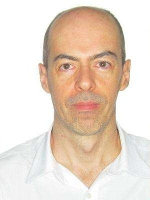
É arquiteto e urbanista paulistano CAU/SP A18856-5 graduado pela Universidade Católica de Santos em julho de 1991, cuja trajetória de mais de 30 anos une projetos de alta complexid…
É arquiteto e urbanista paulistano CAU/SP A18856-5 graduado pela Universidade Católica de Santos em julho de 1991, cuja trajetória de mais de 30 anos une projetos de alta complexidade a uma sólida liderança institucional. Especialista certificado em Concessões e Parcerias Público-Privadas (PPPs) sob a credencial internacional CP³P - Foundation, atua ativamente na governança profissional. É Conselheiro Titular do CAU/SP por dois mandatos (2021-2023 e 2024-2026), integrando as comissões de Exercício Profissional, de Desenvolvimento Profissional e de Ética e Disciplina. Representa o conselho como suplente na Comissão de Edificações e Uso do Solo (CEUSO) da Prefeitura de São Paulo para o biênio 2025/2026. Na AsBEA-SP, atuou como conselheiro fiscal (2019-2021 e 2021-2023) e é coordenador do GT ASBEA-CAU. No âmbito corporativo, atua desde 1997 como sócio-administrador da PMA Arquitetura (MSA + PMA) e, desde 2010, como sócio-fundador e administrador local da S+A Brasi, escritório onde assinou residências integradas de grande porte em vários estados do Brasil. Sua expertise técnica engloba projetos de infraestrutura de transporte e logística de grande escala, como estações da CPTM, a garagem subterrânea da Praça da República e estudos para o Metrô de Lima, no Peru. Na área de premiações e concursos de urbanismo, destaca-se nacionalmente pela coordenação do projeto vencedor do primeiro lugar no Concurso Nacional Renova SP em 2011 (Grupo 1 - Lote 8, Cabuçu de Baixo 5), além de ter conquistado o primeiro lugar no Concurso de Ideias para o Centro Histórico de São Paulo promovido pelo Jóquei Clube de São Paulo.
Titular e suplente, de todas as regiões do estado. O currículo completo abre no clique.
Doutora em Arquitetura Tecnologia e Cidade pela Unicamp, Mestre em Engenharia Urbana pela Universidade Federal de São Carlos. Especialista em Engenharia Urbana pela Universidade Fe…
Doutora em Arquitetura Tecnologia e Cidade pela Unicamp, Mestre em Engenharia Urbana pela Universidade Federal de São Carlos. Especialista em Engenharia Urbana pela Universidade Federal de São Carlos. Especialista em Ergonomia pelo instituto Mapfre da Espanha. Graduada em Arquitetura pela Universidade Católica de Santos e em Desenho Industrial pela Universidade Santa Cecilia. Professora de projeto Arquitetônico, desenho Universal e Acessibilidade na faculdade de Arquitetura e Urbanismo da Universidade Santa Cecília, e de Ergonomia do curso de pós-graduação em Engenharia de Segurança do Trabalho, da mesma universidade. Professora de Planejamento Urbano, e de Arquitetura e Desenho Civil, no curso de Engenharia Civil da FEI São Bernardo do Campo. Elabora projetos de Arquitetura, Ergonomia e Acessibilidade. Conselheira do CAU / SP, triênio 2024/2026.
Graduada em Arquitetura e Urbanismo pela Universidade de São Paulo (1984),com mestrado em Estruturas Ambientais Urbanas pela Faculdade de Arquitetura e Urbanismo- USP (1997) e dout…
Graduada em Arquitetura e Urbanismo pela Universidade de São Paulo (1984),com mestrado em Estruturas Ambientais Urbanas pela Faculdade de Arquitetura e Urbanismo- USP (1997) e doutorado em Estruturas Ambientais Urbanas pela Faculdade de Arquitetura e Urbanismo- USP (2003). É coordenadora do Curso de Arquitetura e Urbanismo do Centro Universitário do Instituto Mauá de Tecnologia -CEUN-IMT desde fevereiro de 2024, docente do Curso de Engenharia Civil do CEUN-IMT desde 2017 onde também foi coordenadora do Curso de Pós-Graduação Práticas Integradas em BIM de 202. Foi coordenadora do Programa de Mestrado Profissional em Projeto, Produção e Gestão do Espaço Urbano do FIAM-FAAM Centro Universitário de 2013 a 2015. Foi Pró-Reitora Acadêmica do FIAM-FAAM Centro Universitário de 2014-2016, diretora de área da mesma instituição entre 2004 e 2013 e coordenadora do Curso de Arquitetura e Urbanismo e do Curso de Tecnologia em Design de Interiores da mesma instituição de 2003 a 2014. Avaliadora ad hoc do Instituto Nacional de Estudos e Pesquisas Educacionais -INEP/MEC do Sistema ARCU-Sul. Tem experiência na área de Arquitetura e Urbanismo, com ênfase em projetos de edificações e sinalização de equipamentos urbanos e transportes. Foi Líder do Grupo de Pesquisa Transformações do território: patrimônio, cultura e sociedade. Atualmente realiza pesquisas relacionadas à inovação e metodologia BIM ministrando aulas de BIM e auxiliando na implementação de conteúdos de Building Information Modeling no projeto pedagógico do IMT. Vice-presidente da Associação Brasileira de Ensino de Arquitetura gestão 2026.
Graduada em Arquitetura e Urbanismo pela Universidade Presbiteriana Mackenzie (1988).Título de Mestre em Projeto de Arquitetura pela Faculdade de Arquitetura e Urbanismo da Univer…
Graduada em Arquitetura e Urbanismo pela Universidade Presbiteriana Mackenzie (1988).Título de Mestre em Projeto de Arquitetura pela Faculdade de Arquitetura e Urbanismo da Universidade de São Paulo - FAUUSP 2023. Profissional: Atualmente Conselheira Titular do Conselho de Arquitetura e Urbanismo CAU/SP (de 2023 a 2026); Membro Titular da Comissão de Comunicação do CAU/SP (de 2024 a 2026); Membro Titular da Comissão de Tecnologia e Informação da Comunicação do CAU/SP (de 2024 a 2026); Coordenadora da Câmara Técnica de Inteligência Artificial (IA) do CAU/SP (de 2024 a 2025); Conselheira Titular do Conselho de Arquitetura e Urbanismo CAU/SP (de 2014 a 2020); Membro Titular da Comissão Membro Titular da Comissão Eleitoral do CAU/SP em 2020; Membro Titular da Comissão Permanente de Finanças do CAU/SP (de 2015 a 2020); Coordenadora da Comissão de Comunicação do CAU/SP (de 2018 a 2020), Membro Titular do GT de Arquitetura de Interiores do CAU/SP (2016 a 2017); Membro Titular da Comissão Especial para o Conselho das Cidades do CAU/SP (2016 a 2017); Membro Titular do Conselho de Obras e Edificações da Prefeitura Municipal de Jundiaí (2017 a 2023); Membro Titular no Conselho FUMAS Prefeitura de Jundiaí (2017 a 2018). Como Perita Judicial atuou nas Comarcas de Jundiaí, Tatuí, Sumaré e Região. Desenvolve há mais de 30 anos em seu escritório de Arquitetura Studio Laranjeira e Camargo, projetos completos (projeto de arquitetura e complementares) para residências de alto padrão, comerciais e institucionais. Gerencia obras em suas diversas etapas de construção.
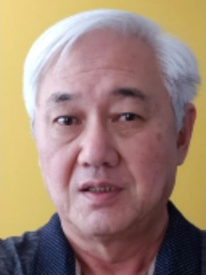
Arquiteto Urbanista com graduação (1981) e mestrado (1990) pela FAU USP, doutorado (2008) em Geografia pela FCT/ UNESP, Estágio Pesquisa Pós-Doutoral (2025) pela ETSA da Universida…
Arquiteto Urbanista com graduação (1981) e mestrado (1990) pela FAU USP, doutorado (2008) em Geografia pela FCT/ UNESP, Estágio Pesquisa Pós-Doutoral (2025) pela ETSA da Universidade de Sevilha-ES. Professor (2009-atual) do Curso de Arquitetura e Urbanismo da FCT/ UNESP/ Presidente Prudente- Coordenador do Curso (2012-2014, 2021-2024). Professor (2022-atual) do Programa de Pós-Graduação em Arquitetura e Urbanismo da PPGARQ FAAC/ UNESP/ Bauru orientando mestrado e doutorado. Coordena o Grupo de Pesquisa Projeto, Arquitetura e Cidade- Núcleo de Estudos em Patrimônio e Projeto da UNESP. Conselheiro Suplente do Conselho de Defesa do Patrimônio Histórico, Arqueológico, Artístico e Turístico do Estado de São Paulo- CONDEPHAAT. Professor da UNOESTE (2003-2009). Trabalhou na Secretaria de Planejamento das Prefeituras de Presidente Prudente (1985-1988) e Álvares Machado (1997-2000). Atuou como Profissional Liberal (1982-2009). Recebeu menção na Premiação Anual do IAB SP 1994. Foi Conselheiro Suplente do CAU SP (2021-2023).
Arquiteta e urbanista. Doutora em História pela UNICAMP, mestre pela USP e especialista em Patrimônio Arquitetônico pela PUC-Campinas, Museologia e Patrimônio Cultural, Perícia e A…
Arquiteta e urbanista. Doutora em História pela UNICAMP, mestre pela USP e especialista em Patrimônio Arquitetônico pela PUC-Campinas, Museologia e Patrimônio Cultural, Perícia e Auditoria Ambiental, Educação Digital pela Universidade do Estado da Bahia – UNEB, e Geoprocessamento, Levantamento e Interpretação de Solos pela UFRRJ. Professora e coordenadora do curso de Arquitetura e Urbanismo da UNIP São José dos Campos há mais de 20 anos. Foi Conselheira Titular do CAU/SP em dois mandatos, com atuação na Comissão de Exercício Profissional, Conselho Diretor, fiscalização, RRT, ética, patrimônio cultural e valorização profissional. Presidiu o IAB-RMV – Instituto dos Arquitetos do Brasil, Departamento da Região Metropolitana do Vale do Paraíba e Litoral Norte. Atua também como arquiteta em projetos, obras, consultorias e assessorias técnicas nas áreas de restauro, reabilitação do patrimônio edificado, inventários urbanos, diagnósticos, mapas de danos, regularização, perícias, planejamento urbano e aprovação junto a órgãos de preservação.
Mestra em Gestão e Desenvolvimento Regional pela Universidade de Taubaté no programa de MGDR (Mestrado de Gestão e Desenvolvimento Regional). Graduada em Educação Física pela Unive…
Mestra em Gestão e Desenvolvimento Regional pela Universidade de Taubaté no programa de MGDR (Mestrado de Gestão e Desenvolvimento Regional). Graduada em Educação Física pela Universidade de Taubaté (1985), e Graduada em Arquitetura e Urbanismo pela Universidade Paulista (2007), com Especialização em Gerenciamento de Projetos pelo IBEC - Instituto Brasileiro de Engenharia e Custos (2016). Atualmente na Universidade Paulista, é professora assist. profiss.II no Depto de Arquitetura e Urbanismo. Trabalhou como Coordenadora e professora do Curso Superior Tec. Design de Interiores. Tem experiência na área de Arquitetura e Urbanismo, com ênfase em Planejamento e Projetos da Edificação. Atua em seu próprio Escritório de Arquitetura na elaboração de Projetos de Edificações, Paisagismo e Interiores, nas áreas residenciais, comerciais e fabris. Membro da Diretoria do IAB - Instituto Arquitetos do Brasil - Região Metropolitana e Vale do Paraíba no período de 2018 a 2022.https://orcid.org/0000-0001-5936-6945
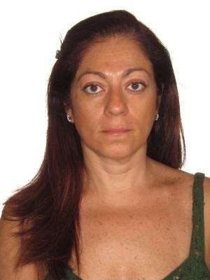
Selma de Sá | Arquiteta e Urbanista Arquiteta e Urbanista formada pela PUC Campinas em 1992, Selma de Sá possui mais de 30 anos de atuação profissional e é fundadora do Studio Sá A…
Selma de Sá | Arquiteta e Urbanista Arquiteta e Urbanista formada pela PUC Campinas em 1992, Selma de Sá possui mais de 30 anos de atuação profissional e é fundadora do Studio Sá Arquitetura e Interiores, criado em 1999, em São Paulo. Ao longo de sua trajetória, desenvolveu projetos residenciais, comerciais, corporativos e de arquitetura de interiores, construindo uma atuação pautada pela integração entre arquitetura, design, funcionalidade e experiência. Seu trabalho busca compreender os espaços como agentes diretos na qualidade de vida das pessoas, aliando identidade, estética, técnica e atenção às transformações do morar e do viver contemporâneo. Participou de importantes mostras e eventos do setor, com trabalhos publicados em veículos especializados como Casa Vogue, Kaza, Decorar, Club & Casa e ID D&D Shopping, além de integrar oito edições do Anuário Casa Vogue Decoradores. Sua atuação também se estende à curadoria, comunicação e promoção da arquitetura e do design. Foi curadora da exposição “Exchanging & Shaping the Space”, realizada no MUBE – Museu Brasileiro da Escultura e Ecologia, em parceria com o Consulado Italiano e a Região Emilia-Romagna, e participou de iniciativas e ações de aproximação entre profissionais, indústria, cultura e mercado. Atuou durante quatro anos na Diretoria Regional da ABD – Associação Brasileira de Designers de Interiores e participa ativamente de debates e iniciativas voltadas à valorização profissional, à representatividade e ao fortalecimento da arquitetura e do urbanismo. Paralelamente à prática de projeto, desenvolve conteúdo, palestras, curadorias e ações digitais, utilizando a comunicação como ferramenta para ampliar o diálogo entre arquitetura, sociedade, cultura e cidade.
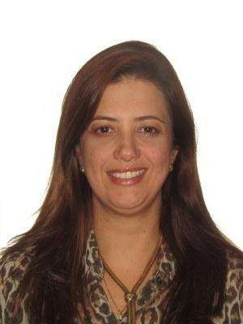
KÁTIA SILVA ARAUJO PÉRSIO Nasc. 18/06/1968 – São José do Rio Preto-SP End. Rua Cila 3536, Bloco 4, ap. 42, Cond. Pantheon, São José do Rio Preto-SP, CEP-15.015-800. Cel. 17-99160 …
KÁTIA SILVA ARAUJO PÉRSIO Nasc. 18/06/1968 – São José do Rio Preto-SP End. Rua Cila 3536, Bloco 4, ap. 42, Cond. Pantheon, São José do Rio Preto-SP, CEP-15.015-800. Cel. 17-99160 9467 Experiência Acadêmica 1986 - 1991 • ARQUITETURA E URBANISMO – Escola de Engenharia de São Carlos – USP – Universidade de São Paulo Experiência Profissional 1992 - 1993 • Arquiteta no escritório do Antônio Alberto Cortez – São José do Rio Preto, SP. 1993 - 1996 • Arquiteta - sócia-proprietária do ESCRITÓRIO DE ARQUITETURA KÁTIA E KÊNIA – São José do Rio Preto, SP. 1996 - 2010 • Sócia proprietária da franquia de móveis planejados - FLORENSE – São José do Rio Preto -SP. 2011- 2016 • Gestora geral da franquia de móveis planejados - FLORENSE – Brasília - DF. 2017- 2021 • Proprietária da empresa COR – Tintas, Texturas e Design – Brasília - DF. 2022- até hoje • Proprietária da empresa KP CONSULTORIA, TREINAMENTO E MARKETING LTDA (NÚCLEO-AZ de arquitetura e design) – São José do Rio Preto-SP
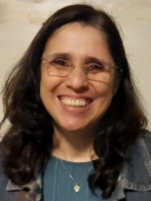
Marcia Helena Souza da Silva - graduada pelo Centro Universitário Moura Lacerda em 1995 em Ribeirão Preto. É atuante na empresa a Souza e Silva Arquitetura, Urbanismo e Meio Ambien…
Marcia Helena Souza da Silva - graduada pelo Centro Universitário Moura Lacerda em 1995 em Ribeirão Preto. É atuante na empresa a Souza e Silva Arquitetura, Urbanismo e Meio Ambiente Ltda., na qual é sócia-proprietária e responsável técnica em Ribeirão Preto, É professora disciplinas de informática aplicada AutoCAD/Archicad/BIM em cursos livres e workshops acadêmicos. Participações: COMUR (Conselho Municipal de Urbanismo de Ribeirão Preto), SASP(do Sindicato dos Arquitetos do Estado de São Paulo), CREA/SP e CAU SP. Certificada em aperfeiçoamento profissional sobre o tema La Sustentabilidad em Arquitectura y Urbanismo VII pela Universitat Politécnica da Catalunya - UPC em Barcelona na Espanha em 2019.
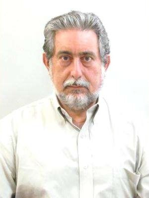
AUGUSTO VALIENGO VALERI Rua Pau Brasil n° 574 – Ribeirão Preto- SP Telefone: Professor de Urbanismo do Centro Universitário Bar…
AUGUSTO VALIENGO VALERI Rua Pau Brasil n° 574 – Ribeirão Preto- SP Telefone: Professor de Urbanismo do Centro Universitário Barão de Mauá. De 2008 a 2023 Gerente de Integração das Políticas de Mobilidade do Departamento de Mobilidade Urbana da Secretaria Nacional de Transportes e da Mobilidade Urbana do Ministério das Cidades, de 2003 a 2008. Gerente de Integração das Políticas de Mobilidade do Departamento de Mobilidade Urbana de Junho de 2003 a 2008. ● Diretor do Planejamento Físico Territorial da Secretaria de Planejamento e Desenvolvimento – da Prefeitura Municipal de Ribeirão Preto – SP de 1993 a 1997 e de 2001 à 2003. Augusto Valiengo Valeri Arquiteto e Urbanista - CAU-BR Nº A70998
Jane Marta, arquiteta e urbanista, com experiência profissional em Arquitetura e Urbanismo desde 2005 e trajetória de mais de 20 anos em gestão administrativa, de pessoas, processo…
Jane Marta, arquiteta e urbanista, com experiência profissional em Arquitetura e Urbanismo desde 2005 e trajetória de mais de 20 anos em gestão administrativa, de pessoas, processos e projetos. Minha atuação reúne experiência em projetos e obras, regularizações, planejamento, manutenção predial, gestão pública, patrimônio cultural e representação profissional. Atualmente estou Conselheira Titular do CAU/SP, gestão 2024–2026, integrando a Comissão de Patrimônio Cultural (CPC) e a Comissão de Organização e Administração (COA), onde atuo na preservação e difusão do patrimônio, na formação continuada, no aprimoramento da gestão, da transparência e dos processos institucionais. Também fui Subgerente Regional do CAU/SP no Alto Tietê, experiência que ampliou meu conhecimento sobre as demandas dos profissionais, das entidades e dos municípios. Em Mogi das Cruzes, atuei como Chefe de Divisão de Tombamento e Arquivo da Prefeitura e integro espaços de representação profissional e participação social. Minha trajetória inclui atuação na AEAMC – Associação dos Engenheiros e Arquitetos de Mogi das Cruzes, no SASP – Sindicato dos Arquitetos no Estado de São Paulo, no COMPHAP – Conselho Municipal de Preservação do Patrimônio Histórico, Cultural, Artístico e Paisagístico de Mogi das Cruzes, na UNABAT, no CMPU de Guarulhos e no acompanhamento do PDUI da Região Metropolitana de São Paulo. Também participei da Conferência da Cidade de Guarulhos, sendo eleita para representar o segmento dos trabalhadores nas etapas estadual e nacional. Ao longo dessa caminhada, tenho defendido a presença ativa das entidades e dos profissionais nos espaços de decisão, o reconhecimento das atribuições dos arquitetos e urbanistas, mais oportunidades de trabalho e valorização profissional. Acredito em um CAU/SP mais próximo, transparente e atuante, capaz de defender o exercício profissional, dialogar com as diferentes regiões do Estado e fortalecer a Arquitetura e Urbanismo perante a sociedade.
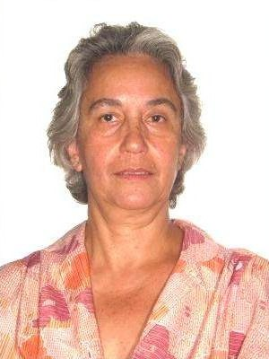
Ana Sandim, formação arquiteta e urbanista pela Universidade de Mogi das Cruzes em 1988, com Mestrado em Tecnologia da Informação pela Universidade Bras Cubas, lecionou na Faculdad…
Ana Sandim, formação arquiteta e urbanista pela Universidade de Mogi das Cruzes em 1988, com Mestrado em Tecnologia da Informação pela Universidade Bras Cubas, lecionou na Faculdade de Belas Artes, Universidade de Bras Cubas, Universidade Cruzeiro do Sul e atual leciona na Universidade de Mogi das Cruzes. Atua aais de 25 anos como conselheira em comselhosunicidades como: Comphap,Comuc,Concidade e,Comoma, CRS nas políticas públicas de Mogi das Cruzes. Atua na área profissional em projetos de edificação na área da saúde, comercial e industrial. Faz trabalhos na área do patrimônio histórico, meio ambiente e de instalação como sistemas de proteção e combate a incêndio.
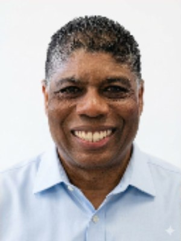
Arquiteto e urbanista, com especialização em Gestão e Educação Ambiental. Atua com projetos, consultoria e assessoria em planejamento, gestão e licenciamento urbano e ambiental. Fo…
Arquiteto e urbanista, com especialização em Gestão e Educação Ambiental. Atua com projetos, consultoria e assessoria em planejamento, gestão e licenciamento urbano e ambiental. Foi coordenador técnico do Plano Diretor de Caraguatatuba. Atuou como docente nos cursos de Arquitetura e Urbanismo e Engenharia Civil da Unimódulo/Unicsul. Foi secretário adjunto de Meio Ambiente e de Urbanismo de Caraguatatuba. Exerceu os cargos de conselheiro do CREA-SP (2 gestões) e do CAU/SP. (3 gestões) Foi gerente regional do CAU/SP no Vale do Paraíba, Serra da Mantiqueira e Litoral Norte. Foi presidente da Associação de Engenheiros e Arquitetos de Caraguatatuba. É membro do CBH-LN desde 1998 e atual presidente do Grupo Setorial do Gerenciaento Costeiro do Litoral Norte. (GERCOLN) É diretor da Associação dos Arquitetos de Caraguatatuba e diretor de Relações Institucionais do SASP.
Arquiteta e Urbanista, formada pela UNIMAR em 1997, Atuante na profissão há 29 anos. Trabalhei na Secretária de Urbanismo de Tupã SP; e desde o início de carreira atuando em projet…
Arquiteta e Urbanista, formada pela UNIMAR em 1997, Atuante na profissão há 29 anos. Trabalhei na Secretária de Urbanismo de Tupã SP; e desde o início de carreira atuando em projetos arquitetônicos e gerenciamento de obras na mesma cidade. Em 2023, na cidade de São Paulo, atuei como gerente de oberas e arquitetura de qualidade de 3 grandes marmorarias, Athenee Mármores, Pedras Guarani e Santorini Mármores. Dei início ao escritório M2 Arquitetas em 2011, onde atuei em obras residenciais e corporativas, com minha autoria e ou como gestora de obras. Em 2023 vim definitivamente para Caraguatatuba SP, seguindo com a atuação no escritório próprio M2 Arquitetas; E em 2025 iniciei o trabalho em arquitetura de qualidade, na construção do Hotel Hampton By Hilton Caraguatatuba pela Construtora GPE. Também em 2025 me tornei Presidente da AAUC (Associação dos Arquitetos e Urbanistas de Caraguatatuba) com o intuito de contribuir com a valorização e capacitação dos profissionais no Litoral Norte de SP. São 29 anos ininterruptos de carreira.
Arquiteto e Urbanista, formado em 2000 pela Faculdade de Arquitetura e Urbanismo Dom Pedro II, com formação anterior em Design de Interiores pelo SENAC. Possui trajetória profissio…
Arquiteto e Urbanista, formado em 2000 pela Faculdade de Arquitetura e Urbanismo Dom Pedro II, com formação anterior em Design de Interiores pelo SENAC. Possui trajetória profissional consolidada nas áreas de arquitetura, urbanismo, patrimônio histórico, arquitetura hospitalar e gestão de projetos. É pós-graduado em Gestão Ambiental, Avaliação e Perícias, e possui especialização Master em Projetos Hospitalares e Estabelecimentos de Saúde em BIM. Atua há mais de duas décadas no desenvolvimento e gestão de projetos arquitetônicos para os setores público, privado, hospitalar, comercial e cultural. Possui ampla experiência institucional, tendo exercido cargos de direção e presidência no IAB, SASP, COMDEPHACT e COMTUR de São José do Rio Preto. Atuou como Gerente Regional do CAU/SP e integra, desde 2024, o Conselho de Arquitetura e Urbanismo como Conselheiro Suplente. Tem destacada atuação na preservação do patrimônio histórico, artístico e cultural, incluindo participação em grupos técnicos e na revisão do Plano Diretor municipal. Entre seus principais trabalhos estão projetos e intervenções em hospitais, ambulatórios, centros de diagnóstico, centros cirúrgicos e outros estabelecimentos de saúde. Também possui experiência em projetos de revitalização urbana e cultural, destacando-se o Mercado Municipal, o Museu de Arte Primitivista e o Asilo de Schimidt. Sua atuação profissional reúne arquitetura, urbanismo, patrimônio, saúde, cultura e turismo, com forte participação técnica e institucional no desenvolvimento de São José do Rio Preto e região.
GIANI SENEFONTE Arquiteta e Urbanista | São José do Rio Preto – SP Formação Acadêmica • Graduação em Arquitetura e Urbanismo (2013). • Pós-graduação em Lighting Design. • Master em…
GIANI SENEFONTE Arquiteta e Urbanista | São José do Rio Preto – SP Formação Acadêmica • Graduação em Arquitetura e Urbanismo (2013). • Pós-graduação em Lighting Design. • Master em Arquitetura (2019). Experiência Profissional • Desenvolvimento de projetos arquitetônicos. • Gerenciamento e acompanhamento de obras. • Assessoria técnica para aprovação e regularização de projetos. • Atuação em processos administrativos e interface com órgãos públicos. Experiência Institucional • Gerente Regional do Sindicato dos Arquitetos do Estado de São Paulo – SASP. Competências • Gestão de processos técnicos e administrativos. • Planejamento, coordenação e relacionamento institucional. • Comunicação, negociação e atuação multidisciplinar.
Arquiteto e Urbanista formado pela FAUS-UNISANTOS (1995) e Pós-Graduado em Engenharia de Segurança do Trabalho pela UNISANTA (1999). Atua profissionalmente desde 1996 no desenvolvi…
Arquiteto e Urbanista formado pela FAUS-UNISANTOS (1995) e Pós-Graduado em Engenharia de Segurança do Trabalho pela UNISANTA (1999). Atua profissionalmente desde 1996 no desenvolvimento de projetos arquitetônicos, urbanísticos, luminotécnicos e de acessibilidade, além de gerenciamento e consultoria técnica em diversos segmentos. Possui ampla experiência na qualificação e modernização de edificações. Destaca-se pela atuação em defesa da profissão, tendo presidido a Associação de Engenheiros e Arquitetos de Santos entre 2022 e 2023, sendo atualmente Conselheiro Vitalício da entidade. Participou de conselhos voltados ao desenvolvimento urbano regional, integrando atualmente o CONDESB. É Conselheiro Suplente do CAU/SP na gestão 2023–2026, atuando pelo fortalecimento institucional, valorização profissional e representatividade dos arquitetos e urbanistas.
Arquiteta e Urbanista formada pela FAUS - UNISANTOS (1995), atua profissionalmente há mais de três décadas no desenvolvimento …
Arquiteta e Urbanista formada pela FAUS - UNISANTOS (1995), atua profissionalmente há mais de três décadas no desenvolvimento de projetos residenciais, comerciais e corporativos, com foco em acessibilidade, sustentabilidade, conservação ambiental e qualidade dos espaços construídos. Mantém atuação profissional em escritório de arquitetura com ampla experiência na Baixada Santista e região. Destaca-se pela participação na Associação de Engenheiros e Arquitetos de Santos (AEAS), onde é Conselheira eleita (2017-2023; 2023-2029) e pela atuação no Conselho Municipal de Defesa do Meio Ambiente de Santos (COMDEMA), no qual foi eleita vice-presidente, gestão 2023/2024, onde terminou o mandato como presidente. Mestranda em Ciência e Tecnologia do Mar pela UNIFESP, foi parecerista técnica em revista de arquitetura e autora de publicação científica (artigo) na área ambiental, conciliando prática profissional, produção acadêmica e compromisso com a valorização da Arquitetura e Urbanismo.
Heliton Escorpeli, arquiteto-urbanista graduado pela Pontifícia Universidade Católica de Campinas (PUC-Campinas), especialista em Cidades, Planejamento Urbano e Participação Popula…
Heliton Escorpeli, arquiteto-urbanista graduado pela Pontifícia Universidade Católica de Campinas (PUC-Campinas), especialista em Cidades, Planejamento Urbano e Participação Popular pela Universidade Federal de São Paulo (UNIFESP) – Instituto das Cidades, e pós graduação em Gestão Pública Municipal pela Universidade de Brasília (UNB). Conselheiro Municipal CONDEPHAM, foi Diretor Centro Acadêmico CAFAU, Diretor de Ensino e Extensão da FeNEA, comissão eleitoral SASP 2022, comissão eleitoral CAU/SP 2023, Integrou a comissão de revisão do Plano Diretor de Nova Odessa, membro da comissão projeto de Mobilidade Urbana de Americana, presidente do Conselho Municipal de Habitação de Nova Odessa/SP, sócio fundador da Cooperativa de Trabalho Braço Forte. Atualmente com escritório próprio de arquitetura em projetos e regularizações, com projetos selecionados em concursos de arquitetura nacional e internacional.
Arquiteta e Urbanista formada pela Pontifícia Universidade Católica de Campinas (PUC-Campinas), com mais de 37 anos de atuação profissional nas áreas de arquitetura, urbanismo, pai…
Arquiteta e Urbanista formada pela Pontifícia Universidade Católica de Campinas (PUC-Campinas), com mais de 37 anos de atuação profissional nas áreas de arquitetura, urbanismo, paisagismo, planejamento urbano e gestão pública. Possui sólida experiência na elaboração e coordenação de projetos arquitetônicos, regularização de edificações, consultorias, perícias,arborização urbana e desenvolvimento de soluções voltadas à sustentabilidade e à valorização do ambiente construído. Atua de forma destacada na defesa, preservação e divulgação do patrimônio histórico, arquitetônico e cultural do município de São Pedro (SP), desenvolvendo pesquisas, projetos culturais e ações de educação patrimonial que contribuem para a proteção da memória urbana e da identidade local. Complementa sua formação com graduação em Gestão Pública, especialização em Design Instrucional e formação técnica em Transações Imobiliárias, reunindo visão multidisciplinar para enfrentar os desafios contemporâneos da profissão. Defende a valorização do exercício profissional, a ética, a qualificação permanente dos arquitetos e urbanistas e o fortalecimento institucional do CAU como agente de defesa da sociedade, do patrimônio cultural e da boa arquitetura, promovendo cidades mais sustentáveis, mais verdes, preocupadas com a arborização urbana e cidades mais inclusivas e comprometidas com sua história.
Eder Roberto da Silva, 55 anos, natural de Ribeirão Preto-SP-Brasil. Arquiteto e Urbanista/UNESP, Mestrado/UFSCar. É Professor Universitário, Corretor Imobiliário e Radialista. Foi…
Eder Roberto da Silva, 55 anos, natural de Ribeirão Preto-SP-Brasil. Arquiteto e Urbanista/UNESP, Mestrado/UFSCar. É Professor Universitário, Corretor Imobiliário e Radialista. Foi membro titular do Conselho Universitário da UNESP, Conselho Curador da Fundação Padre Anchieta /Sistema de Rádio e TV Cultura e do Conselho Nacional das Cidades/Ministério das Cidades, Conselheiro do CREA-SP, Diretor Financeiro e membro da Comissão de Ética do CAUSP, Diretor da Federação Nacional dos Arquitetos e Urbanistas (FNA) e gerente do Escritório Regional do CAUSP Ribeirão Preto. Atualmente é Conselheiro Titular no CAU SP, Coordenador da Comissão de Mobilidade Urbana e diretor no Sindicato dos Arquitetos e Urbanistas no Estado de São Paulo (SASP).
Durante a graduação sempre atuei frente aos grupos de produção acadêmica em formato de extensão extracurricular, representação discente e Diretório Acadêmico, trabalhando no envolv…
Durante a graduação sempre atuei frente aos grupos de produção acadêmica em formato de extensão extracurricular, representação discente e Diretório Acadêmico, trabalhando no envolvimento e boa relação entre colegas e docentes. Posteriormente, no mestrado, pesquisei e atuei na disseminação de informações sobre a necessidade e qualidade da atuação do arquiteto na implantação de equipamentos de saúde no município de Franca. Desde 2023 atuo administrando o Instituto João de Barro em Franca, principalmente nas frentes sociais e de habitação - tanto na orientação das famílias vulneráveis acerca das necessidades habitacionais como nas obras do Instituto.
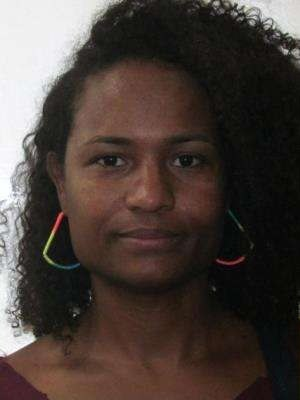
Ativista por uma sociedade antirracista, atiLGBTfobica e pelo fim do machismo. Coordenádora do setoria LGBTQIAP+ do PT Santo André. Mestra em sociologia, pesquisadora das questões …
Ativista por uma sociedade antirracista, atiLGBTfobica e pelo fim do machismo. Coordenádora do setoria LGBTQIAP+ do PT Santo André. Mestra em sociologia, pesquisadora das questões e raciais e da transexualidade. Professora de sociologia da rede pública de São Paulo, arquiteta. Atualmente Coordenadora Administrativa do CAU/SP (Conselho de Arquitetura e Urbanismos do Estado de São Paulos)). Palestrante e formadora em universidades, empresas e escolas. Com atuação de mais de quinze anos nos movimentos negros, educação e LGBTQIA+. Mulher negra trans luta por uma sociedade antirracista, anti LGBTfóbica e por mais espaços de diálogos e formações trazendo conhecimento ao nível popular.
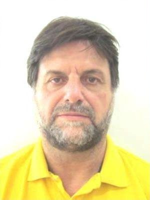
Especialista em desenvolvimento urbano e social, presidi a entidade de habitação Pró-Moradia em Santo André entre os anos de 1993 a 2000, liderando projetos habitacionais do planej…
Especialista em desenvolvimento urbano e social, presidi a entidade de habitação Pró-Moradia em Santo André entre os anos de 1993 a 2000, liderando projetos habitacionais do planejamento à execução para mais de 2.100 familias em núcleos chamados: Cidade São Jorge, Sapopemba, Jardim Santo André em SP, João Ramalho e Jardim Irene.Também atuei fortemente na infraestrutura das áreas verdes do Municipio de Santo André, coordenando a revitalização de praças e corredores verdes do sistema viáriao do municipio e mais doze parques urbanos, destacando-se a criação do zero os parques; Pq. Central, Pq. Guaraciaba, Pq. Sergio Ciryno e Parque Escola.
Letícia Rocco Kirchner é arquiteta e urbanista formada pela Universidade Estadual de Londrina, com mais de 20 anos de experiência na gestão pública e privada, no terceiro setor e n…
Letícia Rocco Kirchner é arquiteta e urbanista formada pela Universidade Estadual de Londrina, com mais de 20 anos de experiência na gestão pública e privada, no terceiro setor e na condução de projetos multidisciplinares nas áreas de planejamento urbano, mobilidade e regularização fundiária. Ao longo de sua trajetória, coordenou importantes iniciativas de requalificação urbana e mobilidade na cidade de São Paulo e projetos de regularização fundiária em diferentes regiões do Estado de São Paulo. Foi Secretária Municipal de Planejamento de Bauru entre 2017 e 2020, quando liderou a reestruturação das políticas urbanas do município, com ampla revisão da legislação e dos instrumentos de planejamento urbano, além da modernização dos processos de licenciamento. Também atuou como docente de Planejamento Urbano e Regional na UNESP/Bauru, entre 2016 e 2017. No CAU/SP integrou, como Conselheira Titular, a Comissão de Relações Institucionais na gestão 2024-2026 e exerceu, até 2025, a função de Coordenadora Adjunta da Câmara Temática de Pessoa Jurídica.
Arquiteta Urbanista formada pela UNESP em 2008. Mestrado em Engenharia de Produção pela UNESP em 2013. Servidora pública da prefeitura municipal de Bauru onde atual sempre na área …
Arquiteta Urbanista formada pela UNESP em 2008. Mestrado em Engenharia de Produção pela UNESP em 2013. Servidora pública da prefeitura municipal de Bauru onde atual sempre na área de planejamento urbano como diretora e chefe de seção. Atualmente supervisora de REURB -S na secretaria Municipal de Habitação. Atualmente diretora da ASSENAG de Bauru, e o sindicato dos servidores Municipais - SINSERM. Filiada ao sindicato dos arquitetos do Estado de SP. Atuante na luta pela Carreira de Estado dos arquitetos urbanistas.
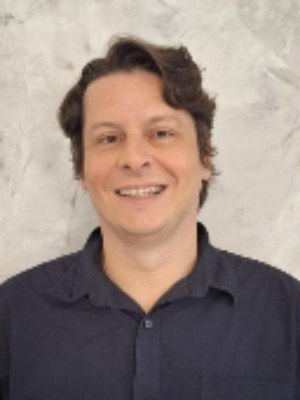
José Renato Soibelmann Melhem, Arquiteto, Urbanista e consultor formado pela PUC de Campinas. Tem sólida trajetória na representação profissional, gestão pública e na formulação de…
José Renato Soibelmann Melhem, Arquiteto, Urbanista e consultor formado pela PUC de Campinas. Tem sólida trajetória na representação profissional, gestão pública e na formulação de políticas urbanas. Atuou como conselheiro do CAU/SP em três gestões, conselheiro do CREA-SP, coordenador no SASP e diretor do IAB-SP. Também exerceu funções estratégicas na Prefeitura de São Paulo e no Governo do Estado, onde foi Subsecretário de Desenvolvimento Metropolitano. Destaca-se por sua atuação em acessibilidade, desenho universal, mobilidade urbana e qualificação dos espaços públicos, contribuindo para o fortalecimento institucional da profissão.
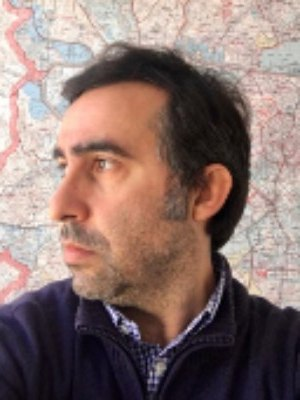
Arquiteto e urbanista, graduado pela PUC-Campinas, com formação complementar no Politecnico di Milano, Itália. Possui Master em Planejamento Urbano Sustentável pela Università IUAV…
Arquiteto e urbanista, graduado pela PUC-Campinas, com formação complementar no Politecnico di Milano, Itália. Possui Master em Planejamento Urbano Sustentável pela Università IUAV di Venezia, Itália, e Mestrado em História da Arte pela Universidade Federal de São Paulo -UNIFESP. Foi conselheiro suplente do CAU-SP (2015–2017) e integrou Grupos de Trabalho do Conselho nas áreas de Patrimônio Histórico e Arquitetura de Interiores. Entre 2018 e 2020, atuou como assessor parlamentar na Câmara Municipal de São Paulo, com foco em urbanismo, meio ambiente e políticas públicas. Atua profissionalmente desde 2005 e, desde 2014, é responsável técnico pela ACB Arquitetura + Design, desenvolvendo projetos e obras em diferentes escalas. É também presidente da AMORA – Associação de Moradores e Amigos de Perdizes e colaborador do Instituto Rios e Ruas. Sua trajetória articula arquitetura, urbanismo, patrimônio cultural, sustentabilidade e participação social, reunindo experiência profissional, atuação institucional e pesquisa em iniciativas voltadas à qualificação do espaço urbano e à construção de cidades mais sustentáveis, resilientes e participativas.
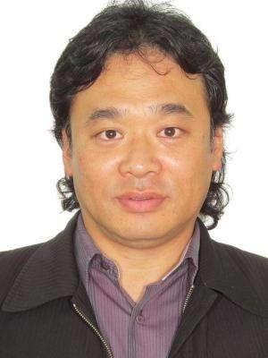
EDUARDO HABU-Arquiteto e Urbanista graduado pela PUC de Campinas; Especialista Conciliação, Mediação e Arbitragem-CBMAE; Gestor Cultural-UNESP; Assistente Técnico Pericial, Profis…
EDUARDO HABU-Arquiteto e Urbanista graduado pela PUC de Campinas; Especialista Conciliação, Mediação e Arbitragem-CBMAE; Gestor Cultural-UNESP; Assistente Técnico Pericial, Profissional do Ano Arquiteto em 2018 e 2003 da Câmara Municipal de Suzano; Presidente 2021-26-Associação dos Engenheiros, Arquitetos e Agrônomos de Suzano-AEAAS; Coordenador 2024-25 da União das Associações da Bacia do Alto Tietê-UNABAT. Cargos exercidos: Conselheiro do CAU/SP; Conselheiro do CREA/SP; Conselheiro Superior do IAB; Presidente do IAB/SP–Núcleo Suzano; Coordenador Municipal 2005 a 2012 do Patrimônio Histórico Cultural de Suzano; Conselheiro do Conselho Municipal de Cultura de Suzano; Conselheiro do Conselho Municipal do Patrimônio Cultural de Suzano-COMPAC; Conselheiro do Conselho Municipal de Turismo de Suzano; Conselheiro Municipal do Desenvolvimento Econômico de Suzano; Membro do Comitê da Bacia Hidrográfica do Alto Tietê;
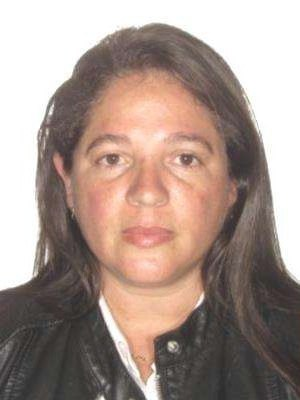
Arquiteta e Urbanista, Técnica em Edificações e Pós Graduada em Engenharia de Tráfego, com mais de 33 anos de sólida trajetória profissional na Região do Alto Tietê. Ampla experiên…
Arquiteta e Urbanista, Técnica em Edificações e Pós Graduada em Engenharia de Tráfego, com mais de 33 anos de sólida trajetória profissional na Região do Alto Tietê. Ampla experiência no desenvolvimento de projetos residenciais, comerciais e institucionais na iniciativa privada. Servidora pública concursada, atuando desde 2014 na gestão estratégica como Coordenadora da Engenharia de Tráfego na Prefeitura Municipal de Suzano com relevância em grandes mudanças no trânsito da cidade como a readequações viárias em pontos estratégicos para melhora de fluxos e segurança. Perfil em equipes multidisciplinares, tomada de decisões complexas, planejamento urbano, mobilidade e compatibilização de projetos técnicos voltados à infraestrutura e legislação edilícia. Ganhou destaques ao longo da sua trajetória profissional com moções realizadas pelo Município com reconhecimentos através de condecorações de Título de Honra ao Mérito em 2009 como Arquiteta do Ano e Melhor Servidora Pública Municipal em 2016.
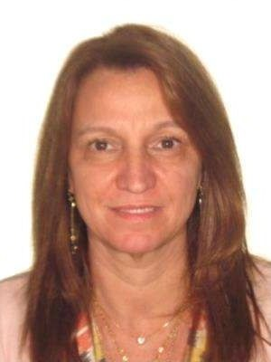
Arquiteta e Urbanista pela PUC-Campinas. Mestre em Engenharia Urbana pela POLI–USP. Presidente do IBAPE/SP (2010–2012) e Membro Vitalício do Conselho Consultivo. Conselheira do CAU…
Arquiteta e Urbanista pela PUC-Campinas. Mestre em Engenharia Urbana pela POLI–USP. Presidente do IBAPE/SP (2010–2012) e Membro Vitalício do Conselho Consultivo. Conselheira do CAU/SP nos períodos 2013–2015, 2016–2018 e 2024–2026. Especialista em avaliações de bens, com ampla atuação em processos judiciais e extrajudiciais. Professora convidada em cursos de extensão e pós-graduação no Mackenzie e Belas Artes. Coautora de obras de referência em Engenharia de Avaliações, Métodos Científicos e a Engenharia de Avaliações (2016), Avaliação de Aluguéis em Shopping Centers (2023) e Avaliação de Imóveis em Desapropriações para Infraestrutura (2024).
Arquiteto e Urbanista formado pela Universidade Estadual de Londrina em 2008 • Pós Graduado em Perícias de Engenharia e Avaliações pela Universidade Presbiteriana Mackenzie em parc…
Arquiteto e Urbanista formado pela Universidade Estadual de Londrina em 2008 • Pós Graduado em Perícias de Engenharia e Avaliações pela Universidade Presbiteriana Mackenzie em parceria ao IBAPE/SP em 2017 • Atua como Assistente Técnico em demandas judiciais em todo o Brasil, desde 2012 • Atua como Perito Judicial nos Foros de São Paulo, Guarulhos e Mogi das Cruzes, desde 2012 • Membro Titular do IBAPE/SP, desde 2014 • Certificado em Engenharia de Avaliações pelo IBAPE Nacional em nível AAA (máximo), desde 2018 • Atual Coordenador da Câmara de Avaliações do IBAPE/SP, gestões 2024/2025 e 2026/2027 • Vice Coordenador da Câmara de Avaliações do IBAPE/SP, gestões 2021 e 2022/2023 • Co-coordenador e co-relator da cartilha Diretrizes Básicas para Avaliações de Locações em Shopping Centers do IBAPE-SP • Sócio fundador da YAGOME Perícia e Avaliação de Imóvel.
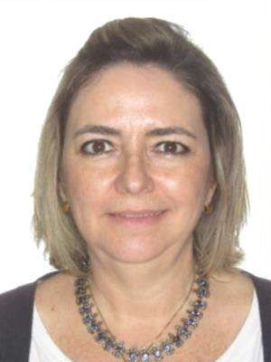
Formada pela PUC-Campinas em 1988, especialista em Avaliações e Perícias Imobiliárias. Com 37 anos de experiência no mercado de Campinas e região pela AF Arquitetura, atua em proje…
Formada pela PUC-Campinas em 1988, especialista em Avaliações e Perícias Imobiliárias. Com 37 anos de experiência no mercado de Campinas e região pela AF Arquitetura, atua em projetos e obras residenciais, comerciais e institucionais. Reúne histórico de liderança na categoria: ex-membro do IAB e AEAC, foi conselheira do CREA/SP (2003–2008) e do CAU/SP (2015–2020), atuando como coordenadora da Comissão de Ética e Disciplina. É a atual conselheira suplente.
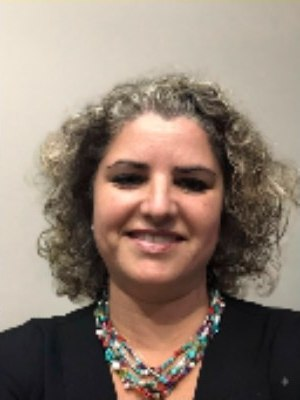
Arquiteta e urbanista com mais de 30 anos de atuação profissional, desenvolve projetos de arquitetura com ênfase em restauro, conservação e requalificação do patrimônio cultural, r…
Arquiteta e urbanista com mais de 30 anos de atuação profissional, desenvolve projetos de arquitetura com ênfase em restauro, conservação e requalificação do patrimônio cultural, retrofit e intervenções em edificações de interesse histórico, destacando-se pela coordenação de projetos aprovados pelos principais órgãos de preservação e por programas de fomento à cultura. Sua produção arquitetônica alia rigor técnico, pesquisa histórica e compromisso com a valorização do patrimônio edificado. Na área acadêmica, atuou como professora em cursos de Arquitetura e Urbanismo e Engenharia, como Unicamp e Einstein, exercendo também a coordenação do curso de Arquitetura e Urbanismo das Faculdades Integradas Einstein de Limeira, contribuindo para a formação de novos profissionais. Paralelamente, exerce papel de destaque na defesa da arquitetura e do patrimônio cultural, participando ativamente de entidades de classe e órgãos colegiados. Foi conselheira no CONDEPHALI por mais de 23 anos tendo sido presidente por diversas gestões. Atualmente é Coordenadora Executiva do DOCOMOMO São Paulo na gestão 2025-2026. Foi fundadora do IAB – Núcleo Limeira e está como vice-presidente da Associação Pró-Memória de Limeira e Região, onde contribui para o fortalecimento das políticas públicas de preservação, da qualificação profissional e da valorização da arquitetura como instrumento de desenvolvimento cultural e social.
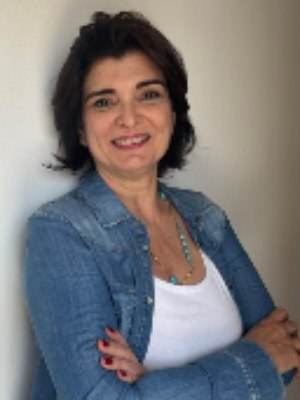
Arquiteta e urbanista graduada pela UNISANTOS, Mestre em Engenharia Urbana pela UFSCar e Doutora em Arquitetura e Urbanismo pelo IAU-USP, São Carlos. Coordenou escritório próprio d…
Arquiteta e urbanista graduada pela UNISANTOS, Mestre em Engenharia Urbana pela UFSCar e Doutora em Arquitetura e Urbanismo pelo IAU-USP, São Carlos. Coordenou escritório próprio de projetos de arquitetura, em São José do Rio Preto, com projetos residenciais e institucionais, no Brasil e em Portugal, antes de ingressar na atividade acadêmica nos cursos privados de Arquitetura e Urbanismo de S. J. Rio Preto e de Ribeirão Preto, SP. Coordenou o Curso de Arquitetura e Urbanismo do Centro Universitário de Rio Preto – UNIRP por 16 anos e ali ministrou aulas durante 23 anos, nas disciplinas de projeto de arquitetura, projeto de urbanismo e planejamento urbano e regional. Representou o Estado de São Paulo como delegada em 3 Conferências Nacionais de Cidades, em Brasília. Foi Conselheira Titular do Conselho de Arquitetura e Urbanismo do Estado de São Paulo, nas gestões 2018-2020 e 2021-2023. Faz desenhos livres com o grupo Urban Sketchers que ajudou a fundar, em São José do Rio Preto(@uskriopreto) e, há 5 anos, apresenta semanalmente o Podcast “Vida Urbana”, na rádio CBN Grandes Lagos, de São José do Rio Preto. Atualmente, realiza planos diretores municipais e projetos arquitetônicos em empresa própria.
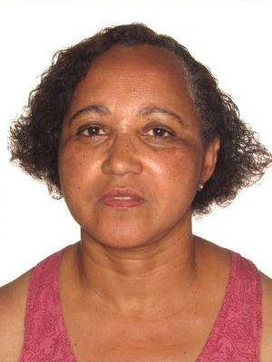
CLAUDETE APARECIDA LOPES - ARQUITETA URBANISTA & PAISAGISTA EXPERIENCIA ARQUITETURA 1987 - 2026 AUTONÔMA S. Paulo -SP ARQUITETA URBANISTA & PAISAGISTA. Paisagismo, Bio arquitetura…
CLAUDETE APARECIDA LOPES - ARQUITETA URBANISTA & PAISAGISTA EXPERIENCIA ARQUITETURA 1987 - 2026 AUTONÔMA S. Paulo -SP ARQUITETA URBANISTA & PAISAGISTA. Paisagismo, Bio arquitetura, Arquitetura Sustentável. 125 Projetos e Execução Residenciais;. Projetos Comerciais e Industriais;. Projetos Paisagísticos e Manutenção de Jardins. Layout / Feira e Eventos. Secretaria de Habitação de São Paulo – Reurbanização de Favelas (Vila Prudente, Campo Limpo). Inst. Social da Pastoral de Guarulhos - Reurbanização de Favelas de Guarulhos,. Gerenciamento de Infra Estrutura do Condomínio Fazenda da Ilha – Embu- Guaçu. Projeto e Coordenação de Montagem de Expo -Agro Embu- Guaçu (2004 – 2009). Bio arquitetura e Permacultura e paisagismo ecológico. Conselheira Titular /Comissão de Ética do CAU/SP (triênio 2015 a 2017). Membro Suplente do Conselho Consultivo da Sub- Região Sudoeste da RMSP (2018 a 2020). Membro do COMPEMA – Conselho Municipal de Meio Ambiente de Embu- Guaçu (2025-2027) FORMAÇÃO - EMPRAPA – Produção de hortaliças PANC ’s para uso doméstico - On Line /12hs 08/2020 - - ESCOLA SENAI ARI TORRES – Marcenaria e Restauro - INST. GESC/ MBAS DA FIA/USP - Gestão para -Organizações da Sociedade Civil do 3º Setor - IPER- INSTITUTO DE PERMACULTURA RAMA –Técnicas da Bi Construção - SEAE- SOCIEDADE ECOLOGICA DE EMBU - Saneamento Ecológico – Jardins Filtrantes - UNG -UNIVERSIDADE DE GUARULHOS – Arquitetura e Urbanismo
Arquiteto Urbanista, Mestre e Doutorando em Planejamento Urbano e Regional. Vice-Presidente da Associação de Engenheiros e Arquitetos de São José dos Campos. Conselheiro da AGEMVAL…
Arquiteto Urbanista, Mestre e Doutorando em Planejamento Urbano e Regional. Vice-Presidente da Associação de Engenheiros e Arquitetos de São José dos Campos. Conselheiro da AGEMVALE - Agência Metropolitana do Vale do Paraíba. Conselheiro do CMDU (Conselho Municipal de Desenvolvimento Urbano), Perito do TJSP – Tribunal de Justiça de São Paulo e da Defensoria Pública do Estado de São Paulo. Proprietário da Brant Zaroni Consultoria e Projetos. Outras experiências: Presidente do IAB (Núcleo do Vale do Paraíba). Diretor do SASP (Sindicato dos Arquitetos do Estado de São Paulo). Conselheiro do COMPHAC (Conselho Municipal de Preservação do. Patrimônio Histórico, Artístico, Paisagístico e Cultural). Conselheiro do COMUS (Conselho Municipal de Saúde). Coordenador do curso de Arquitetura e Urbanismo na ETEP (CETEC). Professor na Universidade Paulista – UNIP, Faculdades Anhanguera. Tenente Arquiteto da Força Aérea Brasileira do Departamento de Ciência e Tecnologia Aeroespacial – DCTA. Vice Presidente do CDTCC (Centro de Desenvolvimento Tecnológico da Construção Civil). Arquiteto Urbanista no programa de regularização dos loteamentos clandestinos e no programa de plantas populares da Prefeitura de São José dos Campos. Conselheiro do CREASP.
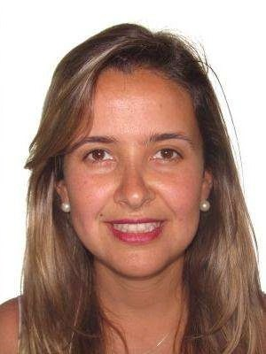
Arquiteta e Urbanista, atuo no mercado desde 2005, desenvolvendo projetos que unem funcionalidade, estética e qualidade de vida. Iniciei minha trajetória no setor público, integran…
Arquiteta e Urbanista, atuo no mercado desde 2005, desenvolvendo projetos que unem funcionalidade, estética e qualidade de vida. Iniciei minha trajetória no setor público, integrando a Secretaria de Planejamento da Prefeitura de Itatiba, onde atuei até 2012 e tive a oportunidade de participar de importantes projetos para o município, entre eles o Parque da Juventude, um dos marcos urbanísticos da cidade. Atualmente, em meu escritório de arquitetura, junto de uma equipe de 03 arquitetas, nos dedicamos ao desenvolvimento de projetos arquitetônicos e de interiores. Nosso trabalho é pautado pela busca do equilíbrio entre os sonhos e expectativas de cada cliente, a viabilidade técnica da execução e a excelência do resultado final. Acreditamos que a boa arquitetura nasce da combinação entre criatividade, conhecimento técnico, planejamento e ética profissional, transformando ideias em espaços que inspiram, acolhem e valorizam a experiência de viver.
Luciana Rando de Macedo, arquiteta e urbanista formada pela PUCCAMP (1990), CAU A18513-2.Pós-graduada em Construções Off-site e em Neuroarquitetura, com sólida formação em sustenta…
Luciana Rando de Macedo, arquiteta e urbanista formada pela PUCCAMP (1990), CAU A18513-2.Pós-graduada em Construções Off-site e em Neuroarquitetura, com sólida formação em sustentabilidade.Autora de projetos residenciais, comerciais, corporativos, industriais, de interiores e avaliadora de imóveis.Atua na direção técnica, administração de obras e como docente de Design e Edificações.Premiada internacionalmente por projetos em Dubai e Miami, com participação na Expo Shanghai 2010.Ex-presidente da AEAA por múltiplos mandatos e mentora do programa social de qualificação Boa-Obra.Ex-vice-presidente de Arquitetura da FAEASP e atuante em grupos de engenharia e arquitetura pública.Ex-diretora técnica adjunta do CAU-SP (2012-2015) e coordenadora de regulamentação na transição CREA/CAU.Integrou comissões do CAU-SP voltadas a exercício profissional, relações institucionais e desenvolvimento.Contatos: Americana-SP,,; jurada e expositora na Casa Cor.
1. Davi de Paula Gabriel Filho é arquiteto graduado pela UNIMEP (2015). 2. Atua como diretor e responsável técnico no escritório Davi Gabriel Arquitetura. 3. Sua sede profissional …
1. Davi de Paula Gabriel Filho é arquiteto graduado pela UNIMEP (2015). 2. Atua como diretor e responsável técnico no escritório Davi Gabriel Arquitetura. 3. Sua sede profissional está localizada na cidade de Limeira, em São Paulo. 4. Sua especialidade é o desenvolvimento de projetos residenciais e comerciais de alto padrão. 5. Cria soluções completas em design de interiores, marcenaria e projetos luminotécnicos. 6. Realiza o acompanhamento e gerenciamento de obras para garantir fidelidade ao projeto. 7. Possui portfólio oficial em destaque na renomada plataforma Archtrends Portobello. 8. Seu trabalho foca na fusão entre estética contemporânea, sofisticação e funcionalidade. 9. Rede social oficial para visualização de projetos finalizados: @escritoriodavigabriel. 10. Contato profissional por e-mail para orçamentos:
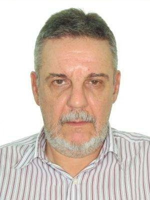
MINI CURRÍCULO PROFISSIONAL Arq. Urb. Bruno Ghizellini Neto CAU/SP A2555-0 Graduado em Arquitetura e Urbanismo pela Univ. Brás Cubas (1976). Ingressou na Prefeitura…
MINI CURRÍCULO PROFISSIONAL Arq. Urb. Bruno Ghizellini Neto CAU/SP A2555-0 Graduado em Arquitetura e Urbanismo pela Univ. Brás Cubas (1976). Ingressou na Prefeitura de São Paulo em 1978, por concurso público, atuando nas Secretarias de Negócios Jurídicos, Transportes e Subprefeituras. Ocupou os cargos de Chefe de Unidade Técnica, Supervisor Técnico de Obras e Uso do Solo, Coordenador de Obras Novas e Subprefeito Adjunto, chegando a Subprefeito da Freguesia/Brasilândia. Foi perito técnico assistente em ações de desapropriação nas Varas da Fazenda Municipal e integrou equipe de elaboração de Plano Diretor Regional. Possui especialização em Planejamento de Transportes (POLI-USP), Engenharia de Tráfego (Mauá) e Pós Graduação em Segurança do Trabalho (São Judas), além de diversos cursos técnicos na área de obras, edificações e legislação urbanística. Conselheiro do CREA SP por dois mandatos (2006–2011), atuando nas comissões de Legislação e Normas, Meio Ambiente e Convênios. Diretor da SEAM desde 2006, atualmente 3º Vice Presidente. Secretário Geral da AEP/SP no triênio 2013–2015. Conselheiro Titular do CAU/SP (2012–2014), onde coordenou a Comissão de Sede e foi Coordenador Adjunto de Orçamento e Contas. Atualmente aposentado do serviço público, exerce a função de Vice Presidente da Associação de Engenheiros, Arquitetos e Agrônomos Municipais de São Paulo e perito tecnico. São Paulo, 2026
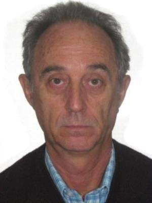
PLÍNIO LUIZ NOGUEIRA CPF 688.851.218-53 – RG 4.947.444-3 - Arquiteto e Urbanista - Universidade Braz Cubas – Mogi das Cruzes/SP, (agosto 1.976), f…
PLÍNIO LUIZ NOGUEIRA CPF 688.851.218-53 – RG 4.947.444-3 - Arquiteto e Urbanista - Universidade Braz Cubas – Mogi das Cruzes/SP, (agosto 1.976), formado a 50 (cinquenta) anos. Funcionário Público Concursado, Prefeitura Municipal de São Paulo/SP, trabalhei no Departamento de Desapropriações – DESAP/PGM/Secretaria dos Negócios Jurídicos. Aposentado desde 05 julho 2.011, sou um Especialista em Desapropriações, também atuo em ações cíveis, como Perito Judicial, cadastrado nos Auxiliar da Justiça do TJ/SP.
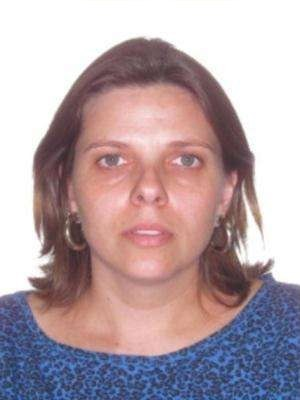
Arquiteta e Urbanista Atuação em escritório próprio Atuação como docente…
Arquiteta e Urbanista Atuação em escritório próprio Atuação como docente
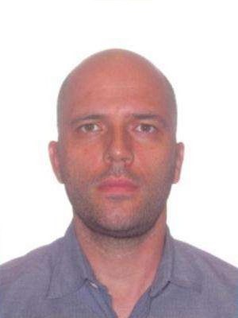
Arquiteto e urbanista formado em 2000, especializou-se em patrimônio histórico e construiu uma trajetória dedicada à preservação da memória construída. Complementou sua formação co…
Arquiteto e urbanista formado em 2000, especializou-se em patrimônio histórico e construiu uma trajetória dedicada à preservação da memória construída. Complementou sua formação com um MBA em Gestão, o que lhe permite unir sensibilidade técnica e visão estratégica em cada projeto. Integrou o conselho de patrimônio histórico, atuando na defesa e valorização de bens culturais. Idealizou e palestrou no evento "Futuro do Nosso Passado", promovido pelo SESC, contribuindo para ampliar a consciência patrimonial junto à sociedade. Ao longo da carreira, desenvolveu projetos de grande escala, entre eles campus universitário, edifícios residenciais e obras de design. Soma mais de 350 projetos de diferentes escalas e níveis de complexidade. Como palestrante, dedica-se a difundir a importância da preservação do patrimônio como parte essencial da identidade cultural. Sua atuação combina prática projetual, gestão e educação, reunindo experiência sólida e olhar crítico sobre o papel da arquitetura na construção da memória coletiva e valorização do trabalho na construção civil.
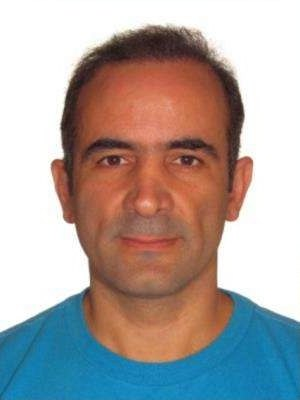
Hobeika Arquitetura - Fundada em 1992 Graduado na Faculdade Arquitetura e Urbanismo da Pontifícia Universidade Católica Campinas concluído em 1989. Especialista em Projetos Industr…
Hobeika Arquitetura - Fundada em 1992 Graduado na Faculdade Arquitetura e Urbanismo da Pontifícia Universidade Católica Campinas concluído em 1989. Especialista em Projetos Industriais e Restauros Arquitetônicos. Mestre em Restauro Arquitetônico pelo Instituto dos Arquitetos do Brasil em 2003. Presidente do CMDU - Conselho Municipal de Desenvolvimento Urbano de Campinas, 1999/03. Conselheiro do CONDEPACC - Conselho de Patrimônio Histórico e Cultural de Campinas, 1996/2005. Conselheiro do Pólo Gerador de Tráfego de Campinas em 1996/1997. Diretor de Legislação e Normas da AEAC - Associação dos Engenheiros e Arquitetos de Campinas 1996/1999 Presidente do IAB-SP, Regional de Campinas, 2002/2005. Conselheiro Superior (COSU) do IAB Nacional 2004/2011. Diretor de Assuntos Internacionais do IAB Nacional. Palestras em Universidades: PUCCampinas, Unicamp, FACISA, UniSalto e UNIP. Palestrante na Conferência Internacional de Arquitetura em Beirute, Líbano em 2006. Conselheiro do Grupo de Acessibildade do CREASP - 2006/2007 Conselheiro do Grupo WEC 2008 do CREA-SP - World Engineers' Convention Representante Brasileiro do Grupo de Habitação da UIA - Union International Architecture 2007/2011 Diretor Administrativo e Financeiro Mútua SP - Caixa de Assistência dos Profissionais do CREA-SP 2008/20011 Conselheiro da Cidade de Campinas, CONCIDADE - 2024/2026 Pós Graduado em Arquitetura Hospitalar no Instituto Albert Einstein - 2023/2024 Gestor de Empresas Familiares no Instituto INSPER - 2024 Professor de Pós Graduação desde 2010 totalizando mais de 150 turmas em todos os Estados do Brasil. Júri do prêmio Design de Varejo RDI Brasil - Retail Design Institute
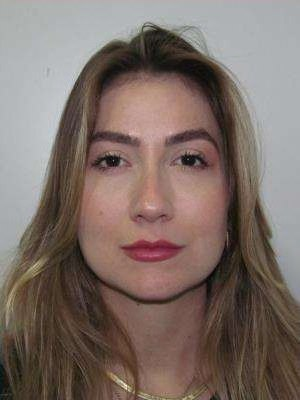
Arquiteta e Urbanista, fundadora da Crevalle Arquitetura, com atuação em projetos arquitetônicos, regularização de imóveis e desenvolvimento de empreendimentos residenciais unifami…
Arquiteta e Urbanista, fundadora da Crevalle Arquitetura, com atuação em projetos arquitetônicos, regularização de imóveis e desenvolvimento de empreendimentos residenciais unifamiliares e multifamiliares, além de projetos comerciais, regularizações, acompanhamento de obras e consultoria técnica. Participa ativamente de discussões relacionadas ao desenvolvimento urbano e às políticas públicas do município de Olímpia. Acredita que a arquitetura deve contribuir para cidades mais humanas, organizadas, inclusivas e sustentáveis. Participação ativa nas discussões referentes às melhorias na implantação do ISSQN no município de Olímpia, promovendo diálogo entre profissionais, Prefeitura, CAU e CREA, contribuindo para o aperfeiçoamento da aplicação da legislação. Participação no programa habitacional Habita+ Olímpia, desenvolvido pelo Município em parceria com a CDHU, atuando em ações de regularização fundiária e melhorias habitacionais. Realização de levantamentos técnicos e visitas domiciliares para diagnóstico das condições dos imóveis, elaboração de relatórios técnicos e apoio aos estudos para captação de recursos públicos destinados à reforma de moradias, contribuindo para a requalificação urbana e a melhoria das condições de habitação das famílias beneficiadas. Participação nas reuniões e nas tratativas para a criação da Associação dos Arquitetos e Urbanistas da Região de Olímpia (AAURO), contribuindo para as discussões voltadas à estruturação da entidade, ao fortalecimento da representatividade profissional e ao desenvolvimento da arquitetura e do urbanismo na região. Participação nas discussões relacionadas ao Plano Diretor Municipal. Acompanhamento das alterações da legislação urbanística e seus impactos para arquitetos, empreendedores e para a população. Interesse permanente em políticas públicas voltadas ao desenvolvimento urbano sustentável. Desenvolvimento de estudos e projetos de revitalização de praças públicas.
-Sócio Proprietária da empresa Atryo Serviços de Arquitetura Ltda. Escritório de Arquitetura desde 1996 Projetos, Fiscalização, Execução e Direção Técnica de Obras Residenciais, Co…
-Sócio Proprietária da empresa Atryo Serviços de Arquitetura Ltda. Escritório de Arquitetura desde 1996 Projetos, Fiscalização, Execução e Direção Técnica de Obras Residenciais, Comerciais Avaliação de Imóveis urbanos e laudos para Instituições Financeiras Área de Atuação: Litoral Sul e Vale do Ribeira. - Coordenadora da Comissão de Preservação de Patrimônio Histórico e Cultural Associação de Engenheiro e Arquiteta de Itanhaém Período 2022 - ainda vigente -Presidente da Associação de Engenheiros e Arquitetos de Itanhaém Período de:- 2002 a 2004 / 2004 a 2006 / 2013 a 2015 - Conselheira do CREA/SP Período de:- janeiro de 2006 a 31 de Dezembro de 2008 Período de:- janeiro de 2009 a 31 de Dezembro de 2011 - Integrante do Grupo de trabalho Arquitetura de Interiores do CAU- SP em 2013/2014 - Conselheira Suplente do CAU-SP Período de : janeiro de 2024 a Dezembro de 2026
Arquiteta e Urbanista, graduada pela Pontifícia Universidade Católica do Paraná (PUCPR), com experiência em projetos de arquitetura residencial e comercial, interiores e desenvolvi…
Arquiteta e Urbanista, graduada pela Pontifícia Universidade Católica do Paraná (PUCPR), com experiência em projetos de arquitetura residencial e comercial, interiores e desenvolvimento de projetos em diferentes etapas, desde estudos e concepção até detalhamento e especificações. Possui experiência com elaboração de layouts, detalhamentos técnicos, especificação de materiais, atendimento e levantamento de demandas junto aos clientes. Atuou também na área de planejamento urbano junto à Prefeitura Municipal de Iguape, desenvolvendo atividades relacionadas ao Plano de Mobilidade Urbana e revisão do Plano Diretor Municipal. Atualmente, atua com projetos de interiores e móveis planejados e é pós-graduanda em Design de Interiores: do Projeto à Experiência do Espaço.
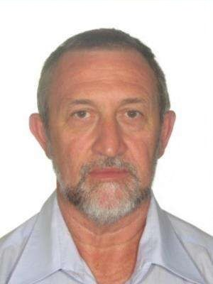
Formado em 1985- Arquitetura e Urbanismo pela Universidade Brás Cubas Complementação universitária - Arquitetura de Interiores – IE - Instituto de Engenharia - São Paulo/SP - Arqui…
Formado em 1985- Arquitetura e Urbanismo pela Universidade Brás Cubas Complementação universitária - Arquitetura de Interiores – IE - Instituto de Engenharia - São Paulo/SP - Arquitetura e Decoração Promocional - Senac - São Paulo/SP - Transmissão de Calor e Conforto Térmico na Arquitetura - USP - São Paulo/SP - Conservação e patrimônio cultural em arquitetura - USP - São Paulo/SP Cursos complementares em desenho Artístico e Publicitário e desenho de Arquitetura. Qualificação profissional - Desenhista e projetista em arquitetura – escritório Sottovia Arquitetura em Tietê. - Desenhista e projetista em propostas técnico/financeira para obras de engª civil pela empresa Sistema Pri de Engenharia -São Paulo/SP. - Desenhista de arquitetura e de concreto pela R.C. Construções - SP. - Desenhista e projetista na área de telefonia pela Promon Engª - SP. - Desenhista/projetista em arquitetura – escritório de Engª João Carlos Della Manna - SP. - Exerceu as funções como arquiteto no desenvolvimento de projetos residenciais, comerciais, de decoração de interiores, projetos de escritório, desenho de mobiliário e coordenação de projetos, pelo escritório Edo Rocha Arquitetura de Interiores - SP. - Exerceu as funções como arquiteto no desenvolvimento de projetos residenciais, comerciais, prédios de aptos., pelo escritório CFA Consultoria e Planejamento e Pedro Paulo de Mello Saraiva – SP. - Desenvolvimento e detalhamento de projetos executivos de arquitetura para o escritório Takeda Arquitetura/SP. - Serviços em parcerias em projetos de arquitetura com outros Arquitetos. - Serviços autônomos em projetos e obras no município de São Paulo, interior e outro estado. - Exerceu os cargos de Arquiteto Analista I e II de projetos operacionais no Metrô de São Paulo..- Diversos cursos nas áreas: da Administração, Gestão de Pessoas, Desenvolvimento Pessoal e de Equipes, Marketing, Comunicação, Eventos, Cerimonial, Qualidade no Atendimento, entre outros
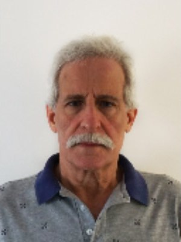
Antonio Roberto Zanolla é arquiteto e urbanista formado pela Universidade de São Paulo (USP) e graduado geógrafo na mesma instituição. Atua como responsável técnico (RT) e sócio-di…
Antonio Roberto Zanolla é arquiteto e urbanista formado pela Universidade de São Paulo (USP) e graduado geógrafo na mesma instituição. Atua como responsável técnico (RT) e sócio-diretor do estúdio Democratic Architects, um coletivo descentralizado de arquitetos, designers e artistas independentes, com sede em São Paulo e atuação global. Desde o início de sua carreira especializou-se em temas relacionados à inovação e tecnologia aplicadas ao projeto de arquitetura, com especial ênfase para o design clínico hospitalar. Culminando na idealização e desenvolvimento das unidades O-SI (Ônibus de Saúde Imediata), premiado projeto de saúde básica móvel e modular, desenvolvido de 2020 a 2022 para o atendimento emergencial à saúde primária durante os anos da crise sanitária do Covid-19. Lecionou na Universidade Metodista de Piracicaba (UNIMEP) na Faculdade de Arquitetura de 1995 a 2007, especializando-se em desenho aliado a novas tecnologias, com ênfase para design por meio dos softwares paramétricos como “Microstation” e “Triforma”. Durante seu período como professor no Departamento de Projeto na Unimep ministrou as disciplinas: “Projeto auxiliado por computador I e II” e “Informática aplicada à Arquitetura e Urbanismo I e II”. Apresentou trabalhos na Bienal de Tbilisi de 2020; foi finalista na premiação UIA 2030 Award - Second Cycle da UN-Habitat (departamento de habitação da ONU). Cairo. Egito. também recebeu o primeiro lugar no CCAL Prêmio Alumínio Arte e Design em 2021 e foi menção honrosa no 58º Prêmio Anual do Instituto de Arquitetos do Brasil de 2020, dentre inúmeros outros prêmios. dos quais mais recentemente o primeiro prêmio no concurso do IABsp para o novo Parque Municipal do Bixiga. em São Paulo. Coordenou e participou da direção conceitual de todos os projetos desenvolvidos pelo Democratic Architects, desde sua fundação, em 2019.
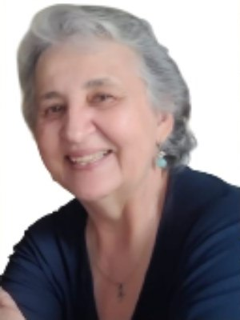
Doutora em Estruturas Ambientais Urbanas (FAU-USP/SP, 2002). Mestre em Filosofia Social (PUCC, 1993). Graduada em Arquitetura e Urbanismo (FAU-PUCC,1978-1982) e em Pedagogia (Ulbra…
Doutora em Estruturas Ambientais Urbanas (FAU-USP/SP, 2002). Mestre em Filosofia Social (PUCC, 1993). Graduada em Arquitetura e Urbanismo (FAU-PUCC,1978-1982) e em Pedagogia (Ulbra-RS - Polo Cerquilho, 2006-2009). Especialização em Formação de Professores em Turismo (UnB - Brasilia/DF, 2009) e em Engenharia de Segurança do Trabalho (FAESB - Tatui/SP, 2017). Nascida (08/11/1958), criada e domiciliada em Cerquilho/SP, onde, desde 1983 até 2005, trabalhou com projetos de Arquitetura e Urbanismo. Atualmente presta consultorias nas suas áreas de formação acadêmica. Professora Universitária em Faculdades de Arquitetura e Urbanismo:- Centro Universitário Moura Lacerda (Ribeirão Preto/SP, 1985-1986); PUCC (Campinas/SP, 1986-2002); UNIP (Campinas-SP, Sem.1, 1996); UNIVAP (São José dos Campos/SP, 2001-2003); UNESP (Presidente Prudente/SP, Sem.1, 2006); SOCIESC (Joinville-SC, Sem.1, 2007); FACCAT (Tupã/SP, 2010-2012). No CAU/SP, foi Coordenadora do GT Patrimônio Histórico (Nov/2013 a Fev/2014); 1a. Coordenadora Regional Sorocaba (Março 2014-2015); Conselheira Titular (Gestões: 2018-2020 e 2021-2023), participando de Comissões, como: Planejamento e Finanças; Ética e Disciplina; Comunicação; Patrimônio Cultural, e Acessibilidade. Sócia fundadora da Associação dos Engenheiros e Arquitetos de Cerquilho, em 11-08-2005), foi eleita 1a. Presidente da Diretoria Executiva, e reeleita para outras gestões. Atuou também como 1a. Secretária, 1a. Tesoureira e Presidente do Conselho Deliberativo desta Entidade de Classe.
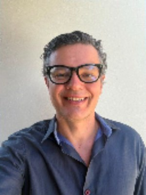
Fabiano Puglia Moreno Marin - CAU: A957682 / Sorocaba/SP Minha trajetória profissional reúne formação técnica, experiência…
Fabiano Puglia Moreno Marin - CAU: A957682 / Sorocaba/SP Minha trajetória profissional reúne formação técnica, experiência prática e participação ativa nas discussões sobre o futuro das cidades. Sou arquiteto e urbanista formado pela PUC-Campinas, especialista em Conforto Ambiental e Conservação de Energia (Light Design) pela USP e pós-graduado em Direito Urbanístico pela Faculdade de Direito de Sorocaba. Atuo em Sorocaba e região desenvolvendo projetos de arquitetura, urbanismo e consultoria em eficiência energética, sempre buscando soluções que conciliem qualidade de vida, sustentabilidade e inovação. Participo de debates e iniciativas voltadas ao planejamento urbano, à valorização do patrimônio cultural e ao fortalecimento da economia criativa, especialmente por meio da AEAS (Associação dos Engenheiros e Arquitetos de Sorocaba), onde fiz parte da diretoria executiva no período de 2016 a 2020. Também atuei de forma ativa como suplente de conselheiro do CAU/SP (gestão 2018/2020). Conteúdo programático: Patrimônio Histórico: Defender a preservação e a valorização do patrimônio arquitetônico, histórico e cultural como elemento essencial da identidade das cidades. Incentivar políticas de revitalização dos centros históricos, promovendo novos usos, turismo cultural, economia criativa e educação patrimonial, sempre com respeito à memória e à legislação de preservação. Acessibilidade: Promover a arquitetura e o urbanismo inclusivos, incentivando projetos que garantam acessibilidade universal em espaços públicos e privados. Apoiar a eliminação de barreiras físicas, sensoriais e comunicacionais, fortalecendo a autonomia das pessoas com deficiência, idosos e pessoas com mobilidade reduzida, em conformidade com as normas técnicas e a legislação vigente.
Desde minha formação busquei atuar em segmentos pouco explorados pelos colegas arquitetos sendo que fiz 4 especializações lato sensu: 1 - Engenharia acústica e Ambiental; 1 - Acúst…
Desde minha formação busquei atuar em segmentos pouco explorados pelos colegas arquitetos sendo que fiz 4 especializações lato sensu: 1 - Engenharia acústica e Ambiental; 1 - Acústica Arquitetônica e Engenharia Ambiental; 1 - Perícias em Engenharia e Gestão de Contratos; 1 - Engenharia de Segurança do Trabalho; e, atualmente me capacitando na quinta especialização no segmento da disciplina Conforto Ambiental com Qualidade do Ar Interior com Projetos e Laudos Técnicos de Ventilação e Exaustão e com Climatização. Trabalho intensamente com Acústica Arquitetônica com projetos e laudos técnicos. A graduação me proporcionou a especialização na Engenharia de Segurança do Trabalho e atualmente tenho uma empresa com 14 funcionários inclusive juridicamente registrada no CAU. Especificamente em projetos arquitetônicos tenho diferenciamento em residências unifamiliares e prédios pluri habitacionais, projetos técnicos junto ao Corpo de Bombeiros, Vigilância Sanitária e órgãos ambientais e uma oportunidade de ocupar o cargo de secretário municipal de urbanismo em Ubatuba contribuindo com o desenvolvimento de políticas públicas. Conteúdo programático para chapa que tenha mais afinidade: Participação em Câmaras técnicas relacionadas à Acústica Arquitetônica; ao Conforto Ambiental; à Qualidade do Ar Interior; às atividades relacionadas à Engenharia de Segurança do Trabalho; à Metodologias Inovadoras de Construção; Ênfase na Grade Curricular dos cursos de Graduação
ADRIANA NOGUEIRA ARQUITETA E URBANISTA 20 anos de experiência em Arquitetura e Interiores Arquiteta e Urbanista com 20 anos de experiência profissional, atuando no desenvolvimento …
ADRIANA NOGUEIRA ARQUITETA E URBANISTA 20 anos de experiência em Arquitetura e Interiores Arquiteta e Urbanista com 20 anos de experiência profissional, atuando no desenvolvimento e acompanhamento de projetos de arquitetura e interiores. Profissional comprometida, detalhista e dedicada, com experiência em todas as etapas do projeto, desde a concepção até o acompanhamento e gerenciamento da execução. ÁREAS DE ATUAÇÃO ✔ Projetos Arquitetônicos ✔ Projetos de Interiores ✔ Projetos para Prefeitura ✔ Projetos Executivos ✔ Gerenciamento e Acompanhamento de Obras ✔ Maquetes Eletrônicas e Modelagem 3D PERFIL PROFISSIONAL Profissional com ampla experiência no desenvolvimento de projetos, buscando unir funcionalidade, estética, técnica e qualidade em cada trabalho. Atua de forma próxima ao cliente, compreendendo suas necessidades e transformando ideias em projetos personalizados e bem executados. 20 anos transformando espaços em projetos únicos.
Altamir Fonseca é Arquiteto e Urbanista formado pela UMC (1995), com mais de 28 anos de sólida atuação profissional nas áreas de projetos, obras e consultoria técnica. Possui Espec…
Altamir Fonseca é Arquiteto e Urbanista formado pela UMC (1995), com mais de 28 anos de sólida atuação profissional nas áreas de projetos, obras e consultoria técnica. Possui Especialização em Engenharia de Segurança do Trabalho pela USP (2008), Mestrado em Arquitetura e Urbanismo com foco em Gestão do Espaço Urbano pela USJT (2021), e Especialização em Geoprocessamento, Leitura e Interpretação de Solos pela UFRRJ (2025). Docente na Universidade Paulista (UNIP) em São José dos Campos, alia a vivência prática de mercado à formação acadêmica das novas gerações de arquitetos. É associado a escritórios de referência e atua fortemente em frentes técnicas complexas, como acessibilidade (NBR 9050), segurança contra incêndio e requalificação urbana. Propósito: Integrar a gestão do CAU com foco na valorização real da profissão, desburocratização dos processos técnicos, fortalecimento da atuação dos autônomos e pequenos escritórios, e defesa intransigente de um conselho transparente, descentralizado e verdadeiramente próximo do arquiteto e urbanista. Membro da gestão fundadora 2010/2013 e da gestão consolidadora (2014-2017) do CAU como Diretor Técnico, ajudando a estruturar os alicerces e a governança do conselho.
Técnica em Edificações e Arquiteta e Urbanista, formada pela Universidade Braz Cubas em 1998. Atuou em renomados escritórios de arquitetura de São Paulo e Mogi das Cruzes, com expe…
Técnica em Edificações e Arquiteta e Urbanista, formada pela Universidade Braz Cubas em 1998. Atuou em renomados escritórios de arquitetura de São Paulo e Mogi das Cruzes, com experiência em projetos e acompanhamento de obras. Desde 2001, está à frente de seu escritório de Arquitetura, Interiores e Design. Possui ampla experiência em projetos, gestão, execução e coordenação de obras e profissionais. Em 2017, participou da CASACOR com o ambiente Casa do Chef. O projeto venceu a categoria “Meu Sonho de Cozinha”, na primeira edição do Prêmio CASA. Sua trajetória é marcada por ética, responsabilidade e qualidade técnica. Defende a valorização da Arquitetura e Urbanismo e o fortalecimento da profissão.
Arquiteto e Urbanista (1992) | Membro da ANFA - Academy of Neuroscience for Architecture | MBA em Varejo Online e Offline pela USP | Especialista em Neurociências pela UNIFESP | Ce…
Arquiteto e Urbanista (1992) | Membro da ANFA - Academy of Neuroscience for Architecture | MBA em Varejo Online e Offline pela USP | Especialista em Neurociências pela UNIFESP | Certificado em Consumer Neuroscience & Neuromarketing pela Copenhagen Business School | Especialista em Neuroarquitetura e em Master em Arquitetura & Lighting pelo IPOG | Design de Interiores pelo IED Instituto Europeo di Design | Certificado em Lighting Design e Visual Merchandising pela Belas Artes | Neurociências Aplicada a Ambientes e Criação pela FAAP | Neuromarketing pelo IBN | Atualmente é professor convidado em cursos de Pós-graduação e MBAs nas áreas de Neuroarquitetura, Arquitetura Comercial, Design de Interiores, Ambientes Gastronômicos, em diversas instituições como IED, IPOG, IBN Instituto Brasileiro de Neuromarketing, Instituto Navigare | Professor convidado em imersão internacional em Retail Store: Design Comercial pelo POLI.Design di Milano | Atuou como professor de Arquitetura na UnG – Universidade de Guarulhos/SP pelo período de 1992 a 1998 em diversas cadeiras | Diretor Acadêmico do RDI - Retail Design Institute e Diretor do CBC – Comitê Brasileiro de Cores | Sócio-proprietário da FGASPAR Arquitetura atuante desde 1992, especializada em design estratégico de varejo, workplaces e fast planning, consolidada no segmento de projetos e execução de obras full service. Desde 1992 no mercado de Retail Design, tem em seu portfólio, mais de 1200 projetos e obras executadas para importantes marcas brasileiras. É autor do conceito Neuro Retail Environment Design (NRED), abordagem que propõe a aplicação de princípios da neurociência na concepção de espaços de varejo. Palestrante com presença frequente em eventos como Latam Retail Show, Arena Office Connection, Rio2C, Revestir, Móvelsul, SIBRASCE, ABMAD, ABCASAFAIR, ForMóbile, DWALK e outros, contribuindo para o debate e disseminação de novas abordagens projetuais que articulam arquitetura, emoção e experiência no ambiente construído.
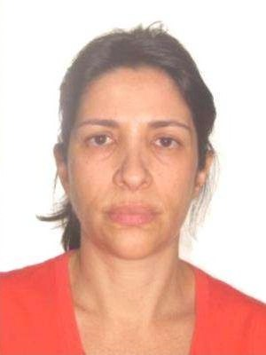
FORMADA EM 1989 PELA UNIVERSIDADE DE GUARULHOS -SP PROPRIETARIA DA CANDOSSIM ARQUITETURA LTDA E CANDOSSIM OBRAS E EVENTOS LTDA. PROJETO ARQUITETÔNICO,LAY OUT DIFERNCIADO, CONCEITO,…
FORMADA EM 1989 PELA UNIVERSIDADE DE GUARULHOS -SP PROPRIETARIA DA CANDOSSIM ARQUITETURA LTDA E CANDOSSIM OBRAS E EVENTOS LTDA. PROJETO ARQUITETÔNICO,LAY OUT DIFERNCIADO, CONCEITO, GERENCIAMENTO POR CATEGORIA, GERENCIAMENTO DE OBRA, COMUNICAÇÃO VISUAL, FACHADAS TREINAMENTOS E AUDITORIA,
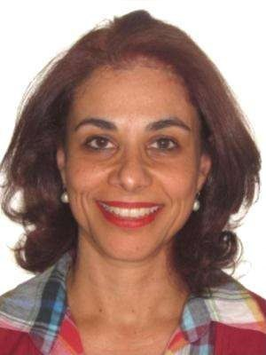
Arquiteta e Urbanista formada pela Universidade de Brasília - Unb, em 1992. Funcionária de carreira da CET - Companhia de Engenharia de Tráfego de São Paulo, desde 2001. Atualmente…
Arquiteta e Urbanista formada pela Universidade de Brasília - Unb, em 1992. Funcionária de carreira da CET - Companhia de Engenharia de Tráfego de São Paulo, desde 2001. Atualmente, na área de Planejamento Viário e nos treinamentos corporativos para uso de ferramentas de CAD. Tendo já atuado nas áreas de Projeto de Sinalização Viária e Operacional da companhia. Conselheira Suplente do CAU/SP nos mandatos de 2018 e 2021 - nas comissões de Fiscalização e Comunicação. Representante do SASP junto aos empregados da CET, desde 2016. No empenho de obter a participação do Sindicato nas negociações salariais da CET.
Arquiteta e Urbanista formada pelo Centro Universitário Belas Artes de São Paulo, com MBA em Gestão de Negócios pela FIA, construí minha trajetória profissional na Companhia de Eng…
Arquiteta e Urbanista formada pelo Centro Universitário Belas Artes de São Paulo, com MBA em Gestão de Negócios pela FIA, construí minha trajetória profissional na Companhia de Engenharia de Tráfego de São Paulo – CET, onde atuo há mais de duas décadas. Minha experiência está diretamente ligada à mobilidade urbana, ao planejamento e à operação do trânsito, áreas que dialogam permanentemente com o papel do arquiteto e urbanista na construção de cidades mais seguras, acessíveis e humanas. Ao longo dessa trajetória, ampliei minha atuação para a representação dos empregados, inicialmente como presidente do Conselho de Representantes dos Empregados (CRE) e, atualmente, como Diretora de Representação dos Empregados da CET. Nesse espaço, busco fortalecer a participação dos trabalhadores nas decisões da Companhia e defender a valorização de seus conhecimentos técnicos e profissionais. Como arquiteta e urbanista, acredito que nossa profissão tem papel fundamental na formulação das políticas públicas de mobilidade, no planejamento dos espaços urbanos e na melhoria da qualidade de vida da população. Minha atuação na CET une, assim, experiência técnica, gestão e representatividade, reafirmando a importância da Arquitetura e do Urbanismo também dentro das instituições responsáveis por pensar e operar a cidade.
Arquiteto e Urbanista formado pela Faculdade Belas Artes (1986), Eduardo Manzano é Fundador, CEO e Diretor Criativo do EMDAStudio, escritório paulistano de arquitetura, interiores …
Arquiteto e Urbanista formado pela Faculdade Belas Artes (1986), Eduardo Manzano é Fundador, CEO e Diretor Criativo do EMDAStudio, escritório paulistano de arquitetura, interiores e planejamento urbano com atuação em hotelaria, usos mistos e retrofit patrimonial. Eleito “Melhor Arquiteto de Hotelaria do Brasil” pela Revista Hotéis em 2022, 2023 e 2024, construiu ao longo de mais de 35 anos uma trajetória à frente das operações brasileiras dos escritórios globais VOA Associates e Perkins+Will, assinando mais de 150 projetos hoteleiros e mais de 750 projetos em outras tipologias para marcas como Marriott, Hyatt, Hilton, Meliá e BHG. Entre seus trabalhos mais emblemáticos está o retrofit do Hotel Nacional, no Rio de Janeiro — projeto original de Oscar Niemeyer —, além de masterplans de grande escala como o Iguassu Park, em Foz do Iguaçu, e o complexo Biosfera Garopaba. Sua atuação em defesa da Arquitetura e Urbanismo se estende à representação institucional da profissão: é Vice-Presidente de Planejamento Urbano do Smart City Business America Institute, foi coordenador do projeto Circuito de Pousadas Históricas do Ministério do Turismo e mantém presença constante como professor, palestrante e curador de cursos e eventos — no IED, na Mackenzie, na Faculdade Roberto Miranda e na ESPM —, formando novas gerações e reafirmando o papel estratégico do arquiteto na construção de cidades e negócios mais inteligentes.
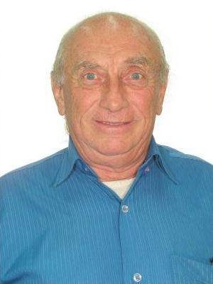
PIETRO MIGNOZZETTI ( SUPLENTE ) Curriculo:Nascimento: 24.04.1986. Formação como Arquiteto e Urbanista pela FAU BRAS CUBAS de Mogi das Cruzes ANO 1975 Autor de projetos e construção…
PIETRO MIGNOZZETTI ( SUPLENTE ) Curriculo:Nascimento: 24.04.1986. Formação como Arquiteto e Urbanista pela FAU BRAS CUBAS de Mogi das Cruzes ANO 1975 Autor de projetos e construção de mais de 120 edificações de vários usos: - Residências Unifamiliares; - Conjuntos Habitacionais de Interesse Social; --Edifícios de Uso Industrial; -Edifícios de Uso Comercial e de Serviços; -Edifícios para Saúde; -Edifícios para Ensino Fundamental e Secundário; -Presidente da Associação de Engenheiros e Arquitetos de Osasco por vários mandatos; -Presidente do CIO-Circolo Italiano di Osasco por vários mandatos; -Presidente da Associação Umbros do Brasil (Associação Cultural de italianos umbros e seus descendentes) por vários mandatos; -Diretor de Comunicação e Relações Institucionais do SASP-Sindicato dos Arquitetos do Estado de São Paulo, por 2 mandatos; -Conselheiro Titular da Câmara Especializada de Arquitetura do CREA-SP por um mandato de 3 anos; -Conselheiro Titular do CAU-SP como Diretor de Finanças Adjunto com mandato de 3 anos; Conselheiro Titular do CAU-SP como Diretor de Relações Institucionais Adjunto com mandato por 3 anos;
Atualmente é Arquiteto Autônomo e Fotógrafo especializado em Arquitetura, avaliador do Sinaes - Basis do Instituto Nacional de Estudos e Pesquisas Educacionais Anísio Teixeira - IN…
Atualmente é Arquiteto Autônomo e Fotógrafo especializado em Arquitetura, avaliador do Sinaes - Basis do Instituto Nacional de Estudos e Pesquisas Educacionais Anísio Teixeira - INEP e conteudista para disciplinas em AVA de curso de Arquitetura e Urbanismo da Universidade Paulista; foi Professor e coordenador auxiliar do curso de Arquitetura e Urbanismo da Universidade Paulista em Bauru - SP. Foi Conselheiro npo CAU SP de 2012 a 2017, foi o primeiro coordenador da Comissão de Ensino e Formação do CAU SP (2012-2014) e diretor de Ensino e formação do CAU SP (2015-2017). Foi professor dos cursos de Arquitetura e Urbanismo da Universidade Paulista - UNIP (Bauru - SP), das Faculdades Integradas Ourinhos (Ourinhos - SP), da Universidade Cruzeiro do Sul (São Paulo - SP) e das Faculdades Integradas Módulo (Caraguatatuba - SP). Tem sua atuação com ênfase em Ensino, atuando principalmente nos seguintes temas: projeto arquitetônico, arquitetura, equipamento urbano, urbanismo e edifício institucional, exercício profissional e perícias técnicas em construção civil. Possui doutorado em Arquitetura e Urbanismo pela Universidade Presbiteriana Mackenzie (2015), Mestrado em Engenharia Urbana pela Universidade Federal de São Carlos (2002) e Graduação em Arquitetura e Urbanismo pela Universidade Estadual Paulista Júlio de Mesquita Filho (1994).
Secretário Municipal da Educação de Bauru (a partir de 01/03/2025). Secretário Municipal do Meio Ambiente de Bauru, (de 01/01/2025 a 28/02/2025). Secretário Municipal da Educação d…
Secretário Municipal da Educação de Bauru (a partir de 01/03/2025). Secretário Municipal do Meio Ambiente de Bauru, (de 01/01/2025 a 28/02/2025). Secretário Municipal da Educação de Bauru (de 11/2022 até 01/01/2025). Secretário Municipal de Planejamento de Bauru (de 01/2021 a 10/2022). Doutor em Arquitetura e Urbanismo pela FAU-USP (1999), Mestre em Arquitetura e Urbanismo pela EESC-USP (1992). Especialista em Engenharia de Segurança do Trabalho pela FUNDACENTRO, Graduado em Arquitetura e Urbanismo pela PUC-Campinas (1983). Professor do Programa de Pós-Graduação em Arquitetura e Urbanismo da Faculdade de Arquitetura, Artes, Comunicação e Design - FAAC, da UNESP, Campus de Bauru. Eleito Vice-Diretor da FAAC-UNESP/Bauru, gestão 2008/12 e Diretor na gestão 2012/16. Vice-presidente do Grupo Administrativo do Campus de Bauru - GAC (2013/15) e Presidente (09/2015 a 11/2016). É autor, colaborador e organizador de livros, bem como de artigos apresentados em periódicos e eventos nacionais e internacionais. Foi por duas gestões representante docente no Conselho Universitário da UNESP. Conselheiro, por duas vezes no CONDEPHAAT, Conselho de Defesa do Patrimônio Histórico, Artístico e Arqueológico do Estado de SP. Presidente e Vice-presidente do CODEPAC, Conselho de Defesa do Patrimônio Cultural de Bauru. Conselheiro da FUNDUNESP e da Editora da UNESP. Conselheiro do CREA/SP, gestões 2005/2008 e 2009/2012, Coordenador da Câmara Especializada de Arquitetura, nos anos de 2009 e 2010. Eleito em 2011 como Conselheiro Titular do Conselho de Arquitetura e Urbanismo de São Paulo - CAU/SP, gestão 2012/14, na mesma gestão eleito Coordenador da Comissão de Ética e Disciplina do CAU/SP. Reeleito como Conselheiro Titular do CAU/SP, gestão 2015/17 e novamente para a gestão 2021/23. Foi Coordenador de Meios da Fundação para o Vestibular da UNESP - VUNESP, para a região de Bauru (2019-20). Contato:
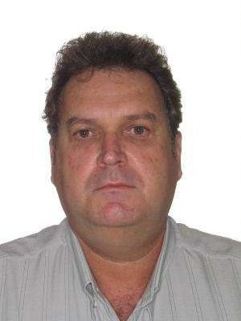
CURRÍCULO CAU-SP EDUCAÇÃO: Arquitetura e Urbanismo -FAU-PUCAMP 1984 EXPERIÊNCIA Profissional Liberal com escritório próprio 1995/ atual; Responsável pela elaboração de mais de 1000…
CURRÍCULO CAU-SP EDUCAÇÃO: Arquitetura e Urbanismo -FAU-PUCAMP 1984 EXPERIÊNCIA Profissional Liberal com escritório próprio 1995/ atual; Responsável pela elaboração de mais de 1000 projetos em diversos segmentos da arquitetura, principalmente em residências de auto padrão, Industriais, Templos Religiosos, Institucionais, Edificios multifamiliares e comerciais, Cemitério, Interiores, Projetos de Urbanismo, Licenciamentos Ambientais e mobilidade Urbana, Projeto de restauração de edifício histórico; Ex Presidente do CONDEMA (Conselho Municipal do meio ambiente) Socorro SP; Ex Presidente fundador da Associação de Engenharia, Arquitetura e Agronomia de Socorro AEAAS; Coordenador Adjunto do Grupo de Trabalho do CREA/SP Melhorias do Convenio com a ABNT; Inspetor de Arquitetura e Inspetor chefe da Inspetoria do CREA/SP em Socorro -SP; Coordenador do GT Assistência Técnica Gratuita do CAU/SP; Conselheiro Titular eleito para o Conselho de Arquitetura e Urbanismo de São Paulo triênio 2018/2020 e reeleito para o triênio 2021/2023, participando em quatro Comissões de Fiscalização, de Políticas Urbanas, Territoriais e Ambientais e a Comissão de Mobilidade Urbana; entre outras temporárias; Participação como Perito Judicial e nomeado e como auxiliar técnico em ações judiciais;
Arquiteta e Urbanista, graduada pela UNISO em 2019, com pós-graduação em andamento em Arquitetura Comercial e Visual Merchandising. Sua trajetória reúne experiências na iniciativa …
Arquiteta e Urbanista, graduada pela UNISO em 2019, com pós-graduação em andamento em Arquitetura Comercial e Visual Merchandising. Sua trajetória reúne experiências na iniciativa privada, em obras públicas e na atuação autônoma, com atuação em projetos residenciais, comerciais e institucionais, fiscalização e acompanhamento de obras, regularizações, acessibilidade e consultoria técnica, proporcionando uma visão abrangente dos desafios do exercício profissional. Mantém participação ativa na representação e defesa da categoria, sendo associada à AEAS – Associação dos Engenheiros e Arquitetos de Sorocaba e do IAB – Instituto de Arquitetos do Brasil, núcleo Sorocaba. Integra também o grupo Urban Sketchers Sorocaba, fortalecendo sua relação com a cidade e ampliando seu olhar sobre arquitetura, paisagem urbana e experiência no espaço construído. É cadastrada como perita nos sistemas auxiliares da Justiça e do CAU. Cursou três anos de Direito, experiência acadêmica que ampliou seu repertório sobre legislação, responsabilidade profissional e aspectos jurídicos relacionados à atuação do arquiteto. Coloca sua experiência a serviço da valorização da Arquitetura e Urbanismo, da defesa das atribuições profissionais e de uma atuação mais efetiva da categoria nas políticas públicas, no planejamento urbano, na habitação, na saúde, na acessibilidade e na construção de cidades melhores.
Patrícia Maria Egydio de Piza Fontes Possui graduação em Arquitetura e Urbanismo pelo Centro Universitário Belas Artes de São Paulo (1984) e mestrado em Programa em pós-graduação e…
Patrícia Maria Egydio de Piza Fontes Possui graduação em Arquitetura e Urbanismo pelo Centro Universitário Belas Artes de São Paulo (1984) e mestrado em Programa em pós-graduação em Arquitetura e Urbanismo, com ênfase em Projeto de Arquitetura no Setor privado. Desenvolvimento de projetos de Arquitetura Comercial (lojas e escritórios), projetos residenciais; multifamiliar e unifamiliar, inúmeros projetos de programação visual, desenho indústrial de produtos de papelaria, projetos de Arquitetura de interiores notabilizados pelo uso da cor, reformas projetos e execução, e por fim projetos de ambientação de eventos. Todos esses projetos são desenvolvidos em escritório próprio. Atuou em interessante projeto de restauro, de imponente edifício no centro de São Paulo, construído em 1908. A área de interesse de pesquisa é a de Projetos de Arquitetura e Urbanismo, e ensino de Arquitetura e história da Arquitetura. Assessora do departamento cultural do Clube Athético Paulistano; realizando inúmeras exposições de Arquitetura e lançamentos de livros sobre o mesmo tema.
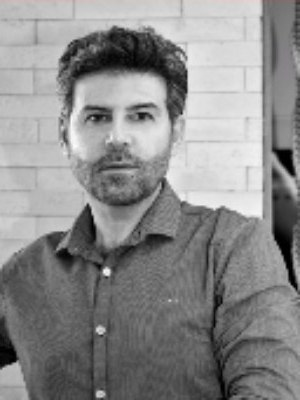
George Hilton é arquiteto formado pela FAU-UNG, com pós-graduação em Conforto Ambiental pela FAU-USP. Sua trajetória reúne experiências no varejo, em projetos residenciais, comerci…
George Hilton é arquiteto formado pela FAU-UNG, com pós-graduação em Conforto Ambiental pela FAU-USP. Sua trajetória reúne experiências no varejo, em projetos residenciais, comerciais e de saúde. Atuou em duas construtoras, nos segmentos residencial e bancário, e manteve por dez anos um escritório em parceria, desenvolvendo projetos para clientes como a Formatex, referência em tecidos e estofados de luxo. Desde 2008, está à frente do escritório George Hilton Arquitetura, com sede em São Paulo. Seus projetos foram publicados em revistas, Arquitetura e Construção, Casa Claudia, Decorar, Casa e Jardim, Guia prático de decoração e Tile Brasil. Foi eleito um dos 50 melhores escritórios pela revista Decorar em 2023, 2024 e 2025 e recebeu o Prêmio Tile Brasil em 2022. Participou de esposição Foto Decoração Gero, do DW como curador em decor de loja e palestrante, com evento decor de mesa posta, falando de Milão pela TVRIT.
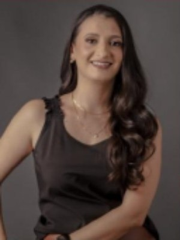
Doutoranda em Políticas Públicas, mestre em Arquitetura, Tecnologia e Cidade pela UNICAMP e graduada em Arquitetura e Urbanismo pela Universidade de Mogi das Cruzes (UMC). Durante …
Doutoranda em Políticas Públicas, mestre em Arquitetura, Tecnologia e Cidade pela UNICAMP e graduada em Arquitetura e Urbanismo pela Universidade de Mogi das Cruzes (UMC). Durante a graduação, desenvolveu pesquisa em acessibilidade em terminais e estações, fortalecendo sua atuação na área de infraestrutura urbana inclusiva. Seus principais interesses de pesquisa envolvem acessibilidade, espaço público, Desenho Universal, iconografia e estudos de gênero. Também é graduada em Pedagogia e Artes. Docente do curso de Arquitetura e Urbanismo da UMC e no curso de técnico em Edificações e Design de Interiores. Como arquiteta autônoma, desenvolve projetos no Estado de São Paulo, aliando prática profissional e pesquisa. Além disso, exerce a função de conselheira do Conselho de Arquitetura e Urbanismo de São Paulo (CAU-SP), contribuindo para o fortalecimento e o desenvolvimento da profissão.
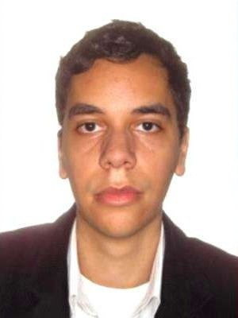
Denis Oliveira de Souza Neves é arquiteto e urbanista, especialista em Habitação e Cidade pela Escola da Cidade e em Urbanismo Social pelo Insper, e mestrando em Arquitetura e Urba…
Denis Oliveira de Souza Neves é arquiteto e urbanista, especialista em Habitação e Cidade pela Escola da Cidade e em Urbanismo Social pelo Insper, e mestrando em Arquitetura e Urbanismo pela Universidade Presbiteriana Mackenzie. É fundador e presidente da ArqCoop+ – Cooperativa de Arquitetura e Urbanismo, onde atua com ATHIS, urbanismo social e desenvolvimento territorial em periferias de São Paulo. Sua prática articula arquitetura, planejamento urbano, participação comunitária e políticas públicas. Também atua na representação profissional como Diretor de Juventude e Inserção Profissional do SASP e conselheiro do CAU/SP.
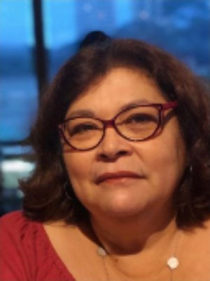
ROSEMEIRY LEITE DA SILVA AGO 2026 Arquiteta e Urbanista/ Gestora Ambiental Formação Acadêmica: - Pós-graduada em Gestão Ambiental pelo Senac –SP - 2011 - Graduada em Arquitetura pe…
ROSEMEIRY LEITE DA SILVA AGO 2026 Arquiteta e Urbanista/ Gestora Ambiental Formação Acadêmica: - Pós-graduada em Gestão Ambiental pelo Senac –SP - 2011 - Graduada em Arquitetura pela Universidade Mackenzie - 1989 - Técnica em Edificações pela ETE Getúlio Vargas - 1982 Qualificações: Experiência profissional voltada principalmente à área de engenharia de tráfego, tendo participado de diversos trabalhos ao longo dos últimos 45 anos, com ênfase em atividades de segurança viária e gestão ambiental no ambiente urbano, com a elaboração de projetos, pesquisas e estudos técnicos. Membro da CPA/SP-Comissão Permanente de Acessibilidade da Cidade de S. Paulo, entre 2005 e 2018 Docente do Centro Paula Souza, Participação em varias atividades relacionadas ao Planejamento Urbano e Gestão Ambiental com desenvolvimento de propost
Rosane Segantin Keppke é arquiteta e urbanista, doutora em Planejamento Urbano e Regional (FAUUSP), e mestre em Administração Pública e Governo, na área de concentração em Política…
Rosane Segantin Keppke é arquiteta e urbanista, doutora em Planejamento Urbano e Regional (FAUUSP), e mestre em Administração Pública e Governo, na área de concentração em Políticas Urbanas (FGV). É servidora efetiva da Prefeitura de São Paulo, atualmente cedida para a Escola Superior de Gestão e Contas do Tribunal de Contas do Município de São Paulo. Tem experiência em gestão pública, planejamento urbano, habitação social, ensino e formação profissional, tendo sido coordenadora de Planejamento e Desenvolvimento Urbano em subprefeituras periféricas, coordenadora da Escola Municipal de Administração Pública de São Paulo e coordenadora do curso de Arquitetura e Urbanismo do Centro Universitário Adventista de São Paulo (UNASP). Foi conselheira do Conselho Municipal de Política Urbana de São Paulo. É conselheira na Associação dos Engenheiros e Arquitetos Municipais (SEAM). Sua trajetória articula Arquitetura e Urbanismo, políticas públicas, formação profissional, governança, compromisso com o interesse público e o interesse do coletivo de Arquitetos e Urbanistas.
Formada pela Faculdade Barão de Mauá, em Ribeirão Preto, é mestre e doutora pela Universidade de São Paulo (USP) e atua como professora na Faculdade Belas Artes de São Paulo, no De…
Formada pela Faculdade Barão de Mauá, em Ribeirão Preto, é mestre e doutora pela Universidade de São Paulo (USP) e atua como professora na Faculdade Belas Artes de São Paulo, no Departamento de Tecnologia da Arquitetura, onde leciona disciplinas relacionadas a sistemas prediais, sustentabilidade, tecnologia, inovação e retrofit. Desenvolve estudos de pós-doutorado na área de planejamento urbano e políticas públicas, com pesquisa voltada à ocupação de áreas ambientalmente sensíveis. Possui ampla experiência profissional em projetos residenciais e comerciais na capital e no interior do Estado de São Paulo. Sua principal área de atuação é o desenvolvimento e a coordenação de projetos de arquitetura de alta complexidade, especialmente em ambientes bancários e data centers. Sua trajetória reúne experiência acadêmica, pesquisa, ensino e prática profissional, proporcionando uma visão abrangente das diferentes dimensões da atuação do arquiteto e urbanista.
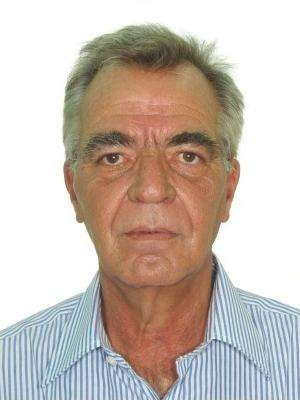
Currilum Vitae Carlos Alberto Baroza Guimarães Brasileiro, casado, 72 anos (04/06/1954) - Arquiteto e Urbanista - CAU/BR n° A3877-6 Formação: Colégio Industrial Estadual “Getulio V…
Currilum Vitae Carlos Alberto Baroza Guimarães Brasileiro, casado, 72 anos (04/06/1954) - Arquiteto e Urbanista - CAU/BR n° A3877-6 Formação: Colégio Industrial Estadual “Getulio Vargas” – São Paulo – Técnico em Edificações – 1973 Graduação: Faculdade de Arquitetura e Urbanismo “Braz Cubas” – Mogi das Cruzes – Arquiteto e Urbanista – Ano de Formatura: 1978 Pós Graduação Lato Sensu em Gerente de Cidades – Fundação Armando Álvares Penteado / Faculdades Integradas de Ourinhos – Ourinhos – 2007 Informações Adicionais: Presidente da AERO – Associação dos Engenheiros, Arquitetos e Agrônomos da Região de Ourinhos/SP (3 mandatos). Inspetor Chefe do CREA/SP - Conselho Regional de Engenharia, Arquitetura e Agronomia do Estado de São Paulo - UGI de Ourinhos (3 mandatos). Conselheiro na CEARQ – Câmara Especializada de Arquitetura do CREA/SP - Conselho Regional de Engenharia, Arquitetura e Agronomia do Estado de São Paulo - (2 mandatos). Gerente da Regional do CAUSP – Conselho de Arquitetura e Urbanismo de São Paulo em Presidente Prudente/SP (4 anos).
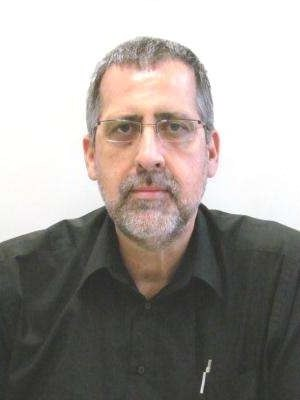
Graduado em Arquitetura e Urbanismo pelo Centro Universitário Moura Lacerda (1987) e pós-graduado em Engenharia Urbana pela Universidade Federal de São Carlos – UFSCar (1994). Atuo…
Graduado em Arquitetura e Urbanismo pelo Centro Universitário Moura Lacerda (1987) e pós-graduado em Engenharia Urbana pela Universidade Federal de São Carlos – UFSCar (1994). Atuou como Coordenador de Projetos de Obras Públicas na Prefeitura Municipal de Ribeirão Preto, no período de 1994 a 2000. Entre 2000 e 2008, exerceu a função de Assessor de Planejamento Urbano na Prefeitura Municipal de Sertãozinho, onde coordenou o processo de revisão do Plano Diretor do município. Na área acadêmica, foi professor dos cursos de Arquitetura e Urbanismo e Engenharia Ambiental do Centro Universitário Barão de Mauá, ministrando disciplinas com ênfase em Informática Aplicada, Topografia, Planejamento Urbano, Planejamento Ambiental e introdução aos conceitos de modelagem BIM (Building Information Modeling). É proprietário e Arquiteto Sênior da Fontana & Fontana Arquitetura e Urbanismo Ltda., atuando no desenvolvimento de projetos de arquitetura e na coordenação de projetos complementares, incluindo instalações elétricas e hidráulicas, estruturas de concreto e estruturas metálicas, em ambientes CAD e BIM. Participou da Comissão Temporária de BIM do CAU/SP, em 2020, e da Comissão de Estudo Especial ABNT/CEE-134, em 2021, contribuindo para discussões e iniciativas relacionadas à implementação e ao desenvolvimento da metodologia BIM no setor de arquitetura, engenharia e construção.
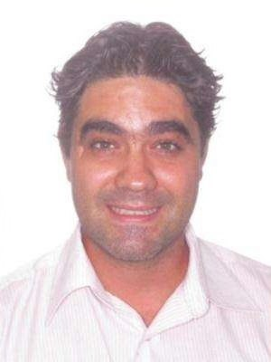
Arquiteto e Urbanista, formado em 2004 no centro universitario Moura Lacerda, especialista em Geoprocessamento pela Universidade Federal de São Carlos (2006) e mestre em Engenharia…
Arquiteto e Urbanista, formado em 2004 no centro universitario Moura Lacerda, especialista em Geoprocessamento pela Universidade Federal de São Carlos (2006) e mestre em Engenharia Urbana pela Universidade Federal de Sao Carlos em 2013, docente do Centro Universitário Moura Lacerda desde 2009 e proprietário da Panurbe, serviços de Arquitetura e Urbanismo ltda.
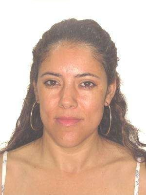
Katia Gomes - Arquitetua e Urbanista. formada ha 26 anos. Especializada em Arquitetura Hospitalar. Pela instituição Israelita Albert Einstein. Segunda espcialização e Controle Am…
Katia Gomes - Arquitetua e Urbanista. formada ha 26 anos. Especializada em Arquitetura Hospitalar. Pela instituição Israelita Albert Einstein. Segunda espcialização e Controle Ambiental. pela USP. Curso aperfeicoamento em Engenharia de Trafego ( Politecnica da USP).Hoje aposentada como funcionaria publica. porem atuando efetivamente com Arquitetura em todos os ambitos. Paisagismo, Residencial. Institucional, Comercial. Saude. Ministra Palestras sobre acessibilidade e Arquitetura Hospitalar. Foi Diretora de Urbanismo por 12 anos seguidos em São Sebastião. Foi coordenaodra de projetos de saúde por 3 anos. Atuou como presidente da comissao de acessibilidade de Sao Sebastiao. Vasto conhecimento em urbanismo e arquitetura em areas publicas. Possui formaçao em Feng Shui. Arquitetura Biofilica, Paisagismo e Neuroarquitetura.
Sou Amanda Morais, Arquiteta e Urbanista e Técnica em Edificações. Minha trajetória sempre esteve muito ligada à aplicação prática das leis que regem nossa profissão e a cidade. Ad…
Sou Amanda Morais, Arquiteta e Urbanista e Técnica em Edificações. Minha trajetória sempre esteve muito ligada à aplicação prática das leis que regem nossa profissão e a cidade. Adquiri grande parte da minha experiência estagiando na Secretaria de Urbanismo (2018-2020), com foco em projetos urbanos, e sendo escrevente no Cartório de Registro de Imóveis de Caraguatatuba (2020-2023), analisando processos de regularização, instituições condominiais e etc. Hoje, aplico essa bagagem principalmente na Arquitetura Legal, atuando como perita judicial, além de desenvolver projetos arquitetônicos.
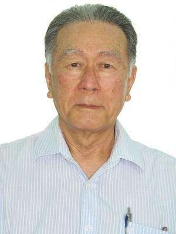
Arquiteto pela FAUUSP, Mestre pele University of Colorado, Doutor pela FAUUSP, projetos Aeroporto de Guarulhos, Aracruz Celuloso, Metro de Bagdad, Escritorios de Ruy Ohtake, Jore W…
Arquiteto pela FAUUSP, Mestre pele University of Colorado, Doutor pela FAUUSP, projetos Aeroporto de Guarulhos, Aracruz Celuloso, Metro de Bagdad, Escritorios de Ruy Ohtake, Jore Wilhwim, Jaakko Poyry, Proon Engevix, Metro sP, Profesor UNIP, Belas Artes UnG
ELISETE AKEMI KIDA Rua Santa Luzia 35 apto 153 torre A - Vila Moreira - Guarulhos - São Paulo CEP 07020- 030 e.mail: idade 69 anos Formação Academica Faculdade de…
ELISETE AKEMI KIDA Rua Santa Luzia 35 apto 153 torre A - Vila Moreira - Guarulhos - São Paulo CEP 07020- 030 e.mail: idade 69 anos Formação Academica Faculdade de Arquitetura e Urbanismo Farias Brito -1980 Espade- Escola Paulista de Arte e Decorações Jardinagem e Paisagismo 1982 DEPAVE - PMSP- Curso Municipal de Jardineiros 1982 Experiencia Profissional: Projetos Comerciais, residênciais, Industriais e paisagisticos - Março de 1982 - atual Elaborando projetos e direção técnica e acompanhamento de obras IBEC Engenharia ltda- Junho de 2001 a setembro de 2005 Sócia - Proprietária Ki-gelo Industria e Comércio de Refrigeração Lta - abril 1979 a Março de 1982 Sócia - proprietária Irmãos Kida Ltda - Abril 1971 a Dezembro de 1980 Departamento pessoal e financeiro, compra e venda
Rafaella Manso é arquiteta e urbanista formada pela Faculdade Belas Artes de São Paulo, com formação complementar internacional na Florence University of the Arts, na Itália, na Un…
Rafaella Manso é arquiteta e urbanista formada pela Faculdade Belas Artes de São Paulo, com formação complementar internacional na Florence University of the Arts, na Itália, na University of the Arts, no Reino Unido, e participação em workshop na KEA – Copenhagen School of Design and Technology, na Dinamarca. Atualmente, cursa MBA em Neuroarquitetura pela NeuroArq Academy, com conclusão prevista para outubro de 2026. À frente da Rafaella Manso Arquitetura, desenvolve uma produção autoral que articula rigor técnico, sensibilidade humana, memória afetiva e atenção à experiência dos espaços. Sua atuação abrange projetos residenciais, comerciais e corporativos, reformas, construções, interiores, fiscalização e gerenciamento de obras, acompanhando diferentes escalas e etapas do processo arquitetônico. Com mais de uma centena de projetos realizados, construiu uma trajetória pautada pela funcionalidade, atemporalidade e valorização do contexto e da identidade de cada projeto. Em 2026, estreou na CASACOR São Paulo com o ambiente “Notas em Linhas”, intervenção em patrimônio tombado que explorou memória, pertencimento, artesania e preservação. Sua presença em mostras, publicações, palestras e iniciativas do setor amplia sua atuação para além do exercício projetual, contribuindo para a valorização da arquitetura e do urbanismo como instrumentos de cultura, bem-estar e transformação.
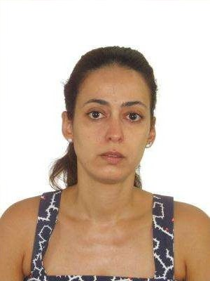
Vanessa Paiva Arquiteta e Urbanista formada pela faculdade D. Pedro II em 2000 Pós graduada em Desenho Urbano pela Unifran. Proprietária do escritório Paiva e Passarini desde 2010.…
Vanessa Paiva Arquiteta e Urbanista formada pela faculdade D. Pedro II em 2000 Pós graduada em Desenho Urbano pela Unifran. Proprietária do escritório Paiva e Passarini desde 2010. Associada AsBEA desde 2019. Atualmente Vice presidente de Expansão.
Elaine Sciumbata é Arquiteta Urbanista e com formação em Design de Interiores pela Escola Panamericana de Arte. Sua atuação profissional é voltada à arquitetura de interiores e a p…
Elaine Sciumbata é Arquiteta Urbanista e com formação em Design de Interiores pela Escola Panamericana de Arte. Sua atuação profissional é voltada à arquitetura de interiores e a projetos residenciais. É sócia-fundadora da JAE Arquitetura e Design, empresa criada em 2019, onde desenvolve projetos e acompanha diferentes etapas do processo, unindo experiência, técnica e olhar estratégico. Atua também na valorização da profissão e no fortalecimento da arquitetura, buscando contribuir para uma atuação profissional cada vez mais qualificada, ética e conectada às necessidades da sociedade.
Priscila Sampaio de Mattos Venturi é arquiteta e urbanista formada pela Universidade Presbiteriana Mackenzie, com especializações em História da Arquitetura e do Urbanismo Moderno…
Priscila Sampaio de Mattos Venturi é arquiteta e urbanista formada pela Universidade Presbiteriana Mackenzie, com especializações em História da Arquitetura e do Urbanismo Modernos e Arquitetura Contemporânea pela FAU-USP. Com mais de 30 anos de atuação, construiu sua trajetória em escritórios de arquitetura, construção civil e incorporação imobiliária, com experiência em concepção de empreendimentos, projetos arquitetônicos, executivos e legais, compatibilização, aprovações e coordenação de projetos. Atuou para construtoras e incorporadoras no desenvolvimento de estudos de viabilidade e projetos residenciais de grande porte. Desde 2009, está à frente da PWDesign Arquitetura e Interiores, onde já desenvolveu mais de 150 projetos e obras de arquitetura de interiores, nos segmentos residencial e comercial, atuando do projeto à coordenação e gerenciamento de obras.
Arquiteto e Urbanista (Barão de Mauá, 2018) e Especialista em Master BIM (IPOG, 2021). Servidor público efetivo e atual Secretário de Infraestrutura e Urbanismo da Estância Turísti…
Arquiteto e Urbanista (Barão de Mauá, 2018) e Especialista em Master BIM (IPOG, 2021). Servidor público efetivo e atual Secretário de Infraestrutura e Urbanismo da Estância Turística de Batatais, gerencia políticas de planejamento territorial, habitação, mobilidade urbana e revisão legislativa, atuando também como conselheiro do Conselho Municipal de Defesa do Meio Ambiente (COMDEMA). Na iniciativa privada, opera como consultor externo em modelagem, compatibilização BIM, licenciamento e viabilidade urbana. Responsável pela emissão de laudos, pareceres e projetos em ambos os setores, busca aplicar a formação contínua e a sinergia público-privada como ferramentas primordiais para a desburocratização de processos, o fomento econômico e a melhoria da qualidade de vida.
Sou Audreen Barbosa, Arquiteta e Urbanista formada em 2017 pelo Centro Universitário Barão de Mauá. Atuo na área de projetos desde 2001, iniciando como desenhista em AutoCAD e con…
Sou Audreen Barbosa, Arquiteta e Urbanista formada em 2017 pelo Centro Universitário Barão de Mauá. Atuo na área de projetos desde 2001, iniciando como desenhista em AutoCAD e construindo uma sólida experiência ao lado de profissionais da Engenharia e da Arquitetura. Ao longo da minha trajetória, especializei-me em projetos de sistemas de climatização e pude desenvolver junto a profissionais da Engenharia Mecânica, trabalhos para edificações comerciais, industriais, hospitalares e residenciais. Minha atuação é pautada pela qualidade técnica, inovação e constante atualização profissional, acompanhando a evolução tecnológica da arquitetura. Defendo uma profissão ética, valorizada e comprometida com a construção de cidades mais sustentáveis, acessíveis e humanizadas. Acredito no fortalecimento do CAU, na aproximação com os profissionais e na valorização da produção arquitetônica como pilares para o desenvolvimento e a representatividade da nossa categoria.
Sou arquiteta e urbanista, pós-graduada em Avaliações, Perícias, Engenharia Diagnóstica e Patologia das Construções, com atuação em projetos arquitetônicos, produção técnica, regul…
Sou arquiteta e urbanista, pós-graduada em Avaliações, Perícias, Engenharia Diagnóstica e Patologia das Construções, com atuação em projetos arquitetônicos, produção técnica, regularização imobiliária, avaliações imobiliárias e consultoria nas áreas de planejamento urbano e legislação aplicada. Ao longo da minha trajetória, busco integrar a Arquitetura e Urbanismo à gestão pública, desenvolvendo soluções técnicas que promovam a qualificação do ambiente construído e a valorização da nossa profissão. Atuei como integrante da Comissão Organizadora da 1ª Conferência Municipal da Cidade de Caraguatatuba, representando a Associação dos Arquitetos e Urbanistas de Caraguatatuba (AAUC), e fui eleita delegada suplente, representando o Conselho de Arquitetura e Urbanismo de São Paulo (CAU/SP). Atualmente, sou membro titular do Conselho Municipal de Habitação de Interesse Social (CMHISC) e do Conselho Municipal de Desenvolvimento Urbano (CMDU), representando a AAUC, além de integrar a Comissão de Revisão de Lançamentos do IPTU desde 2023 e ter participado da Comissão Municipal de Revisão da Planta Genérica de Valores (PGV) em 2022. Acredito na valorização da Arquitetura e Urbanismo por meio da atuação ética, técnica e participativa, contribuindo para o fortalecimento das atribuições profissionais e para a construção de cidades mais justas, inclusivas e sustentáveis.
Desde minha formação em 2015, busquei consolidar uma trajetória que alia a produção arquitetônica de qualidade à defesa ativa da profissão. No âmbito projetual, desenvolvi projeto…
Desde minha formação em 2015, busquei consolidar uma trajetória que alia a produção arquitetônica de qualidade à defesa ativa da profissão. No âmbito projetual, desenvolvi projetos residenciais e plurihabitacionais, atuando do estudo preliminar ao acompanhamento de obra. Cada projeto representa um compromisso com a qualidade do espaço construído, aliando criatividade e técnica para entregar soluções funcionais e esteticamente adequadas. A experiência acumulada ao longo desses anos me permitiu desenvolver um olhar apurado para as particularidades de cada obra, garantindo resultados que unem inovação e praticidade. Paralelamente, meu compromisso com a representatividade profissional se traduz na defesa do exercício legal da arquitetura, na valorização do papel social do arquiteto e na busca por uma atuação ética. Defender a categoria significa também atuar com responsabilidade técnica, respeitar as atribuições legais e contribuir para o fortalecimento do mercado da arquitetura. Representar a profissão é, acima de tudo, exercê-la com seriedade e compromisso público. Essa atuação dupla — projetar com excelência e defender a categoria — define meu compromisso com uma arquitetura ética, técnica e socialmente relevante. - Conteúdo programático para chapa que tenha mais afinidade: Participação em Câmaras técnicas relacionadas à Inovação, Gestão e Empreendedorismo — para Metodologias Inovadoras de Construção; Meio Ambiente / Sustentabilidade — encaixe mais direto para Conforto Ambiental, dentre outros.
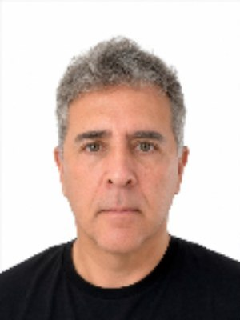
Formado em Arquitetura e Urbanismo pela Universidade Brás Cubas em 1991. Atuo no desenvolvimento de projetos arquitetônicos, licenciamentos ambientais, gerenciamento e execução de …
Formado em Arquitetura e Urbanismo pela Universidade Brás Cubas em 1991. Atuo no desenvolvimento de projetos arquitetônicos, licenciamentos ambientais, gerenciamento e execução de obras. Experiência significativa adquirida na Companhia Metropolitana do Estado de São Paulo (METRÔ) entre 1988 e 1995, desempenhando funçao de projetista em instalações elétricas, incluindo análise de viabilidade técnica e econômica, vistoria e acompanhamento de obras. Participando da equipe de projetos, pioneira na implantação do departamento de projetos em CAD no departamentode projetos de manutenção elétrica (MTC-EPL). Em setembro de 1995, segui minha empreitada como arquiteto e profissional autonomo, com projetos em varias cidades do estado e atualmente, presto serviços no municipio de Bertioga, onde desenvolvo meus projetos (residenciais e comerciais), gerencio e executo construçoes, alem de prestar consultoria a profissionais das regiao, construtoras e empreendedores, com forte atuaçao em questões ambientais focado nos licenciamentos, essenciais para a aprovação e execução dos projetos na região. Com mais de 30 anos de experiência em Arquitetura e Urbanismo, proponho uma gestão voltada com a valorização profissional, ao fortalecimento institucional e a defesa da fortificaçao das atribuições dos arquitetos e urbanistas. Com um programa de simplificação da analise dos processos, diálogo com órgãos públicos e ampliação do suporte técnico aos profissionais. Defendo a capacitação contínua, com participaçao efetiva do CAU na busca pela inovaçoes de tecnológica, orientação que possbilite a melhora dos processo de trabalho. Valorizo a sustentabilidade e integração entre o desenvolvimento urbano e a preservação ambiental. Busco ampliar a participação dos profissionais do interior e do litoral nas decisões da categoria, promovendo uma atuação transparente, participativa e alinhada aos desafios contemporâneos da Arquitetura e Urbanismo. Obrigado.
Arquiteta e urbanista formada (FAAP-SP) 2017. Atuante, predominantemente, na cidade de Santos/SP, desenvolvendo projetos arquitetônicos residenciais e comerciais pautados pela exce…
Arquiteta e urbanista formada (FAAP-SP) 2017. Atuante, predominantemente, na cidade de Santos/SP, desenvolvendo projetos arquitetônicos residenciais e comerciais pautados pela excelência técnica, pela funcionalidade e pela qualidade espacial. Minha produção arquitetônica caracteriza-se pela integração entre estética e soluções alinhadas às necessidades específicas de cada cliente e de cada contexto. Ao longo da minha trajetória, tenho contribuído para a valorização da arquitetura e do urbanismo por meio de uma prática profissional ética, responsável e comprometida com o ambiente construído.
Tiago Takano Maeda – Arquiteto e urbanista graduado pela Faculdade de Arquitetura e Urbanismo da FAAP (2013). Em 2011, realizou intercâmbio universitário na Faculdade de Arquitectu…
Tiago Takano Maeda – Arquiteto e urbanista graduado pela Faculdade de Arquitetura e Urbanismo da FAAP (2013). Em 2011, realizou intercâmbio universitário na Faculdade de Arquitectura da Universidade do Porto, em Portugal, no curso de Mestrado Integrado em Arquitectura. Ao longo de sua trajetória profissional, adquiriu experiência em escritórios renomados, de diferentes portes e perfis, atuando em projetos residenciais, comerciais e de infraestrutura, com desenvolvimento de projetos executivos e detalhamentos. Posteriormente, fundou o escritório Tiago Maeda Arquitetos, buscando desenvolver uma arquitetura mais funcional, inclusiva e atenta às diferentes necessidades das pessoas. Sua atuação também parte da compreensão de que a arquitetura e o mercado profissional devem contribuir para a igualdade de oportunidades, a inclusão e a redução de barreiras. Como arquiteto e urbanista com deficiência auditiva, traz para a profissão uma perspectiva singular sobre acessibilidade, inclusão e diversidade, aliando sua experiência profissional, criatividade visual e sensibilidade espacial à busca por ambientes mais acessíveis, funcionais e inclusivos. Também foi membro e voluntário, durante três anos (2018–2020), da Associação de Surdos do Estado de São Paulo – Vem Sonhar, atuando nas áreas de Marketing e Parcerias e contribuindo para o desenvolvimento de projetos e eventos culturais. Sua participação na chapa busca ampliar esse olhar dentro do CAU, contribuindo para uma profissão mais inclusiva, representativa e aberta às diferentes realidades dos arquitetos e urbanistas.
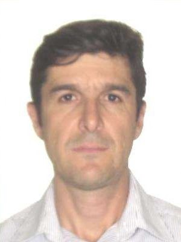
Juliano Costa de Morais Arquiteto e Urbanista CAU-SP A 107899-2 Apresentação Profissional Arquiteto e Urbanista - Graduado em 2015 - Universidade Uniabc/ Anhanguera. Pós graduação …
Juliano Costa de Morais Arquiteto e Urbanista CAU-SP A 107899-2 Apresentação Profissional Arquiteto e Urbanista - Graduado em 2015 - Universidade Uniabc/ Anhanguera. Pós graduação em - Engenharia de Avaliações e Pericias - Faculdade FMU/SP. Integrante do Instituto Brasileiro de Avaliações e Perícias de Engenharia. IBAPE-SP sob o número 2.111 Corretor de Imóveis inscrito sob o número - 87949 CRECI-SP. Bacharel em Direiro - Graduado em 2005 - Universidade São Francisco. USF-SP. Formação multidiciplinar que reune conhecimento das áreas de Arquitetura e Urbanismo - Engenharia de Avaliações e Pericia e Normas Técnicas.
Arquiteta e Urbanista com experiência na produção arquitetônica de projetos residenciais, comerciais e corporativos. Possui sóli…
Arquiteta e Urbanista com experiência na produção arquitetônica de projetos residenciais, comerciais e corporativos. Possui sólida atuação no desenvolvimento de projetos executivos, compatibilização de disciplinas, detalhamento construtivo e acompanhamento da execução de obras, participando de todas as etapas do processo projetual. Destaca-se pela criação de soluções arquitetônicas que integram funcionalidade, conforto, estética e viabilidade técnica, sempre com foco na qualidade dos espaços construídos. À frente da AffettoArquitetura e Design, consolidou trajetória marcada pela excelência técnica, inovação, gestão de equipes multidisciplinares e atendimento personalizado, contribuindo para a valorização da Arquitetura e Urbanismo e para a qualificação do ambiente construído. CONTEÚDO_PROGRAMÁTICO: Defender a valorização dos arquitetos e urbanistas por meio da qualificação profissional contínua, da inovação e do fortalecimento da atuação técnica da categoria. Incentivar a produção arquitetônica de qualidade, a adoção de novas tecnologias e o aprimoramento dos processos de projeto e execução. Promover a integração entre profissionais, instituições de ensino e sociedade, ampliando o reconhecimento da Arquitetura e Urbanismo como instrumentos de desenvolvimento social. Apoiar ações voltadas à sustentabilidade, acessibilidade e melhoria da qualidade dos espaços construídos. Atuar com ética, transparência e participação, fortalecendo a representatividade dos profissionais e contribuindo para cidades mais inclusivas, humanas e ambientalmente responsáveis.
Arquiteto e Urbanista formado pela FAUS/UNISANTOS (1988) e Pós-Graduado em Engenharia de Segurança do Trabalho pela UNISANTA (1994). Servidor p…
Arquiteto e Urbanista formado pela FAUS/UNISANTOS (1988) e Pós-Graduado em Engenharia de Segurança do Trabalho pela UNISANTA (1994). Servidor público concursado da Prefeitura Municipal de Santos desde 1991, atua como arquiteto e fiscal de obras. Possui ampla experiência como perito judicial nas áreas trabalhista e cível, com atuação em diversas comarcas da Baixada Santista. Desenvolveu consultorias técnicas para empresas dos setores industrial, portuário, naval e jurídico, além de elaborar projetos arquitetônicos e ambientais, com destaque para Planos de Recuperação de Áreas Degradadas por atividade minerária. Também integrou a Receita Federal do Brasil, exercendo a função de Auxiliar de Vigilância e Repressão. Sua trajetória é marcada pela sólida experiência técnica, atuação pericial e compromisso com a gestão pública e a segurança do trabalho.
Arquiteta e urbanista formada há 22 anos, iniciei minha trajetória na Prefeitura de São Paulo, atuando no retrofit de edifícios do centro, junto a profissionais como Helena Mena Ba…
Arquiteta e urbanista formada há 22 anos, iniciei minha trajetória na Prefeitura de São Paulo, atuando no retrofit de edifícios do centro, junto a profissionais como Helena Mena Barreto e Nabil Bonduki. Posteriormente, mantive escritório próprio, com atuação em arquitetura comercial, visual merchandising, projetos residenciais e reformas. Há 18 anos sou arquiteta concursada da Caixa Econômica Federal, com experiência em Habitação de Interesse Social, Minha Casa Minha Vida, avaliação imobiliária, análise e acompanhamento de obras em todo o Estado de São Paulo. Participei também do desenvolvimento de produtos, manuais e normativos técnicos e habitacionais. Minha trajetória consolidou uma visão da Arquitetura para além do projeto, como instrumento de política pública e transformação social, e reforçou meu compromisso com a valorização, representatividade e defesa da profissão.
Arquiteto e Urbanista, graduado pela UNILAGO – São José do Rio Preto em 2019, com formação técnica em Edificações pela ETEC Philadelpho Manoel Gouvêa Netto, concluída em 2012. Atua…
Arquiteto e Urbanista, graduado pela UNILAGO – São José do Rio Preto em 2019, com formação técnica em Edificações pela ETEC Philadelpho Manoel Gouvêa Netto, concluída em 2012. Atua profissionalmente desde a graduação, desenvolvendo projetos de arquitetura comercial e residencial, com experiência especialmente em lojas e empreendimentos ligados ao setor de abastecimento, como lojas de conveniência, troca de óleo, lava-jatos e projetos-piloto. Iniciou sua trajetória profissional em 2016, ainda durante a graduação, em uma indústria de comunicação visual com atuação internacional e certificações de qualidade. A experiência contribuiu para sua formação técnica, desenvolvendo seu interesse por processos, organização, qualidade e eficiência. Desde a conclusão da graduação, atua de forma autônoma e, desde 2024, como empresário à frente de seu próprio escritório. Tem como princípios profissionais a escuta ativa, o diálogo, a busca por soluções tecnicamente adequadas e economicamente coerentes, o respeito à legislação e às normas e a valorização da qualidade do trabalho. É movido pela curiosidade e pelo aprendizado contínuo, tendo iniciado em 2026 sua capacitação em BIM e Revit. Tem se aproximado da representação coletiva da categoria por meio do grupo Arquitetos em Movimento, iniciativa voltada à identificação de demandas dos profissionais e à construção de ações para enfrentá-las. Também possui experiência em comunicação, organização e condução de atividades institucionais e voluntárias. Aceita o desafio de contribuir com o CAU por acreditar que a atuação do Conselho deve, antes de tudo, servir à sociedade, fortalecendo o exercício ético e qualificado da Arquitetura e Urbanismo. Defende uma atuação que dialogue com fiscalização, valorização profissional, legislação, novas tecnologias, formação e apoio aos jovens arquitetos, ampliação do acesso à arquitetura e maior aproximação com o poder público.
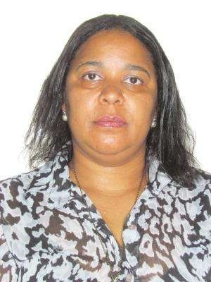
Possui graduação em Arquitetura e Urbanismo (1993), Mestrado em Planejamento e Gestão do Território - UFABC (2014), Especialização em Gestão Pública Municipal pela Universidade Fed…
Possui graduação em Arquitetura e Urbanismo (1993), Mestrado em Planejamento e Gestão do Território - UFABC (2014), Especialização em Gestão Pública Municipal pela Universidade Federal de São Paulo - UNIFESP (2019). Desenvolveu projetos e pesquisas acadêmicas na área de teoria e história da arquitetura e do urbanismo, planejamento e gestão do território com ênfase em preservação do patrimônio cultural. Possui em seu currículo artigos científicos publicados em revista e anais de evento nacionais e internacionais. Trabalhou como professora em cursos técnicos, auxiliar de instrução e técnica de laboratório; trabalha na área da arquitetura e urbanismo, atuando principalmente com projeto residencial, comercial e corporativo, laudo técnico e gerenciamento de obra. Atuou com conselheira no Conselho Municipal de Defesa do Patrimônio Histórico, Artistíco, Arquitetônico-Urbanístico e Paisagístico de Santo André – COMDEPHAAPASA; foi assessora na Prefeitura Municipal de Santo André e atualmente faz parte da diretoria da AMUSA
Arquiteto e Urbanista, com pós-graduação em Tecnologia da Edificação pela Poli-USP e em Engenharia e Manutenção Hospitalar pela FEI-SP, possui experiência multidisciplinar em proje…
Arquiteto e Urbanista, com pós-graduação em Tecnologia da Edificação pela Poli-USP e em Engenharia e Manutenção Hospitalar pela FEI-SP, possui experiência multidisciplinar em projetos de grande porte, arquitetura hospitalar, infraestrutura pública, acessibilidade, segurança contra incêndio, urbanismo e gestão de projetos. Atua como Arquiteto Pleno Hospitalar, desenvolvendo reformas e ampliações para unidades de saúde do município de São Paulo, e acumula experiência na coordenação de projetos hospitalares de alta complexidade e escala, com mais de 55.000m² contruído. Sua trajetória inclui trabalhos para instituições e equipamentos públicos de relevância, como Hospital das Clínicas, CPTM, TJSP e terminais rodoviários, além de projetos de restauro, sustentabilidade, acessibilidade e segurança. Possui experiência em coordenação de equipes multidisciplinares, compatibilização de projetos, acompanhamento de obras, planejamento e gerenciamento, aliada ao domínio de ferramentas digitais. Tem especial interesse pelo fortalecimento da Arquitetura e Urbanismo como atividade estratégica para a sociedade, pela valorização e qualificação profissional, inovação tecnológica, gestão pública, acessibilidade, inclusão, sustentabilidade e melhoria da qualidade do ambiente construído. Defende um CAU mais técnico, participativo, transparente e próximo dos profissionais e da sociedade, capaz de ampliar o protagonismo da Arquitetura nas políticas públicas e contribuir para cidades e equipamentos mais seguros, inclusivos, funcionais, acessíveis, sustentáveis e humanizados.
Arquiteta e Urbanista pela Universidade de São Paulo (EESC-USP) e Mestre pela FAU-USP, Daniela Morelli de Lima reúne mais de trinta anos de atuação, destacando-se pela produção arq…
Arquiteta e Urbanista pela Universidade de São Paulo (EESC-USP) e Mestre pela FAU-USP, Daniela Morelli de Lima reúne mais de trinta anos de atuação, destacando-se pela produção arquitetônica em projetos residenciais, comerciais, industriais e sustentáveis. Paralelamente à prática profissional, construiu uma trajetória de destacada representatividade institucional por meio do Instituto de Arquitetos do Brasil (IAB) Núcleo Americana, do Conselho de Arquitetura e Urbanismo de São Paulo (CAU/SP) em seu início e da participação em conselhos e processos de planejamento urbano. Sua trajetória alia produção técnica à atuação institucional, em defesa da valorização da profissão, da ética e da qualidade da arquitetura.
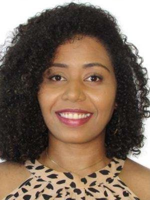
Profissional graduada e registrada no CAU/SP desde 2021 sob número A242317-0. Com sólida experiência na área, minha atuação profissional é focada no desenvolvimento de projetos re…
Profissional graduada e registrada no CAU/SP desde 2021 sob número A242317-0. Com sólida experiência na área, minha atuação profissional é focada no desenvolvimento de projetos residenciais particulares, onde busco aliar funcionalidade, estética e as reais necessidades de cada cliente. Paralelamente à prática autônoma, carrego uma bagagem voltada à sustentabilidade que vem desde a faculdade, onde desenvolvi meu TFG focado em produção rural sustentável. Minha inserção na defesa da categoria inclui a participação em algumas reuniões do IAB-SP e a atuação na comissão eleitoral do CAU-SP, no qual fui membro na última eleição, onde adquiri conhecimento e proximidade com as legislações eleitorais do CAU-SP. Além disso, fiz parte de um grupo de projeto social focado em regularização fundiária, promovendo autonomia e renda para comunidades carentes através da produção de tijolos ecológicos com matéria-prima local. Defendo firmemente os direitos dos profissionais liberais e sustento a premissa de que a arquitetura deve ser acessível a todos, funcionando como ferramenta de transformação social e dignidade para quem mais precisa.
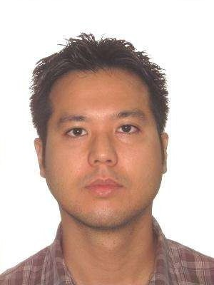
Sócio fundador do estúdio DSIGN/SA, graduado em Arquitetura e Urbanismo pela Universidade de São Paulo com especialização em Gerenciamentos de Projetos. Prática profissional na coo…
Sócio fundador do estúdio DSIGN/SA, graduado em Arquitetura e Urbanismo pela Universidade de São Paulo com especialização em Gerenciamentos de Projetos. Prática profissional na coordenação de projetos Arquitetônicos Integrados em Edificação, Design de Interiores e Environmental Graphic Design. Professor universitário no curso de Graduação de Arquitetura e Urbanismo da Universidade Paulista.
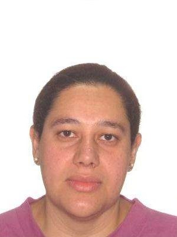
Bacharel em Arquitetura e Urbanismo pela Universidade de Taubaté, no ano de 1998, Mestre em Ciências Ambientais pela Universidade de Taubaté, no ano de 2003 e Licenciada em Matemát…
Bacharel em Arquitetura e Urbanismo pela Universidade de Taubaté, no ano de 1998, Mestre em Ciências Ambientais pela Universidade de Taubaté, no ano de 2003 e Licenciada em Matemática pelo Centro Universitário Claretiano, no ano de 2007 e Licenciatura em Educação Artística - Artes Visuais pela Universidade Metropolitana de Santos, no ano de 2011. Lecionei como Professor Colaborador da Universidade de Taubaté - UNITAU, no Departamento de Arquitetura e Urbanismo e no Departamento da Engenharia Civil, no curso de Engenharia Ambiental. No Centro Universitário Claretiano, como Professora Responsável, Tutor Web e Presencial do curso de Licenciatura em Educação Artística - Artes Visuais, no 1º, 2º e 3º ano. Atualmente, leciono no curso de Arquitetura e Urbanismo da Universidade Paulista - UNIP, nas disciplinas de Desenho de Representação e Observação (DRO), Desenho Técnico Expressivo (DTE), Projeto Arquitetônico - Habitação Coletiva (PA-HC), Projeto Arquitetônico - Habitação Coletiva Alta Densidade (PA-HCAD) e Trabalho de Curso (TC), executo projetos na área de Arquitetura, Paisagismo, Arquitetura de Interiores e Mobiliário em Geral (ambientes planejados).
Thais Fernanda Beraldo Paixão nasceu no dia 10/05/1990, na cidade de Americana - São Paulo. Seu interesse pela área despertou cedo, realizando formações técnicas complementares na…
Thais Fernanda Beraldo Paixão nasceu no dia 10/05/1990, na cidade de Americana - São Paulo. Seu interesse pela área despertou cedo, realizando formações técnicas complementares nas áreas de Design de Interiores e de Edificações. Em 2008 ingressou formalmente no mercado corporativo como consultora especialista em vendas de mobiliário planejado de alto padrão. Buscando aprofundar seus conhecimentos práticos, iniciou a faculdade e graduou-se em Arquitetura e Urbanismo pela Universidade UNIP. Durante seus anos de graduação atuou de forma expressiva em uma construtora, adquirindo sólida experiência no canteiro de obras com acompanhamento detalhado de edificações prediais de grande porte e o desenvolvimento de loteamentos. Também liderou o gerenciamento de processos analísticos complexos e a regularização de documentações técnicas junto a diferentes orgãos públicos. Após concluir o ensino superior, seu perfil empreendedor e visão estratégica de mercado a motivaram a abrir o próprio negócio. Sua primeira empresa, a Traço Concreto, nasceu de uma bem-sucedida sociedade focada na integração de projetos com a engenharia civil. Posteriormente buscou ampliar sua especialização acadêmica cursando pós-graduação em Gerenciamento de Empreendimentos na Universidade Presbiteriana Mackenzie. No início do ano de 2018 fundou oficialmente o prestigiado estúdio que carrega seu nome, Thais Beraldo Arquitetura.Com mais de 15 anos de atuação profissional, se destaca no desenvolvimento de projetos residenciais, corporativos e industriais.O foco central de suas criações busca alinhar de maneira inteligente formas geométricas contemporâneas e linhas puras e retas. A personalização fina no atendimento do escritório busca traduzir a real identidade, necessidades técnicas e desejos estéticos de cada cliente. Sua atuação engloba todas as etapas construtivas, garantindo alta viabilidade técnica e otimização de orçamentos para investidores.
Frederic Edouard Lebois, Arquiteto e Urbanista, com extensa experiência profissional em projetos residenciais individuais, edifícios comerciais e residenciais, lojas, planejamento …
Frederic Edouard Lebois, Arquiteto e Urbanista, com extensa experiência profissional em projetos residenciais individuais, edifícios comerciais e residenciais, lojas, planejamento de espaços corporativos e arquitetura de interiores, incluindo gerenciamento de projetos complementares, construções e obras. Especialista em Estruturas Metálicas para Edifícios e Técnicas Construtivas da Arquitetura Tradicional Paulista (FAU-USP). Sócio-Diretor da Lebois, De Rogatis / arquitetura & design ltda. Professor de Projeto de Arquitetura, Projeto do Objeto, CAD e Design de Interiores na FAU Católica-Santos e de Desenho Industrial na UNIP-SP. foi diretor de Arte na Denisson Propaganda e Gerente de Facilities e Space Planning no BankBoston em SP e USA. Experiência e vivencia internacional – São Paulo, Caracas, Mexico/DF, Buenos Aires e Boston.
Arquiteta e Urbanista com 25 anos de experiência no desenvolvimento e coordenação de projetos residenciais, comerciais e de saúde.Especialista em Arquitetura Hospitalar e Design de…
Arquiteta e Urbanista com 25 anos de experiência no desenvolvimento e coordenação de projetos residenciais, comerciais e de saúde.Especialista em Arquitetura Hospitalar e Design de Interiores.
Valéria Paes Pereira é Arquiteta e Urbanista (CAU-A20527-3), graduada em 1993 pela PUC-Campinas, com trajetória profissional pautada pelo rigor técnico, ética e valorização da prof…
Valéria Paes Pereira é Arquiteta e Urbanista (CAU-A20527-3), graduada em 1993 pela PUC-Campinas, com trajetória profissional pautada pelo rigor técnico, ética e valorização da profissão. Possui formação internacional pela Fundació Politècnica de Catalunya, em Barcelona, onde aprofundou seus estudos em evolução e planejamento urbano, e especialização em Light Design pela UNICAMP.Com mais de três décadas de atuação baseada em Campinas/SP, sua prática correlaciona volumetria construtiva, ergonomia e luminotécnica aplicada ao bem-estar e à saúde integrativa dos usuários nos espaços urbanos e edificados. Sua candidatura visa contribuir para o fortalecimento técnico do CAU/SP, defendendo a fiscalização humanizada, o aprimoramento das atribuições profissionais e o fomento a práticas contemporâneas e sustentáveis na Arquitetura e Urbanismo
Arquiteto e Urbanista Formado pelo Universidade Braz Cubas em 1995 1- Assessoria Técnica para Construção de Unidades Habitacionais de Mutirão auto gestao pelo CDHU. 5 Anos 2-Presta…
Arquiteto e Urbanista Formado pelo Universidade Braz Cubas em 1995 1- Assessoria Técnica para Construção de Unidades Habitacionais de Mutirão auto gestao pelo CDHU. 5 Anos 2-Prestação de Serviços de Assistencia Técnica na Caixa Economica Federal, para avaliação de Imoveis, Pericia, patologia em Edificações, Medições e Acompanhamento de Obras Financiadas pela CEF. 7 Anos 3- Coordenador de Gabinete na Camara Municipal de São Paulo, como Arquiteto da Presidencia da Comissão de Policita Urbana, com enfase na elaboração da Nova Lei de Zoneamento em 2015 a 2019. 4- Execução de Obras junto a CPTM - 5 anos, com diversas obras nas linhas de trens na construção de Salas Técnicas. 5- Coordenador de Planejamento e Desenvolvimento Urbano na sub Prefeitura de São MaTeus. 4 anos 6- Coordenador de Governo Local da Sub Prefeitura de São Mateus 3 anos. 7- Responsável pela elaboração, aprovação e execução de Projetos de Edificios Residenciais e Comerciais Junto a Prefeitura do Municipio de São Paulo.
Arquiteta formada pela faculdade Belas Artes de São Paulo em 1991, com ampla experiência profissional adquirida ao longo da atuação em arquitetura. Possuo sólida experiência em apr…
Arquiteta formada pela faculdade Belas Artes de São Paulo em 1991, com ampla experiência profissional adquirida ao longo da atuação em arquitetura. Possuo sólida experiência em aprovação e regularização de projetos junto à Prefeitura de São Paulo, acompanhando processos e demandas relacionada à legislação e documentação técnica. Atualmente, atuo como profissional autonoma em escritorio próprio, desenvolvendo trabalhos na área e oferecendo atendimento personalizado aos clientes.
Graduada em Arquitetura e Urbanismo pela Universidade de Taubaté (2005) e mestrado em Arquitetura e Urbanismo pela Universidade de São Paulo (2016), com o tema A Grande Enchente de…
Graduada em Arquitetura e Urbanismo pela Universidade de Taubaté (2005) e mestrado em Arquitetura e Urbanismo pela Universidade de São Paulo (2016), com o tema A Grande Enchente de São Luiz do Paraitinga. Atua no ensino superior como docente no curso de Arquitetura e Urbanismo e como arquiteta autônoma, realizando também consultoria e assessoria técnica. Possui experiência na área de Arquitetura e Urbanismo, com ênfase nos seguintes temas: patrimônio histórico, história da arquitetura e do urbanismo, planejamento urbano, planos diretores e meio ambiente. Publicou em 2020 o livro A Grande Enchente de São Luiz do Paraitinga - 2010
Possui graduação em Arquitetura e Urbanismo pela Universidade de Taubaté (1999), graduação em Pedagogia pela Universidade Metropolitana de Santos (2015), graduação em Educação Ar…
Possui graduação em Arquitetura e Urbanismo pela Universidade de Taubaté (1999), graduação em Pedagogia pela Universidade Metropolitana de Santos (2015), graduação em Educação Artística com Habilitação em Artes Plásticas pela Faculdade Santa Cecilia (2007), especialização em Ensino de Artes Visuais pela Universidade Metropolitana de Santos (2016), em Planejamento e Desenvolvimento Regional pela Universidade de Taubaté (2018) e em Artes Plásticas pela Escola Municipal de Artes Maestro Fêgo Camargo (1994). Atualmente é Proprietário da ZANDONADI Arquitetura e Construção, Proprietário da PróURBE Planejamento de Cidades, Professor PIII da Prefeitura Municipal de Taubate, Pesquisador da Universidade de Taubaté e Coordenador de Área/Curso da Escola Municipal de Artes Maestro Fêgo Camargo. Tem experiência na área de Arquitetura e Urbanismo. Atuando principalmente nos seguintes temas: Planejamento, Desenvolvimento Regional, Mobilidade Urbana, Mobilidade Inteligente e Cidade Inteligente.
Formação: Graduada em Arquitetura e Urbanismo pelo Centro Universitário da Grande Dourados (2002), com Especialização em Metodologia do Ensino Superior pelo Centro Universitário da…
Formação: Graduada em Arquitetura e Urbanismo pelo Centro Universitário da Grande Dourados (2002), com Especialização em Metodologia do Ensino Superior pelo Centro Universitário da Grande Dourados (2004). Possui Qualificação em nível de Mestrado em História pela Universidade Federal da Grande Dourados (2005) e Licenciatura em História pelo Centro Universitário Cidade Verde (2024). Atualmente, cursa Pós-Graduação em Patrimônio Histórico Brasileiro pelo Centro Institucional Multidisciplinar de Ensino Superior Brasileiro, ampliando sua formação interdisciplinar nas áreas de arquitetura, história, patrimônio cultural e educação. Atuação Profissional: Atuou como Gerente da Divisão de Planejamento Urbano da Prefeitura da Estância de Atibaia, no período de 2008 a 2009, desenvolvendo atividades relacionadas ao planejamento e à gestão urbana municipal. Atua como profissional liberal na área de Arquitetura e Urbanismo, com escritório próprio sediado em Atibaia, desenvolvendo projetos arquitetônicos e urbanísticos e acumulando experiência técnica em projetos e obras públicas executados nos Estados de São Paulo e Minas Gerais, devidamente registrados em seu acervo técnico profissional por meio de Certidões de Acervo Técnico (CAT). Atuação Acadêmica e Docente: Possui experiência como docente substituta na rede privada de ensino, com atuação nas áreas de Artes, História e Sociologia, integrando sua formação em Arquitetura, História e Educação à prática docente. Atualmente, atua como Docente no Curso Técnico em Meio Ambiente da ETEC Cônego José Bento, em Jacareí SP, ministrando a disciplina Avaliação de Risco e Impacto Ambiental, no âmbito da formação técnica em Meio Ambiente.
Gabriela Roncoletta é arquiteta e urbanista com atuação voltada ao desenvolvimento de projetos arquitetônicos, planejamento urbano e gestão pública, destacando-se pela produção de …
Gabriela Roncoletta é arquiteta e urbanista com atuação voltada ao desenvolvimento de projetos arquitetônicos, planejamento urbano e gestão pública, destacando-se pela produção de soluções que conciliam qualidade técnica, funcionalidade, acessibilidade e valorização dos espaços públicos. Sua atuação também se estende à docência e à formação de novos profissionais, compartilhando conhecimentos técnicos e incentivando a prática ética da Arquitetura e Urbanismo. Além da produção arquitetônica, destaca-se por sua representatividade na defesa da profissão, participando de debates, ações institucionais e iniciativas que valorizam o papel do arquiteto e urbanista como agente fundamental no planejamento e desenvolvimento das cidades. Sua trajetória evidencia o compromisso com a qualidade da arquitetura, a responsabilidade social e o fortalecimento da profissão perante a sociedade. EXPERIÊNCIA PROFISSIONAL: Atual - Professora no Curso de Arquitetura e Urbanismo da UNIFAAT – Atibaia/SP Atual - Assessora na Secretaria de Serviços do município de Atibaia-SP Atual - Administração de Obras para Execução de Projetos Arquitetônicos e de Interiores - Diretora de Projetos e Orçamentos na Secretaria de Obras Públicas do município de Atibaia-SP - Coordenadora no Curso de Arquitetura e Urbanismo da UNIFAAT – Atibaia/SP - Projetos Básico e de Detalhamento das áreas de casario das platafomras de petróleo PRA1 (Plataforma de Rebombeamento Automático 1), P14 (Plataforma Petrobrás XIV) e P23 (Plataforma Petrobrás XXIII) - Projetos nas áreas de Conforto, Iluminação e Projetos e Obras Residenciais - Pesquisa na área de Habitação Popular com foco no Conforto Ambiental CURSOS Gestão em BIM | Sketch Up e Layout | BIM REVIT | Curso de Luz | Arquitetos de Sucesso | Microstation | Edificação em 3D Completo com Archi 3D, 3D Studio e Photoshop | Qualificação da Iluminação Artificial | Qualidade Térmica e Acústica no Ambiente Urbano | Arquitetura de Terra – Teoria e Prática
Arquiteto e Urbanista com Mestrado em Sustentabilidade na Gestão Ambiental pela UFSCar, MBA em Administração Pública e Gestão de Cidades pela UNIDERP e Especialista Master em Neuro…
Arquiteto e Urbanista com Mestrado em Sustentabilidade na Gestão Ambiental pela UFSCar, MBA em Administração Pública e Gestão de Cidades pela UNIDERP e Especialista Master em Neuroarquitetura pelo IPOG. Exerce o cargo docente no curso de Arquitetura e Urbanismo da Universidade de Sorocaba (UNISO) desde 2013, além de atuação profissional como Arquiteto na Prefeitura de Sorocaba desde 2011. Desenvolve pesquisas acadêmicas em Habitação Social e Planejamento Urbano. Na Prefeitura de Sorocaba exerceu o cargo de Secretário da Habitação e Regularização Fundiária de 01/01/2021 a 13/02/2025, criando programas de incentivo habitacional em vazios urbanos como: Casa Nova Sorocaba (incorporação em terrenos públicos) e Lotes Sociais (reinserção de famílias desalojadas com ATHIS fornecida pelos arquitetos da prefeitura), assim como criou o programa de melhorias habitacionais para reparos de casas insalubres após a titulação da Regularização Fundiária, intitulado Casa Linda. Assim como foi o fomentador para a delimitação de ZEIS pela primeira vez no Planejamento Urbano de Sorocaba, atuando como ferramenta de inibição de loteamentos clandestinos e degradação ambiental.
Adriano Francisco Luchetta é Arquiteto e Urbanista, formado há 17 anos pela Universidade Nove de Julho (UNINOVE). Ao longo de sua trajetória profissional, adquiriu ampla experiênci…
Adriano Francisco Luchetta é Arquiteto e Urbanista, formado há 17 anos pela Universidade Nove de Julho (UNINOVE). Ao longo de sua trajetória profissional, adquiriu ampla experiência nas áreas de arquitetura, urbanismo e planejamento urbano, atuando tanto no setor público quanto na iniciativa privada. Profissional com vasta experiência em serviços de elaboração e aprovação e regularização de projetos residências, emissão de habite-se, regularização de imóveis junto a receita federal e cartório de registro de imóveis, oferecendo suporte técnico aos clientes em todas as etapas do processo. No período de 2023 a 2025 integrou a associação de arquitetos do municio (AVAU) Associação Vargem-grandense de Arquitetos e Urbanista onde reside, fortalecendo sua participação na valorização da profissão e contribuindo para o desenvolvimento da arquitetura e do urbanismo na região. Atua como servidor público desde 2009, na prefeitura de Vargem Grande Paulista, concursado, onde trabalha no setor de Planejamento Urbano na Divisão de desenvolvimentos de Projetos, atuando com projetos de praças, reformas de prédios públicos, projetos básico de pavimentação recapeamento asfáltico e sinalização, Atualização do Mapa do Município, contribuindo para o planejamento e a organização territorial do município. Além de suas atribuições no setor de Planejamento Urbano, a pouco tempo foi convidado para integrar a Comissão de Regularização Fundiária da Prefeitura, participando dos processos de regularização de núcleos urbanos, análise técnica de imóveis e demais procedimentos voltados à promoção da segurança jurídica e da inclusão social por meio da regularização fundiária.
Graduação: Centro Universitário Barão de Mauá Formação: Arquitetura e Urbanismo - Conclusão: Julho de 2003 Especialização: Gestão Ambiental - Conclusão: Maio de 2005 - UFSCar / IBE…
Graduação: Centro Universitário Barão de Mauá Formação: Arquitetura e Urbanismo - Conclusão: Julho de 2003 Especialização: Gestão Ambiental - Conclusão: Maio de 2005 - UFSCar / IBEAS Especialização: Gestão Urbana - Conclusão: Agosto de 2005 - UFSCar / IBEAS Aperfeiçoamento: Administração e Finanças para Engenheiros e Arquitetos Conclusão: Outubro de 2006 - Centro Universitário Moura Lacerda Outros: - Membro titular do Conselho Municipal de Urbanismo de Ribeirão Preto (COMUR) desde Maio de 2005 e 1ª Secretária a partir de Março de 2007, Gestão 2007 a 2009. - Sócia fundadora da Associação Cultural e Ecológica Pau Brasil em Ribeirão Preto, SP - Membro do conselho curador da Fundação Acangaú, Paracatu MG
Elienai Araújo Sales – graduada em Arquitetura e Urbanismo em Ribeirão Preto, em 2022, e Técnica em Edificações pelo CEFET-MG. Atua nas áreas de regularização de imóveis, elaboraçã…
Elienai Araújo Sales – graduada em Arquitetura e Urbanismo em Ribeirão Preto, em 2022, e Técnica em Edificações pelo CEFET-MG. Atua nas áreas de regularização de imóveis, elaboração e aprovação de projetos arquitetônicos, habite-se, averbação de construções e planejamento de obras, orçamento de estruturas metálicas,gestão de processos na construção civil e soluções voltadas à conformidade técnica, à segurança jurídica e à valorização do patrimônio imobiliário, assessorando em processos de regularização e documentação técnica. Avaliadora de Imóveis por Inferência Estatística, Perícia Judicial, Regularização de Imóveis, Incorporação Imobiliária, além do Programa Empretec, do SEBRAE, e cursos complementares nas áreas de planejamento, orçamento, gestão empresarial e tecnologias aplicadas à Arquitetura. Participou do Programa de Iniciação Científica "Levantamento de Dados da Comunidade Porto Ferreira".
Cristian Roberto Nazareth Lisbôa é arquiteto e urbanista, doutor e mestre em Engenharia Urbana pela Universidade Federal de São Carlos (UFSCar), especialista em Gerenciamento de Pr…
Cristian Roberto Nazareth Lisbôa é arquiteto e urbanista, doutor e mestre em Engenharia Urbana pela Universidade Federal de São Carlos (UFSCar), especialista em Gerenciamento de Projetos pelo Centro Universitário Senac, graduado em Arquitetura e Urbanismo pela Universidade Paulista (UNIP) e técnico em Edificações pelo Centro Paula Souza (ETEC Philadelpho Gouvêa Netto). Possuo trajetória vinculada ao planejamento urbano, à gestão pública, ao patrimônio cultural, à legislação urbanística e à produção do espaço construído. É representante suplente no Conselho do Plano Diretor de Desenvolvimento Sustentável de São José do Rio Preto no biênio 2025–2027, função também exerccida em 2021–2023. Também integrei o Conselho Municipal de Políticas Culturais de São José do Rio Preto, colaborando na elaboração do Plano Municipal de Cultura; o Conselho Municipal de Defesa do Patrimônio Histórico, Artístico, Cultural e Turístico (COMDEPHACT), onde atuei como secretário; e o Conselho Municipal de Turismo (COMTUR), como suplente. No setor privado, possui experiência em projetos executivos, acompanhamento técnico e gestão de obras residenciais, comerciais e institucionais. É sócio-diretor da Planear – Territórios & Soluções, atuando na elaboração de Planos Diretores, diagnósticos territoriais e marcos legais de ordenamento urbano e territorial para municípios de pequeno e médio porte. Atua como docente no curso de Arquitetura e Urbanismo do Centro Universitário de Rio Preto – UNIRP, desde 2014, e da Universidade Paulista – UNIP/SJRP, desde 2022, contribuindo para a formação de novos profissionais nas áreas de projeto, planejamento urbano, legislação urbanística e desenvolvimento territorial. Na gestão pública, foi Chefe da Divisão Técnica de Planejamento Físico-Territorial da Prefeitura de Mirassol e Diretor de Serviços na Secretaria de Habitação da Prefeitura de São José do Rio Preto, com atuação em planejamento urbano, estruturação territorial e regularização de loteamentos.
Formado pela Faculdade de Arquitetura e Urbanismo de Santos, em 1979. Secretário de obras, serviços públicos e habilitação na administração 1997/2000, prefeito Antonio Sanches Card…
Formado pela Faculdade de Arquitetura e Urbanismo de Santos, em 1979. Secretário de obras, serviços públicos e habilitação na administração 1997/2000, prefeito Antonio Sanches Cardoso. Membro e fundador Rotary Club Grandes Lagos. Vice-presidente do Jales Clube. Presidente do Lar transitório São Francisco de Jales em 3 mandatos. OBRAS RELEVANTES: Escola Cooperativa e Ginásio de esportes. Edifício Portal-Leste e Ed. Caravelle - 12 andares cada. Complexo Esportivo Social e Slão de Festas do Jales Clube. Inúmeras Clinícas Médicas, Residências de pequeno e grande porte em Jales e região. Agencia FORD Disbauto - Bauru - SP Agencia FIAT Lapemma - Botucatu e em Pereira Barreto. Residencias de grande porte em Matão, em São José do Rio Preto nos Damas I, II, e III. Recanto Real e Jardim do Cedro. Residencias em Bertioga e Riviera de São Lourenço. Atualmente continuo exercendo a função de arquiteto e participo como membro do Conselho da Cidade na atual administração.
Arquitetura e Urbanismo – Universidade Braz Cubas – 1998. Pós-Graduação, Especialização em Planejamento Urbano Regional – Universidade Católica de Santos – 2006. Atividade atual: D…
Arquitetura e Urbanismo – Universidade Braz Cubas – 1998. Pós-Graduação, Especialização em Planejamento Urbano Regional – Universidade Católica de Santos – 2006. Atividade atual: Diretor Obras Particulares, Prefeitura de Bertioga-SP Sócio – Proprietário da Empresa MS ARQUITETURA. Sede em Bertioga – SP. Conselheiro fiscal do SASP - Sindicato dos Arquitetos do Estado de SP; Diretor de Patrimônio da AEAAB – Ass. Eng. Arq. e Agro. de Bertioga; Presidente da CERPU – Comissão Especial de Regularização de Parcelamentos Urbanos; Relator do Plano Diretor de Desenvolvimento Sustentado de Bertioga em 2019. Conselheiro no Conselho Municipal de Saneamento Ambiental e infraestrutura de Bertioga; Conselheiro no Conselho Consultivo do Parque da Restinga de Bertioga - PERB.
Paulo Renato Mazzaro Arquiteto e Urbanista Trabalhei no serviço público municipal, por vários anos nas Prefeituras de São Roque, Ibiúna e Mairinque onde participei do planejamento …
Paulo Renato Mazzaro Arquiteto e Urbanista Trabalhei no serviço público municipal, por vários anos nas Prefeituras de São Roque, Ibiúna e Mairinque onde participei do planejamento urbano, elaboração de projetos arquitetônicos e desenvolvimento de soluções voltadas à melhoria da infraestrutura e da qualidade de vida da população. Fui por 4 mandatos Presidente da Associação dos Engenheiros e Arquitetos de São Roque, Mairinque, Ibiúna, Alumínio e Araçariguama, liderando iniciativas de valorização profissional, promoção de eventos técnicos, fortalecimento institucional e ampliação do diálogo entre profissionais, sociedade e poder público. Minha gestão contribuiu para o aprimoramento das práticas da categoria, incentivo à capacitação contínua e maior representatividade da associação no município e na região.
Graduada há mais de 30 anos, atuando na área de desenvolvimento de projeto e gestão de obras residenciais, comerciais, corporativas. Consultoria em viabilidade de incorporações re…
Graduada há mais de 30 anos, atuando na área de desenvolvimento de projeto e gestão de obras residenciais, comerciais, corporativas. Consultoria em viabilidade de incorporações residenciais. Atuei em proramas de habitação popular e urbanização na prefeitura de Diadema como estágio.
Renata Dias é Arquiteta e Urbanista com 10 anos de sólida experiência no mercado de trabalho. É especialista no desenvolvimento de projetos arquitetônicos, de interiores, fachadas …
Renata Dias é Arquiteta e Urbanista com 10 anos de sólida experiência no mercado de trabalho. É especialista no desenvolvimento de projetos arquitetônicos, de interiores, fachadas e compatibilização. À frente de seu próprio escritório desde 2017, vivencia diretamente os desafios cotidianos da profissão. Conhece profundamente a realidade e os gargalos enfrentados diariamente pelos pequenos escritórios.Sua vivência constante com as demandas do CAU como usuária traz uma perspectiva prática e real para a gestão. Acredita que o conselho precisa estar muito mais próximo, presente e acessível aos profissionais de base. Propõe um CAU mais atuante, desburocratizado e focado em soluções para quem empreende em menor escala. Defende a simplificação de processos e um suporte institucional efetivo para o dia a dia dos escritórios. Une sua bagagem técnica e gerencial à vontade genuína de transformar a representatividade da categoria. Luta pela valorização justa e pela defesa intransigente do trabalho dos arquitetos e urbanistas. Acredita que a união da classe é o caminho essencial para fortalecer a arquitetura regional. Coloca sua energia, dedicação e experiência prática a serviço de um CAU mais transparente e participativo.
O escritório Sérgio Branco Arquitetura, liderado pelo arquiteto e urbanista Sérgio Vinícius Calvoso, tem sede na cidade de Andradina, no interior de São Paulo. Atuação e Diferencia…
O escritório Sérgio Branco Arquitetura, liderado pelo arquiteto e urbanista Sérgio Vinícius Calvoso, tem sede na cidade de Andradina, no interior de São Paulo. Atuação e Diferenciais Trajetória sólida: Sérgio Branco acumula mais de 30 anos de experiência na área de desenho de projetos. Ele iniciou sua carreira na época da prancheta e do nanquim, auxiliando engenheiros e arquitetos antes de se graduar formalmente em Arquitetura e Urbanismo em 2022, pela AEMS – Faculdades Integradas de Três Lagoas – MS. Atua como arquiteto autônomo em empresa própria com a prestação de serviços de consultoria, assessoria, direção técnica, laudos e vistorias. Acumula experiências como Professor de Nível Técnico e Superior. Pós-graduando em Docência pelo IFMS Três Lagoas. Reconhecimento nacional: Em agosto de 2025, o escritório conquistou destaque nacional ao receber o 2º lugar na categoria "Gestão de Negócios Disruptivos"e 2º lugar na classificação geral do CAU Lab, programa de pré-incubação promovido pelo Conselho de Arquitetura e Urbanismo do Brasil (CAU/BR). O projeto foi denominado ARQTATO – Arquitetura Assistiva, um modelo de negócio de arquitetura que inclui o desenho tátil na entrega do produto arquitetônico. Filosofia de projeto: O escritório foca na criação de projetos residenciais e comerciais personalizados, buscando traduzir a identidade e a rotina de cada cliente em espaços que realmente façam sentido, e que permitam variados tipos de uso, sempre que possível. A experiência adquirida em décadas dedicadas ao desenvolvimento de projetos como desenhista confere ao escritório versatilidade técnica em disciplinas complementares e vasto repertório em tipologias e soluções. Dedicar tempo para estudos paralelos à atuação profissional, (in)formação continuada, capacitações e concursos específicos são algumas das atividades inclusas no cotidiano do escritório.
Valéria De Rogatis Lebois, Arquiteta e Urbanista, Sócia-Diretora da Lebois, De Rogatis / arquitetura & design ltda. Vasta experiência profissional em projetos arquitetônicos reside…
Valéria De Rogatis Lebois, Arquiteta e Urbanista, Sócia-Diretora da Lebois, De Rogatis / arquitetura & design ltda. Vasta experiência profissional em projetos arquitetônicos residenciais, comerciais e corporativos, com foco em design de interiores. Especialista com extensões curriculares pela FAU-USP, CEMMAE, MCB, IAB. Responsável por ações de tombamento de cidades históricas do Estado de SP - CONDEPHAAT. Tem inúmeras publicações em revistas de veiculação nacional e com colunista em Design Gastronômico em jornais da região de Campinas. Foi editora de arquitetura e decoração na Revista Casa & Jardim. Participou de várias edições de mostras do setor como CasaCor, Campinas Decor, Decor interior de Americana. Professora de Design de Interiores e Desenho Arquitetônico na FAU Católica-Santos e de História da Gastronomia na HOTEC e SENAC.
Graduação em Arquitetura e Urbanismo pela Universidade Bráz Cubas, atuei no departamento técnico da PRODEPG em 1993 e na Prefeitura de Praia Grande, acompanhamento e fiscalização d…
Graduação em Arquitetura e Urbanismo pela Universidade Bráz Cubas, atuei no departamento técnico da PRODEPG em 1993 e na Prefeitura de Praia Grande, acompanhamento e fiscalização da urbanização da orla da praia em 1995, chefe da divisão de manutenção de escolas na secretaria de educação em 1997, coordenação do setor de vigilância sanitária da secretaria de educação 1999 a 2000, sócio fundador da AEAPG, diretor financeiro, diretor administrativo, conselheiro, vice presidente, diretor primeiro secretário, membro da comissão municipal do trabalho, atuação no CREASP, inspetor chefe suplente, inspetor chefe, inspetor de arquitetura, atuação no CAUSP, membro do GT Mobilidade Urbana.
Formado em 2004, com atuação nas ares de representação e tecnologia da Arquitetura e Urbanismo, trabalhando com docência há cerca de 20 anos.…
Formado em 2004, com atuação nas ares de representação e tecnologia da Arquitetura e Urbanismo, trabalhando com docência há cerca de 20 anos.
Arquiteta e Urbanista, atualmente mestranda no Programa de Pós-Graduação em Ciência e Tecnologia do Mar (UNIFESP), desenvolve sua atuação p…
Arquiteta e Urbanista, atualmente mestranda no Programa de Pós-Graduação em Ciência e Tecnologia do Mar (UNIFESP), desenvolve sua atuação profissional a partir da integração entre arquitetura, território, sustentabilidade e responsabilidade social. Sua produção arquitetônica inclui projetos de requalificação de edificações, com destaque para a adaptação de imóvel residencial para uso comercial, conciliando funcionalidade, valorização do espaço construído e atendimento às necessidades dos usuários. Sua formação interdisciplinar e experiência em pesquisa ampliam sua compreensão dos desafios urbanos, ambientais e sociais contemporâneos. Comprometida com a ética profissional, a qualificação técnica e a participação institucional, defende uma Arquitetura e Urbanismo mais inclusivos, sustentáveis e conectados às demandas da sociedade e das cidades. CONTEÚDO_PROGRAMÁTICO: Defender a valorização dos arquitetos e urbanistas, fortalecendo a atuação ética, técnica e social da profissão. Promover a aproximação da Arquitetura e Urbanismo com os desafios contemporâneos das cidades, incentivando soluções voltadas à sustentabilidade, adaptação climática e qualidade ambiental urbana. Apoiar a ampliação da Assistência Técnica para Habitação de Interesse Social e o enfrentamento das vulnerabilidades socioambientais. Incentivar a participação e a qualificação dos novos profissionais, ampliando oportunidades de inserção e desenvolvimento na carreira. Fortalecer a presença dos arquitetos e urbanistas nas políticas públicas de habitação, planejamento territorial e requalificação urbana. Atuar por um conselho profissional mais participativo, transparente e comprometido com a construção de cidades mais inclusivas, resilientes e sustentáveis.
1 - SABESP- Saneamento Básico de SP ( Cadastro Técnico da Baixada Santista) 2 - USIMINAS - ( Coordenadoria de Engenharia de Campo) 3 - COMSTRAN S/A - ( Seção Técnica) 4- Construtor…
1 - SABESP- Saneamento Básico de SP ( Cadastro Técnico da Baixada Santista) 2 - USIMINAS - ( Coordenadoria de Engenharia de Campo) 3 - COMSTRAN S/A - ( Seção Técnica) 4- Construtora e Pavimentadora LATINA - (Divisão de Arquitetura) 5 - PHOENIX Construtora - (Desenvolvimento Imobiliário) 6 - Construtora SANTA CECILIA( Responsável Técnico) Docência - Ex professor da UNISANTA na Faculdade de Arquitetura e Urbanismo (Tecnologia da Construção)
ALEXANDRE STELLA Arquiteto Urbanista - CAU A31.616-4 Tel: (16) 9.9172.9877 e-mail: alexandre.
ALEXANDRE STELLA Arquiteto Urbanista - CAU A31.616-4 Tel: (16) 9.9172.9877 Ribeirão Preto – SP Currículo Profissional Resumido: Arquiteto e Urbanista formado em 2000, com especialidade em estudos de viabilidade para projetos civis ou urbanísticos, elaboração de masterplans e projetos executivos residenciais e comerciais. Domínio avançado em BIM e modelagem 3D (Archicad, AutoCAD, Blender), além de gestão documental, processos de regularização imobiliária. Trabalhos executados nas áreas de projetos arquitetônicos residenciais (unifamiliares e multifamiliares), edificações simples ou verticalizadas (edifícios altos) e desenvolvimento urbanístico e compatibilização/coordenação de projetos complementares. Conteúdo programático em que me disponibilizo: - Projeto de Arquitetura e Urbanismo - Planejamento Urbanístico e Regional - Tecnologia da Construção e Gestão de Obras
Arquiteta e Urbanista, Doutora em Urbanismo pelo PROURB/UFRJ (2025), Mestre em Engenharia Urbana e Ambiental com dupla diplomação pela PUC-Rio e Universidade Técnica Alemã de Braun…
Arquiteta e Urbanista, Doutora em Urbanismo pelo PROURB/UFRJ (2025), Mestre em Engenharia Urbana e Ambiental com dupla diplomação pela PUC-Rio e Universidade Técnica Alemã de Braunschweig (2011) e Mestre em Administração Pública pela EBAPE/FGV-RJ (2018). É servidora pública federal, desde 2013, como tecnologista em saúde pública pela Fiocruz. Atualmente, faz parte da Coordenação de Soluções Baseadas na Natureza do Departamento de Mitigação e Prevenção de Riscos da Secretaria Nacional de Periferias do Ministério das Cidades. É autora do livro Infraestrutura Verde Aplicada ao Planejamento da Ocupação Urbana e tem como principais áreas de atuação na sua carreira: gestão pública; infraestrutura verde e soluções baseadas na natureza-SbN; adaptação climática e gestão do risco de desastres-GRD; urbanização de favelas; planejamento urbano e ambiental; justiça socioambiental e climática; tecnologia social; saúde urbana e ambiental; territórios sustentáveis e saudáveis; e políticas públicas das áreas correlatas. Na Fiocruz, integrou a coordenação de Saúde e Ambiente da Vice-Presidência de Ambiente, Atenção e Promoção da Saúde - VPAAPS, foi Coordenadora Executiva do Programa Institucional de Territórios Sustentáveis e Saudáveis - PITSS (2019-2022), assessora da Estratégia Fiocruz para Agenda 2030, Gerente de Arquitetura e Urbanismo na Coordenação Geral de Infraestrutura dos Campi da Fiocruz (2015-2017), entre outros. É pesquisadora colaboradora na Urban Climate Change Research Network - UCCRN; na Rede SbN Brasil; na Associação Brasileira de Ensino, Pesquisa e Extensão em Tecnologia Social - ABEPETS; na Rede de Educação para Redução do Risco de Desastres do Litoral Norte de SP - Rede ERRD-LN; no Grupo de Trabalho da Norma Brasileira de Soluções Baseadas na Natureza; além de atuar em espaços colegiados como no Comitê de Bacias Hidrográficas do Litoral Norte de SP - CBH-LN e no Grupo Setorial de Gerenciamento Costeiro do Litoral Norte de SP - GERCO-LN.
Priscila Yoshida de Paiva é Arquiteta e Urbanista, graduada pela Universidade Federal Fluminense (UFF), com trajetória profissional iniciada em 2005 e atuação em projetos de Arquit…
Priscila Yoshida de Paiva é Arquiteta e Urbanista, graduada pela Universidade Federal Fluminense (UFF), com trajetória profissional iniciada em 2005 e atuação em projetos de Arquitetura, Interiores e Urbanismo. Desde 2008, atua como arquiteta autônoma, desenvolvendo projetos residenciais e comerciais, regularizações, documentação técnica e soluções voltadas à qualificação dos espaços construídos. Possui experiência também em projetos destinados à população de baixa renda, contribuindo para a democratização do acesso à Arquitetura e à regularização de moradias. Desde 2022, integra o quadro da Prefeitura de Pindamonhangaba como Arquiteta e Urbanista, atuando na área de fiscalização de obras públicas. E desde 2025, exerce a função de Chefe de Divisão do Departamento de Fiscalização de Obras Públicas. Sua trajetória reúne experiência na iniciativa privada e no setor público, proporcionando uma visão ampla dos desafios enfrentados pelos profissionais de Arquitetura e Urbanismo. Ao longo de sua carreira, tem buscado valorizar a atuação profissional e a importância da Arquitetura e Urbanismo para a sociedade e para o desenvolvimento das cidades. Integra esta chapa com o propósito de contribuir para o fortalecimento da profissão, a valorização dos arquitetos e urbanistas e a ampliação do reconhecimento social da categoria. Defende uma atuação profissional ética, qualificada e comprometida com as necessidades da sociedade, com a qualidade das cidades e com o fortalecimento da Arquitetura e Urbanismo.
Arquiteto e urbanista com ampla trajetória no setor privado, como autônomo e na gestão pública. Meus conhecimentos técnicos abrangem o gerenciamento de obras, projetos residenciai…
Arquiteto e urbanista com ampla trajetória no setor privado, como autônomo e na gestão pública. Meus conhecimentos técnicos abrangem o gerenciamento de obras, projetos residenciais, comerciais, paisagísticos e de combate e proteção contra incêndio, destacando-se pela atuação especializada, desde 2009, em empreendimentos voltados à fabricação de produtos de origem animal, como fabricação de laticínios e frigoríficos, assim como o licenciamento junto à CETESB. Também realizo projetos para licenciamento ambiental de loteamentos junto ao GRAPROHAB. Atualmente, atuo como servidor público na Prefeitura Municipal de Pindamonhangaba - SP, na análise para aprovação de projetos de parcelamento do solo urbano, certidões de uso do solo e análise de Estudos de Impacto de Vizinhança (EIV), tendo trabalhado também no setor de fiscalização de obras públicas e elaboração de documentação para licitações. Participei de cursos de capacitação em acessibilidade, legislação urbana e aplicação da nova lei de licitações públicas. Reforço a valorização da Arquitetura e Urbanismo como instrumento essencial para o desenvolvimento urbano ordenado, aplicação da legislação e busca da valorização da profissão, com intuito de que o piso salarial da categoria seja realmente cumprido e que as tabelas de honorários sejam mais difundidas e utilizadas pelo profissionais.
Arquiteto e Urbanista formado pela FCT Unesp, com 15 anos de sólida trajetória no mercado da construção civil. À frente da Construtora Giallo LTDA sediada em Presidente Prudente - …
Arquiteto e Urbanista formado pela FCT Unesp, com 15 anos de sólida trajetória no mercado da construção civil. À frente da Construtora Giallo LTDA sediada em Presidente Prudente - SP, atua em toda a região oferecendo soluções completas, que vão desde a elaboração de projetos executivos residenciais e comerciais até a execução integral da obra. O escritório destaca-se por uma assinatura arquitetônica que valoriza o bem-estar e o alto padrão, priorizando iluminação e ventilação naturais. Seu compromisso é entregar excelência técnica e estética de ponta a ponta, da concepção do design à entrega das chaves.
Arquiteta e Urbanista Rua Deque de Caxias, 928 - centro Araçatuba- São Paulo Instagram: arq.julianabortolaia RESUMO PROFISSIONAL…
Arquiteta e Urbanista Rua Deque de Caxias, 928 - centro Araçatuba- São Paulo Instagram: arq.julianabortolaia RESUMO PROFISSIONAL Arquiteta e Urbanista graduada em 2001, com mais de 20 anos de experiência no desenvolvimento e gerenciamento de projetos arquitetônicos. Possui ampla atuação em projetos residenciais, comerciais e clínicas, desde a concepção até o acompanhamento da execução da obra. Experiência em atendimento ao cliente, compatibilização de projetos complementares, regularização de imóveis, reformas, interiores e gestão de equipes multidisciplinares. FORMAÇÃO ACADÊMICA Graduação em Arquitetura e Urbanismo Faculdade: Dom Pedro – Faculdade de Arquitetura e Urbanismo de São José do Rio Preto Ano de conclusão: 2001 PÓS-GRADUAÇÕES Pós-Graduação em Design de Interiores Instituição: UniToledo - Araçatuba Ano: 2018 PRINCIPAIS PROJETOS DESENVOLVIDOS Projetos Residenciais Residências unifamiliares de alto padrão. Reformas residenciais. Ampliações de imóveis. Projetos de interiores. Áreas gourmet. Condomínios residenciais. Regularização de imóveis. Projetos Comerciais Lojas. Escritórios corporativos. Cafeterias. Salões de beleza. Academias. Centros comerciais. Projetos para Clínicas e Saúde Clínicas médicas. Clínicas odontológicas. Consultórios. Laboratórios. Centros de estética. Clínicas de fisioterapia. Clínicas veterinárias. COMPETÊNCIAS Desenvolvimento de projetos arquitetônicos Projetos executivos Arquitetura de interiores Planejamento de obras Compatibilização de projetos Gestão de obras Aprovação em órgãos públicos Atendimento ao cliente Especificação de materiais Modelagem 3D Coordenação de equipes Orçamentos Acompanhamento técnico de obras INFORMAÇÕES ADICIONAIS Disponibilidade para viagens. Possui CNH categoria B. Registro ativo no CAU. Portfólio disponível mediante solicitação ou em endereço eletrônico.
Paulo Sérgio Pinhal é arquiteto e urbanista, mestre em Engenharia de Produção pela UNIFEI e doutorando pela Faculdade de Arquitetura e Urbanismo da Universidade de São Paulo — FAU-…
Paulo Sérgio Pinhal é arquiteto e urbanista, mestre em Engenharia de Produção pela UNIFEI e doutorando pela Faculdade de Arquitetura e Urbanismo da Universidade de São Paulo — FAU-USP. Possui mais de 46 anos de atuação profissional e mais de 35 anos de experiência como professor universitário em cursos de Arquitetura e Urbanismo e Engenharia. Fundador do CDA – Colégio de Arquitetos, desenvolve projetos de arquitetura, urbanismo, patrimônio cultural e requalificação de espaços públicos. Também atua como escritor, curador e conselheiro em instituições ligadas ao desenvolvimento urbano, à cultura e à preservação da memória de Mogi das Cruzes.
MINI-CV - GERSON FERNANDES BRANCALIÃO Arquiteto e Urbanista formado pela Universidade Presbiteriana Mackenzie, mestre pela FAU-USP, com especializações em Design de Interiores e Ge…
MINI-CV - GERSON FERNANDES BRANCALIÃO Arquiteto e Urbanista formado pela Universidade Presbiteriana Mackenzie, mestre pela FAU-USP, com especializações em Design de Interiores e Gestão de Projetos. Atua desde 1996 com arquitetura promocional, interiores, stands, cenografia e eventos. É docente do SENAC-SP, palestrante, consultor e pesquisador em Inteligência Artificial aplicada à arquitetura e ao setor promocional. Arquiteto e Urbanista graduado pela Universidade Presbiteriana Mackenzie – SP (1993) Pós-graduado em Design de Interiores pelo Centro Universitário Senac – SP (2010) MBA em gestão de projetos pela FGV – Fundação Getúlio Vargas – SP (2014) Mestrado em Arquitetura e Urbanismo pela Universidade de São Paulo – FAU-USP – (2022) Consultoria, criação, coordenação e execução de projetos de arquitetura de interiores, lojas, stands, cenografias corporativas e eventos em geral, atuando nos segmentos desde 1996. Projetos e montagem de stands em diversas edições de eventos, a citar: Apas, Agrishow, Beauty Fair, Hair Brasil, Automec, BGS, Festival do Japão e ABF, entre outros; Docente na área de Arquitetura e design de interiores do SENAC-SP; Palestrante e consultor nas áreas de arquitetura efêmera, conforto ambiental, espaços públicos, exposições internacionais, empreendedorismo digital e inteligência emocional na arquitetura. Consultor e pesquisador em desenvolvimento e implantação de Inteligência Artificial para a área promocional (cenografia e eventos). Participação no concurso para o projeto do Pavilhão Brasil na Expo Dubai 2020.
Ronaldo Monteiro é arquiteto e urbanista, graduado pelo Centro Universitário Módulo em 2016. Como servidor na Secretaria de Meio Ambiente de Ilhabela, possui sólida experiência em …
Ronaldo Monteiro é arquiteto e urbanista, graduado pelo Centro Universitário Módulo em 2016. Como servidor na Secretaria de Meio Ambiente de Ilhabela, possui sólida experiência em planejamento e gestão de infraestrutura pública. Atuou tecnicamente na revisão do Plano Municipal de Saneamento Básico e no Plano de Mobilidade Urbana. Gerencia termos de referência para projetos de macrodrenagem e monitoramento meteorológico (FEHIDRO) e coordenou auditorias para o SINISA. Integra o grupo setorial de gerenciamento costeiro na revisão do Zoneamento Ecológico do Litoral Norte. Sua trajetória defende a importância estratégica do arquiteto no serviço público e no desenvolvimento urbano sustentável.
Nathalia Consani é arquiteta e urbanista, formada desde 2011, com pós-graduação em Gerenciamento de Obras e Projetos. Atua no mercado desde 2008, desenvolvendo projetos que aliam c…
Nathalia Consani é arquiteta e urbanista, formada desde 2011, com pós-graduação em Gerenciamento de Obras e Projetos. Atua no mercado desde 2008, desenvolvendo projetos que aliam criatividade, funcionalidade e sofisticação, sempre respeitando as necessidades, os desejos e o estilo de vida de cada cliente. Em 2020, fundou a Consani Arquitetura, escritório especializado em arquitetura, design de interiores, gestão e execução de obras. Seu trabalho é pautado em um atendimento próximo e personalizado, conduzindo cada projeto desde o planejamento até a concretização dos ambientes, com atenção aos detalhes e foco na qualidade. Acredita que a arquitetura vai além da estética: é uma ferramenta capaz de transformar espaços, melhorar a qualidade de vida e criar ambientes que traduzam a identidade de quem os utiliza. Seu propósito é desenvolver projetos únicos, com dedicação, sensibilidade e profissionalismo, seguindo sua filosofia de trabalho: "Planejar, Agir e Realizar."
Igor Lacroix é arquiteto e urbanista com formação pela Universidade de Brasília e, há quase 15 anos, vem contribuindo com o ensino da disciplina no âmbito de graduação e pós-gradua…
Igor Lacroix é arquiteto e urbanista com formação pela Universidade de Brasília e, há quase 15 anos, vem contribuindo com o ensino da disciplina no âmbito de graduação e pós-graduação. Realizou pesquisa de pós-doutorado na Faculdade de Arquitetura da Universidade do Porto, Portugal, sobre habitação social e inteligência artificial, com fundamentação nas pesquisas precursoras ao Serviço de Apoio Ambulatório Local (SAAL), ao enfatizar a ética nas aplicações tecnológicas. Atualmente, é professor doutor na Faculdade de Arquitetura e Urbanismo e de Design da Universidade de São Paulo, no Departamento de Projeto, com pesquisa e extensão universitária sobre design biomimético, orientado para o ensino e a inclusão de pessoas com deficiência visual.
Arquiteta e Urbanista, formada pela Universidade São Marcos em 2006, com pós-graduação em Engenharia Diagnóstica — Patologia e Perícias na Construção Civil, pelo INBEC. Coordenador…
Arquiteta e Urbanista, formada pela Universidade São Marcos em 2006, com pós-graduação em Engenharia Diagnóstica — Patologia e Perícias na Construção Civil, pelo INBEC. Coordenadora da Divisão Técnica de Arquitetura e Ambiência do Instituto de Engenharia de São Paulo, atua na interação entre Arquitetura, Engenharia Diagnóstica, acessibilidade, saúde das edificações, longevidade e qualidade de vida nos ambientes construídos. Como integrante da equipe da J. Cabral Perícias de Engenharia e Avaliações, desenvolve vistorias, inspeções, perícias, auditorias e consultorias para condomínios residenciais e comerciais, construtoras, incorporadoras, empresas de engenharia e escritórios de advocacia. Atua também como assistente técnica em demandas judiciais e extrajudiciais. Foi Assistente Técnica da Defensoria Pública do Estado de São Paulo, entre 2015 e 2018. É proprietária da Volcov Arquitetura, dedicada ao desenvolvimento de laudos e serviços de arquitetura, interiores e acessibilidade. Participou da Comissão de Estudo responsável pela elaboração da primeira versão da ABNT NBR 16280:2014 — Reforma em edificações — Sistema de gestão de reformas. É palestrante e articuladora de diálogos sobre Arquitetura, saúde dos espaços construídos, longevidade, acessibilidade, cidades e os impactos dos ambientes na vida cotidiana. Como Embaixadora do Observatório Urbano da Abayomi Academy no Brasil, atua na identificação, escuta e divulgação de iniciativas, projetos sociais e soluções que contribuam para cidades mais humanas, saudáveis, acessíveis e conectadas às necessidades reais das pessoas.
Sou Arquiteto e Urbanista desde 1997 quando me forme na Universidade de Taubaté. Tenho uma Construtora e Incorporadora com sede na cidade de São José dos Campos, a Weber Construtor…
Sou Arquiteto e Urbanista desde 1997 quando me forme na Universidade de Taubaté. Tenho uma Construtora e Incorporadora com sede na cidade de São José dos Campos, a Weber Construtora e Incorporadora Ltda. Atuamos na área de Projetos, Execução de Obras, Reformas, Execução de Laudos Técnicos e etc.
Arquiteto e Urbanista, graduado pela FAU UNIP de São José dos Campos no ano de 2017. Brasileiro, possui 37 anos. Atua como profissional liberal na elaboração de projetos de reforma…
Arquiteto e Urbanista, graduado pela FAU UNIP de São José dos Campos no ano de 2017. Brasileiro, possui 37 anos. Atua como profissional liberal na elaboração de projetos de reforma, interiores, desdobro e regularização fundiária, projetos de prevenção de incêndios, na concepção de projeto de interiores e móveis planejados. Atuou como prestador de serviços ao escritório Restauro Brasil, na elaboração de projetos para reforma e restauro de edificações.
Arquiteta-Urbanista,Mestre em Engenharia de Materais e Doutora em Arquitetura e Urbanismo Contemporrâneo, todos pela Universidade Presbiteriana Mackenzie. Docente universitária. …
Arquiteta-Urbanista,Mestre em Engenharia de Materais e Doutora em Arquitetura e Urbanismo Contemporrâneo, todos pela Universidade Presbiteriana Mackenzie. Docente universitária. Pesquisadora científica de concretos especiais e pigmentos brasileiros. Karateca faixa preta estilo Shotokan. Artista plástica e escritora. Atua com Arquitetura Corporativa e laudos periciais desde 1996.
Arquiteta com trajetória profissional pautada pela atuação técnica, pelo compromisso com a qualidade dos serviços prestados à sociedade e pela valorização da Arquitetura e Urbanism…
Arquiteta com trajetória profissional pautada pela atuação técnica, pelo compromisso com a qualidade dos serviços prestados à sociedade e pela valorização da Arquitetura e Urbanismo. Desde 2017, atua como representante de marmoraria e vidraçaria, desenvolvendo atividades que abrangem a elaboração e acompanhamento de orçamentos, realização de planejamento oficial, interpretação e compatibilização de projetos executivos, acompanhamento da produção e instalação de materiais, além do atendimento pós-venda. Essa vivência proporciona ampla integração entre as etapas de projeto e execução, contribuindo para soluções técnicas eficientes e alinhadas às necessidades dos clientes e das obras. A minha experiência fortalece a compreensão dos desafios enfrentados pelos profissionais da área, reforçando o compromisso com a defesa das atribuições do arquiteto e urbanista, a qualificação permanente da categoria e o fortalecimento da representatividade profissional. Acredita na atuação ética, transparente e participativa como instrumento para promover a valorização da profissão e ampliar sua relevância à sociedade.
NELSON BETTOI BATALHA NETO Graduado: Arquiteto, Urbanista, Ambientalista. Pós – Graduado em Gerenciamento de Recursos Ambientais; Engenharia de Segurança do Trabalho e Engenharia d…
NELSON BETTOI BATALHA NETO Graduado: Arquiteto, Urbanista, Ambientalista. Pós – Graduado em Gerenciamento de Recursos Ambientais; Engenharia de Segurança do Trabalho e Engenharia de Perícias e Avaliações. Especialização em Direito Imobiliário, Faculdades Metropolitanas Unidas. Perito Judicial há 30 anos nos Fóruns das Comarcas de Mogi das Cruzes e Vale do Paraíba. Presidente na Associação dos Engenheiros, Arquitetos e Agrônomos de Mogi das Cruzes, por 4 gestões, e atualmente Conselheiro. Ex-Gerente Regional no Conselho de Arquitetura e Urbanismo, Gestão 2012/2014. Proprietário da empresa Bettoi & Batalha Assessoria, em perícias e avaliações
Formado pela FAU Santos (1981), designer industrial pela UNISANTA (1978) e pós-graduado em Design Gráfico pela mesma instituição (1985). Com mais de 45 anos de atuação profissional…
Formado pela FAU Santos (1981), designer industrial pela UNISANTA (1978) e pós-graduado em Design Gráfico pela mesma instituição (1985). Com mais de 45 anos de atuação profissional, construiu sólida trajetória na produção arquitetônica voltada à requalificação, “retrofit” de interiores e fachadas, restauração de edificações históricas e preservação do patrimônio cultural, reunindo expressivo acervo técnico documentado por Certidões de Acervo Técnico (CAT). Destaca-se pela recuperação de importantes imóveis históricos de Santos, entre eles o projeto de restauro do portal do Hospital Guilherme Álvaro. Reconhecido pelo desenvolvimento de projetos de arquitetura inclusiva e acessibilidade, com destaque para a Associação dos Cegos de Santos – Casa da Visão, resultando um conjunto de equipamentos especializados para atendimento de pessoas com deficiência. Sempre preocupado em preservar as características arquitetônicas e compromissado com a valorização do patrimônio construído, a qualidade da arquitetura e a defesa da memória urbana.
Formação Acadêmica Graduação: Arquitetura e Urbanismo pela Universidade Católica de Santos - UNISANTOS (turma de 1986). Especialização: Curso de Planejamento e Projeto de H…
Formação Acadêmica Graduação: Arquitetura e Urbanismo pela Universidade Católica de Santos - UNISANTOS (turma de 1986). Especialização: Curso de Planejamento e Projeto de Hotéis pela Faculdade de Arquitetura e Urbanismo da Universidade de São Paulo - FAUUSP. [1] Trajetória Profissional Início da Carreira: Atuação inicial na região de Cubatão e expansão para Santos e o Litoral Norte de São Paulo. [1] Fundação do Escritório: Criou o próprio escritório de projetos em 1990. [1] Construtora Ferraz Rodrigues: Em 1998, formou sociedade com seu irmão e engenheiro mecânico André Ferraz Rodrigues (formado pela Unicamp e com pós-graduação pela FGV), unindo o projeto arquitetônico à gestão técnica e execução de obras. [1, 2] Área de Atuação: Especializada em residências de alto padrão em condomínios (especialmente no Litoral Norte paulista, como Juquehy), além de trabalhos em São Paulo, Atibaia e Trancoso
Arquiteta e Urbanista atuante há mais de trinta anos. Desenvolve projetos de edificações residenciais e comerciais. Ao longo de sua trajetória profissional, participou da criação e…
Arquiteta e Urbanista atuante há mais de trinta anos. Desenvolve projetos de edificações residenciais e comerciais. Ao longo de sua trajetória profissional, participou da criação e execução de empreendimentos implantados tanto em áreas urbanas convencionais quanto em loteamentos fechados, nos quais a produção arquitetônica exige a conciliação entre criatividade, funcionalidade, sustentabilidade e o atendimento às diretrizes urbanísticas e estéticas estabelecidas pelos empreendimentos. Atua também como professora Mestre e coordenadora do curso técnico em Design de Interiores e professora universitária Mestre do curso de Arquitetura e Urbanismo, onde tem a oportunidade de formar novos profissionais, compartilhar experiências adquiridas ao longo da carreira e incentivar uma prática arquitetônica pautada na ética, inovação e responsabilidade socioambiental. Acredita que defender a profissão do arquiteto e urbanista significa reconhecer sua relevância para o desenvolvimento das cidades, para a preservação do patrimônio, para a sustentabilidade e para a construção de uma sociedade mais justa e com qualidade de vida.
Vitor Lima possui graduação em Arquitetura e urbanismo pela Faculdade de Arquitetura e Urbanismo e de Design da Universidade de São Paulo (FAU-USP). Possui duas pós-graduações, sen…
Vitor Lima possui graduação em Arquitetura e urbanismo pela Faculdade de Arquitetura e Urbanismo e de Design da Universidade de São Paulo (FAU-USP). Possui duas pós-graduações, sendo um mestrado pela FAU-USP e um MBA em Gestão de Projetos pela Esalq-USP, além de curso técnico em Desenho de Construção Civil pela ETEC Fernando Prestes. Na área da pesquisa, recebeu duas bolsas de pesquisa da FAPESP, uma da CAPES e, atualmente, é pesquisador associado em uma pesquisa FAPESP. No campo profissional, trabalhou no escritório H+F Arquitetos, Instituto Lina Bo e Pietro Maria Bardi e Secretaria Municipal de Urbanismo e Licenciamento. Atualmente, trabalha na empresa pública São Paulo Urbanismo.
Arquiteta e urbanista Renata Francisco Valeiro, com mais de 25 anos de atuação na área de arquitetura de interiores, desenvolvendo projetos com foco em funcionalidade, estética e e…
Arquiteta e urbanista Renata Francisco Valeiro, com mais de 25 anos de atuação na área de arquitetura de interiores, desenvolvendo projetos com foco em funcionalidade, estética e experiência sensorial do usuário. Ao longo da trajetória profissional, participou de projetos residenciais, corporativos e clínicas, com experiência em compatibilização, detalhamento técnico e acompanhamento de obras. Fundadora do escritório nudē arquitetura, atua com uma abordagem humanizada e sensível, valorizando a individualidade de cada cliente.
Arquiteto e Urbanista com trajetória profissional marcada pela atuação em mobilidade urbana, requalificação de edificações e preservação do patrimônio construído. Participei de pro…
Arquiteto e Urbanista com trajetória profissional marcada pela atuação em mobilidade urbana, requalificação de edificações e preservação do patrimônio construído. Participei de projetos desenvolvidos na Companhia Santista de Transportes Coletivos (CSTC), contribuindo para estudos e implantação da infraestrutura do sistema de trólebus e para iniciativas de planejamento urbano vinculadas ao projeto AGLURB – Aglomerados Urbanos. Atuante na elaboração de projetos de regularização, reformas e retrofit de edificações residenciais e comerciais, com ampla experiência na adequação e modernização do ambiente construído. Autor de laudos técnicos voltados à manutenção, conservação e integridade de edifícios, especialmente na cidade de Santos, reunindo sólida experiência técnica e compromisso com a qualidade, segurança e valorização da Arquitetura e Urbanismo.
Arquiteto e Urbanista com vasta atuação no desenvolvimento de projetos residenciais e comerciais, destacando-se pela criação de soluções arquitetônicas que aliam funcionalidade, co…
Arquiteto e Urbanista com vasta atuação no desenvolvimento de projetos residenciais e comerciais, destacando-se pela criação de soluções arquitetônicas que aliam funcionalidade, conforto, acessibilidade e qualidade estética. Possui ampla experiência em projetos de novas edificações, reformas, requalificação de espaços, regularizações, laudos técnicos, acessibilidade e segurança contra incêndio. Atua também na responsabilidade técnica, fiscalização e acompanhamento de obras, contribuindo para a qualidade e segurança do ambiente construído. Sua trajetória profissional é marcada pela busca permanente da excelência técnica, inovação e valorização da Arquitetura e Urbanismo, promovendo projetos que agregam valor aos empreendimentos e melhoram a qualidade de vida dos usuários.
EDMEA FROSSARD DE CASTRO, 60 anos,SP Arquiteta e Urbanista formada pela Universidade Mackenzie no ano 1991; Pós Graduação em Direito e Gestão Ambiental pela UCDB(Universidade Catól…
EDMEA FROSSARD DE CASTRO, 60 anos,SP Arquiteta e Urbanista formada pela Universidade Mackenzie no ano 1991; Pós Graduação em Direito e Gestão Ambiental pela UCDB(Universidade Católica Dom Bosco); Consultora Ambiental autorizada pelo IBAMA – focada no licenciamento ambiental urbano e na regularização fundiária; Diretora de Habitação no município de Peruíbe em 2013 a 2016 Vice-Presidente da Associação dos Engenheiros e Arquitetos de Peruíbe (AEAP) 2025/2027 Diretora de Meio Ambiente na AEAP desde 2005. Membro da sociedade civil do GRUPO GERCO (Gerenciamento Costeiro da Baixada Santista) desde 2023, e com nova turma eleita para 2026-2028 – Resolução SEMIL nº 26 de 15-07-26 Membro titular do Conselho da Cidade – município de Peruíbe pela ABEIJU desde 2023 Membro titular do Conselho de Proteção e Defesa Civil – município de Peruíbe pela AEAP desde dezembro de 2025 CEE(Comissão especial de estudos)IMPACTOS DAS CHUVAS E ALAGAMENTOS – Câmara Municipal de Peruíbe pela AEAP desde 06/03/26.
PERFIL PROFISSIONAL Arquiteto e Urbanista registrado no CAU/SP, com sólida trajetória no desenvolvimento de projetos arquitetônicos residenciais e comerciais de alto e médio padrão…
PERFIL PROFISSIONAL Arquiteto e Urbanista registrado no CAU/SP, com sólida trajetória no desenvolvimento de projetos arquitetônicos residenciais e comerciais de alto e médio padrão estético e funcional. Atuo de forma estratégica na área legal como perito judicial e assistente técnico credenciado junto à Defensoria Pública do Estado de São Paulo, elaborando laudos complexos e pareceres técnicos rigorosos. Minha expertise em engenharia de avaliações é consolidada pela atuação na valoração de imóveis para o Banco do Brasil, garantindo precisão patrimonial e conformidade com as normas vigentes. Além da etapa de concepção e diagnóstico, possuo experiência prática na gestão e execução de reformas e obras de pequeno porte, assegurando o controle de qualidade, cronogramas e a fidelidade técnica do projeto original. Essa atuação multidisciplinar une o rigor técnico da perícia e da avaliação à sensibilidade espacial da arquitetura prática e executiva.
Renato Malki, arquiteto, responsável pelo escritório Malki Arquitetura, que atua em todo o país e com sede em São Paulo, onde reside. A Malki já tem 24 anos de atuação fazendo proj…
Renato Malki, arquiteto, responsável pelo escritório Malki Arquitetura, que atua em todo o país e com sede em São Paulo, onde reside. A Malki já tem 24 anos de atuação fazendo projetos de arquitetura desde os estudos de viabilidade à detalhamentos, passando por desenvolvimentos e licenciamentos. Atuamos em muitas áreas da arquitetura como residencial, corporativos, comercial, institucional e especialmente na arquitetura esportiva e de empreendimentos. Sou filiado Asbea e por participar de algumas gestões fui indicado e eleito conselheiro suplente nos triênios de 2018 a 2020 e 2021 a 2023. Na primeira gestão estive ligado às comissões: CPP - Comissão do Desenvolvimento Profissional e CEP - Comissão do Exercício Profissional. Já na segunda gestão estive na CPUAT - Comissão de Política Urbana, Ambiental e Territorial. Atualmente estou como Conselheiro fiscal da Asbea São Paulo.
Evellyn Tamazoni Lopes | Arquiteta e Urbanista Arquiteta e Urbanista formada em 2023 pela UNIP Swift, em Campinas, onde concluiu a graduação como bolsista integral. Atua à frente d…
Evellyn Tamazoni Lopes | Arquiteta e Urbanista Arquiteta e Urbanista formada em 2023 pela UNIP Swift, em Campinas, onde concluiu a graduação como bolsista integral. Atua à frente de seu escritório em Santa Bárbara d’Oeste, desenvolvendo projetos residenciais e comerciais de forma completa, desde os processos de aprovação junto às prefeituras até o projeto arquitetônico e o detalhamento de interiores. Em sua atuação, busca aliar técnica, funcionalidade e identidade, acompanhando as diferentes etapas que transformam ideias em espaços pensados para as necessidades de cada cliente.
Dados Pessoais:Luzineide Brandão Ramos Registro Profissional: CAU N° A4487-3 CPF: 13736027400 Endereço: Rua Tenente Azevedo, 104 Apt. 34 B Aclimação São Paulo/SP e-mail: luzineide.…
Dados Pessoais:Luzineide Brandão Ramos Registro Profissional: CAU N° A4487-3 CPF: 13736027400 Endereço: Rua Tenente Azevedo, 104 Apt. 34 B Aclimação São Paulo/SP Telefone: (11) 994508073. Formação Acadêmica: Graduação: Arquitetura e Urbanismo pela UFPE (1978) 2.Pós-Graduação: Especialização em Pesquisa nas Ciências Sociais pela UNICAPE (Recife/PE) 19813.Formação na FAU/USP pós graduação: Aluna Especial 2008 a 20114. Extensão: Curso "Memória e patrimônio cultural" pelo CPC-USP 1998 Experiência Profissional 1.Atuou como funcionária pública do estado de Pernambuco na FIAM de 1979 a 2010 trabalhando prioritariamente em Habitação Social 2.Consultoria e Projetos:Trabalhou na análise técnica de projetos na Confederação Nacional dos Municípios (CNM) em 2013. 4.Atuou na Tecton Consultoria como coordenadora de equipe para urbanização em Santo André/SP (2014) 5.Atuação Social e Comunitária (Confederação das Mulheres do Brasil - 1982 a 2010) Projetos de Mutirões de Moradia 6.Desenvolveu projetos como o curso "Mulher Constrói" e mutirões habitacionais em Olinda e São Paulo. 7.Professora de Gênero e Cidadania na "Escola Para Mulheres Alice Tibiriçá" 8.Coordenou unidades de capacitação para trabalhadores desempregados pela Secretaria Estadual do Trabalho de São Paulo. 9.Atuou como Diretora de Cultura da Confederação das Mulheres do Brasil, coordenando o Centro Cultural para Mulheres. Interesses Culturais:Possui um histórico de participação em corais (SESC/SP, UNIFESP, EMESP) e estudos de canto. Representação em Defesa Profissional: Diretora Executiva do Sindidicato dos Arquitetos do Estado de São Paulo/SASP de 2016 a 2026 Comissão de Competencias Técnicas do CAU/SP 2018
Arquiteta há 34 anos pela UBC, Pós graduada em Ciências Ambientais, trabalhou na SEHAB/SP no antendimento aos munícipes a respeito do zoneamento e restriçoes de construção e aprova…
Arquiteta há 34 anos pela UBC, Pós graduada em Ciências Ambientais, trabalhou na SEHAB/SP no antendimento aos munícipes a respeito do zoneamento e restriçoes de construção e aprovação de projetos PMSP, em escritório próprio na cidade de SP e desde 1997 atuando em projetos e obras, com escritório na cidade de Mogi das Cruzes SP, e professora do curso de aprovação de projetos no CDA desde 2015, voluntária no MP Arquitetura no Projeto Athis para a cidade de Mogi das Cruzes. Em 2024 foi convidada pela AEAMC a fazer parte do COMPHAP como Conselheira, atualmente dedica-se também ao trabalho voluntário como aluna ouvinte no Projeto Oficina Escola do patrimônio, onde participa ativamente da obra de recuperação e restauração da Casa do Imigrante japonês no Parque Centenário.
Miriam Laruccia dos Santos - CAU A48106-8 Mongaguá A arquiteta e urbanista Miriam Laruccia atua na área de arquitetura com foco na elaboração de projetos públicos. O perfil profis…
Miriam Laruccia dos Santos - CAU A48106-8 Mongaguá A arquiteta e urbanista Miriam Laruccia atua na área de arquitetura com foco na elaboração de projetos públicos. O perfil profissional da arquiteta destaca sua formação e especializações em andamento: Atuação e Especializações • Formação: Graduada em Arquitetura e Urbanismo. • Especialização: Pós-graduação em Design de Interiores em andamento. • Gestão Pública: Tecnóloga em Gestão Pública, o que agrega conhecimento em projetos urbanísticos ou governamentais. • Prefeitura de Mongaguá: Atua na Secretaria do Meio Ambiente, onde elaborou alguns projetos como Mercado de Peixe, Escola Ambiental, Revitalização da Regional Rural, Reforma da Central de Triagens e Centro de tradições indigenas entre outros. Na secretaria de Obras Públicas onde atuou por 16 anos, elaborou projetos de construção de escolas, postos de saúde, Unidade de Pronto Atendimento, CAPS, Centro de Especialidades médicas, Reurbanização de ruas e praças, Revitalização de espações turísticos e projetos de acessibilidade para a maternidade e Rodoviaria entre outros. Participou de conselhos municipais, COMDEMA (Conselho Municipal de Defesa do Meio Ambiente, CMIPPD (Conselho Municipal da Integração e Direitos da Pessoa com Deficiência) e do comtur.
Doutora (2023) e mestre (2016) em Arquitetura e Urbanismo pela FAU-USP, na área de Paisagem e Ambiente. Graduada em Arquitetura e Urbanismo pela Universidade Federal de Pernambuco …
Doutora (2023) e mestre (2016) em Arquitetura e Urbanismo pela FAU-USP, na área de Paisagem e Ambiente. Graduada em Arquitetura e Urbanismo pela Universidade Federal de Pernambuco (2007). Possui experiência em Arquitetura Paisagística e conservação ambiental. Atuou no escritório de Consultoria Ambiental e Paisagística – CAP, de Fernando M. Chacel. Trabalhou no órgão ambiental do Estado de Pernambuco, com análise de projetos e geoprocessamento. Foi docente no SENAC/SP, UniSant’Anna e Anhanguera Educacional. Atuou como editora-assistente da Revista Paisagem e Ambiente entre 2016 e 2021. Foi pesquisadora do Laboratório Paisagem, Arte e Cultura – LabParc, da FAU-USP. Atualmente é professora da Universidade São Judas Tadeu e gestora administrativa, financeira e de RH da MindLog Soluções Inteligentes.
Arquiteta e Urbanista, formada pela Universidade Paulista (UNIP) de Campinas em 2003, atua há mais de 20 anos nos segmentos residencial, comercial, corporativo e da saúde, desenvol…
Arquiteta e Urbanista, formada pela Universidade Paulista (UNIP) de Campinas em 2003, atua há mais de 20 anos nos segmentos residencial, comercial, corporativo e da saúde, desenvolvendo projetos que aliam qualidade técnica, funcionalidade, inovação e responsabilidade. Possui experiência em planejamento, coordenação e execução de projetos, além da gestão de equipes multidisciplinares, sempre pautada pela ética, pelo diálogo e pela busca de soluções eficientes. Sua capacidade de liderança, comunicação e relacionamento interpessoal fortalece sua atuação profissional e o desenvolvimento de processos colaborativos. Acredita na Arquitetura e Urbanismo como instrumento de transformação social e de melhoria da qualidade de vida. Defende o fortalecimento da presença institucional do CAU junto à sociedade e aos órgãos públicos, a valorização da produção arquitetônica e das atribuições profissionais, o incentivo à capacitação e à formação continuada, bem como a aproximação do Conselho com os profissionais do interior e os recém-formados. Coloca sua experiência e compromisso à disposição da categoria para contribuir com uma gestão participativa, transparente e voltada ao fortalecimento da profissão.
Arquiteta e Urbanista Aline Marques Analha, natural de São Paulo, técnica em administração e superior em Arquitetura e Urbanismo, passou pela prefeitura de São Paulo, escritórios d…
Arquiteta e Urbanista Aline Marques Analha, natural de São Paulo, técnica em administração e superior em Arquitetura e Urbanismo, passou pela prefeitura de São Paulo, escritórios de shoppings, galpões industriais, logísticos e comerciais. Atualmente reside em Caraguatatuba onde possui seu escritório. Além disso, Aline também se dedicou à Associação de Arquitetos de Caraguatatuba, onde esteve na diretoria nos últimos mandatos e buscou fortalecer a classe com eventos e palestras, além de contribuir com os alunos da Arquitetura. Membro do Conselho Municipal do Urbanismo de Caraguatatuba – CMDU, discutindo e elaborando propostas de projeto de lei de interesse urbanístico. Aline participou ativamente das discussões do plano diretor atual junto com os arquitetos e outras entidades na defesa da preservação do meio ambiente aliado a um crescimento sustentável para nossa cidade. Na produção arquitetônica atua com projetos residenciais e comerciais. Atualmente é conselheira suplente do CAU.
CURRÍCULO Flavio Antoniali Data de nascimento: 06/01/1982 Endereço residencial Alameda Eda Leonor Varella Basaneli, n° 165 – Quadra E, Lote 18 Condomínio Residencial Dahma VI São J…
CURRÍCULO Flavio Antoniali Data de nascimento: 06/01/1982 Endereço residencial Alameda Eda Leonor Varella Basaneli, n° 165 – Quadra E, Lote 18 Condomínio Residencial Dahma VI São José do Rio Preto – SP CEP: 15063-108 Contatos Formação Acadêmica Universidade Estadual de Londrina Período: 2000 – 2005 Experiências Profissionais Escritório Terinn Arquitetura Londrina – PR Período: 2001 – 2004 Ocupação: Auxiliar no desenvolvimento de projetos residenciais. Escritório de Arquitetura Marilda Marchiori e Zeca Repete Londrina – PR Período: 2004 – 2005 Ocupação: Auxiliar no desenvolvimento de projetos residenciais. Escritório de Arquitetura Proje Architecture Limited Istambul – Turquia Período: 2005 – 2006 Ocupação: Auxiliar no desenvolvimento de projetos comerciais. Studio AP Arquitetura Araçatuba – SP Período: 2006 – 2026 Ocupação: Arquiteto sócio-proprietário. Perfil Profissional Profissional com formação acadêmica pela Universidade Estadual de Londrina e ampla experiência na área de arquitetura, atuando no desenvolvimento de projetos residenciais e comerciais. Possui trajetória profissional iniciada em escritórios de arquitetura no Brasil e no exterior, consolidando sua carreira como arquiteto sócio-proprietário do Studio AP Arquitetura.
Arquiteto e Urbanista formado em 1989, pela Pontifícia Universidade Católica de Campinas SP ÁREA DE ATUAÇÃO: Edificações residenciais e comerciais Projetos em alvenaria convenciona…
Arquiteto e Urbanista formado em 1989, pela Pontifícia Universidade Católica de Campinas SP ÁREA DE ATUAÇÃO: Edificações residenciais e comerciais Projetos em alvenaria convencional e estrutural Projetos modulares em aço e containers marítimos Gestão de obras de pequeno porte
Arquiteto urbanista formado pela Pontifícia Universidade Católica de Campinas, com experiência de atuação há 20 anos na profissão. Possui experiência profissional em escritórios de…
Arquiteto urbanista formado pela Pontifícia Universidade Católica de Campinas, com experiência de atuação há 20 anos na profissão. Possui experiência profissional em escritórios de arquitetura e obras com destaque para o trabalho na Eleve Engenharia em Salvador, onde trabalhou diretamente com projetos de estrutura pré-fabricada em argamassa armada e estrutura metálica das obras do arq. Lelé através do Eng. Roberto Vitorino. Nos últimos 15 anos vem atuando na área de arquitetura paisagística nas suas mais diversas escalas em todo o país como coordenador de projetos do escritório Marcelo Novaes Arquitetura Paisagística. Foi vencedor do Concurso Internacional de Escolas de Arquitetura da 7a. Bienal de Arquitetura de São Paulo (2007), na parte de formação acadêmica buscou uma formação plural em breves inserções: foi aluno avulso da materia "Management in Public Organizations" do Mestrado Profissional em Gestão e Políticas Públicas da FGV (2015); foi aluno especial da matéria de Sociologia Contemporânea I do Instituto de Filosofia e Ciências Humanas (2017) e da matéria "Introdução à Economia" do Instituto de Economia(2024), ambos da Unicamp alem dos curso EAD de Ética do instituto Veduca (2020) Entendo que a formação plural, a interpretação de dados econômicos e sociais e o conhecimento aliado ao planejamento podem ser ferramentas efetivas para ações para a melhoria da sociedade.
Arquiteta e Urbanista, formada pela PUC-Campinas em 2009, com sólida experiência no mercado da construção civil. Iniciei minha trajetória profissional em empresas de referência no …
Arquiteta e Urbanista, formada pela PUC-Campinas em 2009, com sólida experiência no mercado da construção civil. Iniciei minha trajetória profissional em empresas de referência no segmento de pisos e revestimentos, como Mais Finish e Portobello, além de atuar em construtora voltada a obras públicas. Desde 2013, sou sócia-fundadora do meu próprio escritório, desenvolvendo projetos arquitetônicos residenciais e comerciais. Possuo ampla experiência em aprovação e regularização de imóveis, reformas, ampliações e gerenciamento de obras, sempre com foco em soluções técnicas, qualidade e atendimento personalizado.
35anos de Formação (UNESP Bauru - 1991) com atuação em Projetos Arquitetônicos Residenciais, Comerciais, Industriais, Coorporativos e Institucionais. Ampla atuação em Execução de O…
35anos de Formação (UNESP Bauru - 1991) com atuação em Projetos Arquitetônicos Residenciais, Comerciais, Industriais, Coorporativos e Institucionais. Ampla atuação em Execução de Obras e instituições empresariais. "Professor Conferencista" em Projetos e Edificações e matérias optativas, UNESP Bauru de 1998-2001. Atuação na Disseminação dos Planos Diretores Participativos e Oficinas de Capacitação no Estados de São Paulo, através do Ministério da Cidades de 2004-2006 Vice Presidente de Arquitetura da ASSENAG Bauru 2000-2002, 2003-2005, 2008-2010 Presidente do Núcleo Bauru do iab sp 2004-2005 Diretor Financeiro do SASP 2008-2010 Diretor Administrativo do SASP 2014-2016 Coordenador Regional CauSP de Bauru 2014-2015 Coordenador Regional CauSP de Bauru 2019-2021
PERFIL PROFISSIONAL Arquiteto e Urbanista com experiência em desenvolvimento, análise e acompanhamento de projetos arquitetônicos, reformas, regularizações e execução de obras. Atu…
PERFIL PROFISSIONAL Arquiteto e Urbanista com experiência em desenvolvimento, análise e acompanhamento de projetos arquitetônicos, reformas, regularizações e execução de obras. Atuação envolvendo desde a concepção e desenvolvimento de projetos até a compatibilização, levantamento de custos, especificação de materiais, acompanhamento de serviços e fiscalização. Experiência profissional junto ao Condomínio Costa Verde Tabatinga (CCVT), atuando na AUDEMA – Departamento de Arquitetura, Urbanismo e Defesa do Meio Ambiente, com responsabilidades relacionadas à análise e aprovação de projetos, autorização e acompanhamento de obras e reformas, fiscalização de serviços e atendimento às demandas técnicas dos condôminos e profissionais. Atuando também com desenvolvendo de projetos residenciais e comerciais, reformas, estudos de layout, projetos de interiores e acompanhamento de soluções construtivas, buscando aliar funcionalidade, estética, viabilidade técnica e controle de custos. EXPERIÊNCIA PROFISSIONAL AUDEMA – Condomínio Costa Verde Tabatinga | CCVT Arquiteto e Urbanista * Análise técnica de projetos arquitetônicos para aprovação; * Conferência de projetos conforme normas, manuais e regulamentos internos; * Análise de reformas, ampliações, novas edificações e regularizações; * Emissão de pareceres, comunicações e notificações técnicas; * Autorização e acompanhamento de serviços e obras; * Fiscalização de obras e serviços executados no condomínio; * Verificação de conformidade entre projetos aprovados e execução; * Orientação a proprietários, arquitetos, engenheiros, empreiteiros e prestadores de serviços; * Análise de interferências e compatibilização das intervenções com infraestrutura existente; * Controle e acompanhamento dos procedimentos administrativos relacionados às obras.
Petra Eva Büscher Alemã, Divorciada, 61 anos, 1 filho Rua Itatiba 1186 Jd. Novo Campos Eliseos Campinas – SP – CEP: 13050-545 (0 (0…
Petra Eva Büscher Alemã, Divorciada, 61 anos, 1 filho Rua Itatiba 1186 Jd. Novo Campos Eliseos Campinas – SP – CEP: 13050-545 (0 (0 OBJETIVO: Arquiteta e Urbanista RESUMO DAS QUALIFICAÇÕES Profissional com sólidos conhecimentos em planejamento, organização e supervisão de mudanças e reformas, através de Lay-out’s de instalações; Habilidade em levantamento de dados para a elaboração de Lay-out’s empresariais e a readequação dessas conforme as necessidades organizacionais da empresa; Experiência em desenvolvimento de novos Lay-out’s envolvendo as áreas de escritório, salas de reunião e salas de treinamentos; Realização e elaboração de estimativas de custos para reformas e readequação de Lay-out’s; Ampla experiência em Gerenciamento de obras, manutenção e paisagismo. Elaboração de projetos para Construção Civil em Autocad e acompanhamento de obras Projetos para instalação de equipamentos e contratação de serviços terceirizados para a montagem e instalação. Projetos de residências, comerciais e fiscalização de obras. Pós graduação em Acessibilidade Arquitetônica. Agora especialista em acessibilidade, termino da pós em julho 2026
Formação e Premiações - Alan Carvalho chaves é natural de Fernandópolis/SP. Arquiteto e Urbanista. Formado pelo centro universitário de Votuporanga-SP - (Unifev). Possui premiaçõe…
Formação e Premiações - Alan Carvalho chaves é natural de Fernandópolis/SP. Arquiteto e Urbanista. Formado pelo centro universitário de Votuporanga-SP - (Unifev). Possui premiações como: Aluno Pesquisador Protagonista e Finalista na A Mostra Paulista de Ciências e Engenharia - MOP XVI Olimpíada Brasileira de Astronomia e Astronáutica - OBA MOBFOG- Amostra Brasileira de Foguetes Mostrafer - Mostra de Ciência e tecnologia de Fernandópolis e região Mestch - Mostra estudantil de ciências humanas. Experiência Profissional - Atuou na empresa Opus-Engenharia, Secol Home Center líder de setor, Arquiteto e Light Design, Malvas Interiores - Consultor e Design de Interiores. Possui escritório Alan Chaves - Arquitetura e Interiores. Atualmente participa das exposições no Espaço da Polointer, feira de negócios de Votuporanga, desde 2025 sendo coordenador de projetos de stand, atendendo um núcleo multissetorial de empresários.
Arquiteta e urbanista formada desde 2007, atualmente desenvovendo projetos verticais e igrejas.…
Arquiteta e urbanista formada desde 2007, atualmente desenvovendo projetos verticais e igrejas.
Nair Shigueko Suto Lemes, CAU A 12316-1, sou formada em dezembro 1985 pela Universidade Braz Cubas, conto com mais de 40 anos de experiência no desenvolvimento, coordenação e geren…
Nair Shigueko Suto Lemes, CAU A 12316-1, sou formada em dezembro 1985 pela Universidade Braz Cubas, conto com mais de 40 anos de experiência no desenvolvimento, coordenação e gerenciamento de projetos arquitetônicos. Ampla atuação em projetos residenciais, comerciais e de reformas, acompanhando todas as etapas, desde a concepção até a execução das obras. Sólida experiência em compatibilização de projetos, atendimento a clientes e acompanhamento de processos junto aos órgãos públicos. Reconhecida pelo compromisso com a qualidade, funcionalidade, sustentabilidade e cumprimento de prazos, aliando conhecimento técnico, criatividade e visão estratégica para desenvolver soluções arquitetônicas personalizadas.
Fernando Cipullo Lavoura é Arquiteto e Urbanista formado desde 2024, com sólida trajetória no mercado. Iniciou a carreira em um escritório de arquitetura e conseguiu alavancar um n…
Fernando Cipullo Lavoura é Arquiteto e Urbanista formado desde 2024, com sólida trajetória no mercado. Iniciou a carreira em um escritório de arquitetura e conseguiu alavancar um novo escritório de arquitetura e interiores. Novo na área ainda passa pelas dificuldades de quebrar a barreira do preconceito com os profissionais mais novos e que segue com força no mercado, passo a passo tentando buscar melhorar e ter mais visibilidade no mercado. Atualmente o escritório passa por uma grande dificuldade que acredito que muitos outros passem também: a busca pela valorização de nossos serviços. Hoje vemos dificuldade principalmente nas responsabilidades de cada serviço, vemos muitas falhas em fiscalização (CAU / prefeituras) e muitos buracos que fazem com que muitas vezes o nosso profissionalismo fique exposto muitas vezes. De qualquer forma seguimos sempre buscando melhorar e ser cada dias mais correto. Buscando sempre seguir na luta por uma gestão que valorize ativamente quem movimenta o mercado da arquitetura. Pessoas que possam unir sua sensibilidade, visão estratégica e vontade para renovar a representatividade da classe. Hoje vemos muitas outras classes unidas enquanto a arquitetura parece estar sempre desamparada. Acredito na união e na empatia como forças essenciais para transformar o futuro da profissão.
Luciani Maria Vieira Rocha Arquiteta e Urbanista (1992) pela Faculdade de Belas Artes de São Paulo; Mestre (2011) e Doutora (2025) em Engenharia Urbana pela Universidade Federal de…
Luciani Maria Vieira Rocha Arquiteta e Urbanista (1992) pela Faculdade de Belas Artes de São Paulo; Mestre (2011) e Doutora (2025) em Engenharia Urbana pela Universidade Federal de São Carlos; Especialista em Gestão de Políticas Públicas (2010) pela Faculdade de Medicina de São José do Rio Preto. Professora e pesquisadora no curso de Arquitetura e Urbanista na UNIRP - Centro Universitário de Rio Preto nas disciplinas de Projeto de Urbanismo e Planejamento Urbano e Regional; sócia diretora da Planear Territórios & Soluções, atuando na elaboração e revisão de planos diretores municipais, planos setoriais e legislação urbana municipal e projetos urbanos. Membro em associações e organizações para o desenvolvimento urbano, atualmente colaborando com a organização Governança Colaborativa de São José do Rio Preto. Participação em congressos e outros eventos com apresentação de trabalhos e publicação de artigos na área do planejamento urbano municipal e regional. CV: https://lattes.cnpq.br/2665625897264868
Liriane Magda dos Santos Aguiar Morais Arquiteta e Urbanista São José dos Campos Formada em Arquitetura e Urbanismo em 2017 pela Universidade Paulista de São José dos Campos, estag…
Liriane Magda dos Santos Aguiar Morais Arquiteta e Urbanista São José dos Campos Formada em Arquitetura e Urbanismo em 2017 pela Universidade Paulista de São José dos Campos, estagiei na área de Patrimônio Histórico na Fundação Cultural Cassiano Ricardo – FCCR em 2014-2015, sendo esta área uma das minhas maiores paixões, e estagiei na Secretaria de Meio Ambiente (SEMEA) em 2015-2016. Trabalhei para uma empresa particular como arquiteta em projetos para a AmBev, e em seguida fui arquiteta colaboradora no escritório Otta Albernaz por quase 5 anos, e hoje atuo no escritório Sonnemuller, ambos escritórios de alto padrão, e também atuo, junto com o meu marido arquiteto, Elder Morais, em projetos autorais.
Arquiteto e Designer de Interior com mais de 10 anos de experiência em projetos arquitetônicos, interiores e acompanhamento de obras. Atuação focada em soluções funcionais, estétic…
Arquiteto e Designer de Interior com mais de 10 anos de experiência em projetos arquitetônicos, interiores e acompanhamento de obras. Atuação focada em soluções funcionais, estéticas, refinadas e liderança de equipes.
Arquiteta e Urbanista pela Universidade Presbiteriana Mackenzie, com experiência em planejamento urbano, políticas públicas e desenvolvimento de planos urbanos. Estagiou no escritó…
Arquiteta e Urbanista pela Universidade Presbiteriana Mackenzie, com experiência em planejamento urbano, políticas públicas e desenvolvimento de planos urbanos. Estagiou no escritório de arquitetura VD Arquitetura, na Secretaria Municipal de Urbanismo e Licenciamente (SMUL) e como assessora na São Paulo Urbanismo, atualmente atua como assessora na Secretaria de Habitação (SEHAB), todos na cidade de São Paulo. Tem domínio de ferramentas como QGIS, AutoCAD, SketchUp e outras de análise territorial.
Saiuri é Arquiteta e Urbanista formada desde 2017, com sólida trajetória no mercado. É pós-graduada em arquitetura comercial, direcionando seus estudos aprofundados para este segme…
Saiuri é Arquiteta e Urbanista formada desde 2017, com sólida trajetória no mercado. É pós-graduada em arquitetura comercial, direcionando seus estudos aprofundados para este segmento desde a pandemia. Vivenciou os desafios da maternidade, adaptando o ritmo sem nunca abandonar sua verdadeira vocação. Conhece de perto a realidade e os obstáculos de quem busca se manter ativa e realizada na área. Identifica a carência de benefícios reais e de um suporte efetivo da autarquia para os profissionais ativos. Acredita que o CAU precisa retornar valor prático, oferecendo amparo profissional e pessoal à categoria. Propõe um conselho mais acolhedor, transparente e sintonizado com as necessidades reais do dia a dia. Defende condições justas e suporte estrutural para arquitetas mães, autônomos e profissionais da base. Luta por uma gestão que valorize ativamente quem movimenta o mercado da arquitetura. Une sua sensibilidade, visão estratégica e garra para renovar a representatividade da classe. Acredita na união e na empatia como forças essenciais para transformar o futuro da profissão. Coloca sua experiência de superação, dedicação e coragem a serviço de um CAU mais forte e atuante.
Arquiteta e Urbanista (UNIP, 2019) e Especialista em Paisagismo e Iluminação (Unyleya, 2021). Atuação focada em projetos residenciais, comerciais e institucionais que integram esté…
Arquiteta e Urbanista (UNIP, 2019) e Especialista em Paisagismo e Iluminação (Unyleya, 2021). Atuação focada em projetos residenciais, comerciais e institucionais que integram estética, funcionalidade técnica e sustentabilidade botânica. Expertise em detalhamento de plantio e projetos luminotécnicos específicos para áreas externas. Experiência sólida em acompanhamento de obras e desenvolvimento de soluções criativas para espaços externos e integração biofílica.
Arquiteto e urbanista atua vinculado ao estúdio DSIGN/SA, escritório multidisciplinar com atuação em arquitetura, design de interiores, paisagismo, design gráfico, identidade visua…
Arquiteto e urbanista atua vinculado ao estúdio DSIGN/SA, escritório multidisciplinar com atuação em arquitetura, design de interiores, paisagismo, design gráfico, identidade visual, naming e Environmental Graphic Design. O estúdio desenvolve projetos com abordagem integrada entre arquitetura, interiores, experiência humana, comunicação visual e identidade de marca. Formado em arquitetura e urbanismo na Universidade de São Paulo FAUUSP Pos Graduado em arquitetura Hospitalar pelo EINSTEIN MBA em Gerenciamento de Empreendimentos no IBEC
Arq. Urb. graduado em 1994 pela FAU UBC/Mogi das Cruzes - SP; Atuação profissional no desenvolvimento de Projetos e Consultoria nas áreas de Arquitetura/Urbanismo, Planejamento, Ex…
Arq. Urb. graduado em 1994 pela FAU UBC/Mogi das Cruzes - SP; Atuação profissional no desenvolvimento de Projetos e Consultoria nas áreas de Arquitetura/Urbanismo, Planejamento, Execução, Gerenciamento e fiscalização de obras Comerciais, Residenciais e Industriais, Aprovações juntos aos órgãos Públicos; Arq. Consultor 2013-2014 rede WAL MART/Alto Tietê; Arq. Consultor 2014-2015 Mineração EMBU/SA – Unidade Pedreira Itapeti -SP; Diretor de Patrimônio gestão 2014-2015 CCMC - Clube de Campo/Mogi das Cruzes - SP; Gerente CAU/SP gestão 2015-2017 Regional Mogi das Cruzes; Arq. Avaliador Banca TCC 2019 FAU UMC/Mogi das Cruzes - SP; Sócio Diretor da empresa DELLA NINA Arquitetura e Consultoria Ltda. - 2012-Atual; Sócio Diretor da empresa Espaço 414 Reuniões e Eventos Corporativos 2022-Atual.
Sou Arquiteta e Urbanista, bacharel em Arquitetura e Urbanismo pela Universidade Paulista (UNIP) – Vale do Paraíba. Minha trajetória profissional na Arquitetura teve início em 2020…
Sou Arquiteta e Urbanista, bacharel em Arquitetura e Urbanismo pela Universidade Paulista (UNIP) – Vale do Paraíba. Minha trajetória profissional na Arquitetura teve início em 2020, na ALL Arquitetura, onde comecei como estagiária e, posteriormente, atuei como Arquiteta e Gerente de Projetos. Ao longo desses anos, desenvolvi experiência em projetos de arquitetura e interiores, relacionamento com clientes, coordenação de equipes e gestão de processos e projetos. Em 2025, fundei a Isadora Viana Arquitetura + Interiores, escritório do qual sou responsável técnica. Atualmente, atuo no desenvolvimento e gerenciamento de projetos residenciais e comerciais, acompanhando diferentes etapas do processo, desde a concepção até o detalhamento e a especificação. Busquei também complementar minha formação por meio de cursos de Oratória e Comunicação, Visualização Arquitetônica e Imagens 3D e Gestão e Gerenciamento de Escritórios de Arquitetura. Minha experiência reúne atuação técnica, gestão de projetos, empreendedorismo e vivência prática do mercado de Arquitetura e Urbanismo. Acredito que essa trajetória me permite compreender diferentes desafios da profissão e contribuir de forma responsável, próxima e comprometida com a valorização da Arquitetura e Urbanismo e com o fortalecimento da nossa categoria.
De 2005 a atual: D´Ávila Solutions - Soluções em Arquitetura Profissional Autônomo Atividades Desenvolvidas: - Criação e elaboração de projetos; - Gerenciamento de equipes prestado…
De 2005 a atual: D´Ávila Solutions - Soluções em Arquitetura Profissional Autônomo Atividades Desenvolvidas: - Criação e elaboração de projetos; - Gerenciamento de equipes prestadoras de serviços; - Acompanhamento de execução de obras; - Acompanhamento e consultoria geral a projetos executivos na construção civil; - Treinamentos e orientação em Segurança do Trabalho; - Design de interiores e paisagismo; - Aprovação e liberação de projetos e certidões junto aos órgãos públicos; - Projetos para forro e divisórias em gesso; - Projeto de iluminação (forro e piso); - Especificação de acabamentos e criação de layout´s para projetos de reforma; - Laudos técnicos periciais de patologias construtivas e de avaliação de imóveis (perícia judicial); - Laudos técnicos para ações judiciais trabalhistas;
Arquiteta e Urbanista, Técnica em Edificações e Designer de Interiores, com trajetória profissional construída na integração entre arquitetura, design, mobiliário e marcenaria. Atu…
Arquiteta e Urbanista, Técnica em Edificações e Designer de Interiores, com trajetória profissional construída na integração entre arquitetura, design, mobiliário e marcenaria. Atuo no segmento de mobiliário planejado desde 2009 e sou sócia da Otimize Ambientes Planejados, onde desenvolvo projetos de interiores, mobiliário planejado e soluções personalizadas para ambientes, aliando criatividade, funcionalidade, conhecimento técnico e viabilidade de execução. Desde 2016, atuo como docente na Etec Polivalente de Americana, contribuindo para a formação de profissionais na área de Design de Interiores, Design de Móveis e Edificações, fortalecendo a educação profissional. Participei da implantação do curso de Design de Móveis na instituição, aproximando a formação das demandas e práticas do mercado. No Centro Paula Souza, atuo em atividades relacionadas à formação, capacitação e desenvolvimento profissional, com experiência em projetos, desenvolvimento curricular e capacitação docente. Minha atuação reúne conhecimentos de arquitetura, interiores, mobiliário, processos de fabricação, marcenaria e educação, permitindo uma visão ampla e aplicada do processo de projeto. Ao longo de minha trajetória, consolido experiência no desenvolvimento de projetos e na utilização de ferramentas digitais aplicadas à área, incluindo Promob e AutoCAD. Minha prática profissional é marcada pela conexão entre projeto, fabricação, gestão, inovação e formação de pessoas, com foco na transformação de ideias em soluções viáveis, funcionais e alinhadas às necessidades de cada contexto.
Arquiteto e Urbanista, formado em 1987 pela Faculdade de Belas Artes de São Paulo, com reconhecimento de grau pela Universidade de Coimbra; Mestrado em Construção e Reabilitação Su…
Arquiteto e Urbanista, formado em 1987 pela Faculdade de Belas Artes de São Paulo, com reconhecimento de grau pela Universidade de Coimbra; Mestrado em Construção e Reabilitação Sustentáveis, com área de especialização em Concepção e Gestão Sustentável de Edifícios, pela Universidade do Minho - Guimarães, com Reconhecimento de Grau pela Universidade Federal de Minas Gerais - UFMG; Pós graduação em Engenharia de Tráfego - IPOS - 2025; Consultor e Auditor - Certificação Lixo Zero; Consultor - Sistema PAYT - Pay As You Throw. Atuando como Servidor Público na Prefeitura do Município de Santana de Parnaíba, desde 2003. Atualmente, lotado na Secretaria de Meio Ambiente e Planejamento, no Departamento de Planejamento - Setor de Mobilidade, atuando na análise técnica dos Relatórios de Impacto de Trânsito dos empreendimentos configurados como Polos Geradores de Tráfego e Membro Titular da Comissão Permanente de Transporte e Mobilidade Urbana - CPTMU.
ARQUITETO E URBANISTA | GESTÃO OPERACIONAL | GESTÃO DE OBRAS Arquiteto e Urbanista, 50 anos, com sólida experiência profissional no setor privado, atuando nas áreas de gestão opera…
ARQUITETO E URBANISTA | GESTÃO OPERACIONAL | GESTÃO DE OBRAS Arquiteto e Urbanista, 50 anos, com sólida experiência profissional no setor privado, atuando nas áreas de gestão operacional, planejamento, coordenação e acompanhamento de obras e serviços. Profissional com experiência na organização de equipes, acompanhamento de fornecedores e prestadores de serviços, controle e execução de atividades operacionais, manutenção, infraestrutura e gerenciamento de demandas. Possui perfil prático, visão estratégica e capacidade de integrar aspectos técnicos e operacionais, contribuindo para a melhoria de processos, otimização de recursos e acompanhamento eficiente das atividades sob sua responsabilidade. Residente em Caraguatatuba, Litoral Norte de São Paulo, com disponibilidade novos desafios profissionais.
Arquiteto e Urbanista formado na PUC - Campinas, no ano de 2008. Trabalhei de 2008/2009 no escritório de Arquitetura Lima Castro, após este período estou trabalhando com Arquiteto …
Arquiteto e Urbanista formado na PUC - Campinas, no ano de 2008. Trabalhei de 2008/2009 no escritório de Arquitetura Lima Castro, após este período estou trabalhando com Arquiteto autônomo, na cidade de Sarapuí/SP, realizando projetos Residenciais, Comerciais de pequeno e médio porte na região de Itapetininga/SP, atuando principalmente na elaboração de projetos arquitetônicos. Também atuo com projetos de desmembramentos/ remembramentos de imóveis e usucapião de imóveis urbanos
residenciais de médio e alto padrão, ampliando posteriormente para acompanhamento e gestão de obras. Paralelamente, desenvolve iniciativas sociais e acredita na educação como instr…
residenciais de médio e alto padrão, ampliando posteriormente para acompanhamento e gestão de obras. Paralelamente, desenvolve iniciativas sociais e acredita na educação como instrumento de transformação. Sua vivência como mãe de um filho especial aproximou-a dos temas de inclusão, acessibilidade e neuroarquitetura, fortalecendo seu propósito profissional. Sua produção arquitetônica integra funcionalidade, estética, técnica e qualidade dos espaços. Possui experiência em orçamentos, fornecedores, contratos, compatibilização de projetos, regularização e usucapião. Sua formação é complementada por conhecimentos em Gestão de Projetos, Neuroarquitetura e Perícias e Avaliações de Imóveis. Sua atuação reflete compromisso com uma arquitetura humanizada, inclusiva e tecnicamente responsável. Também busca fortalecer a representatividade, a responsabilidade técnica e a valorização da profissão. Seu propósito é sintetizado na essência: “Arquitetura é para todos. Arquitetura é para viver.”